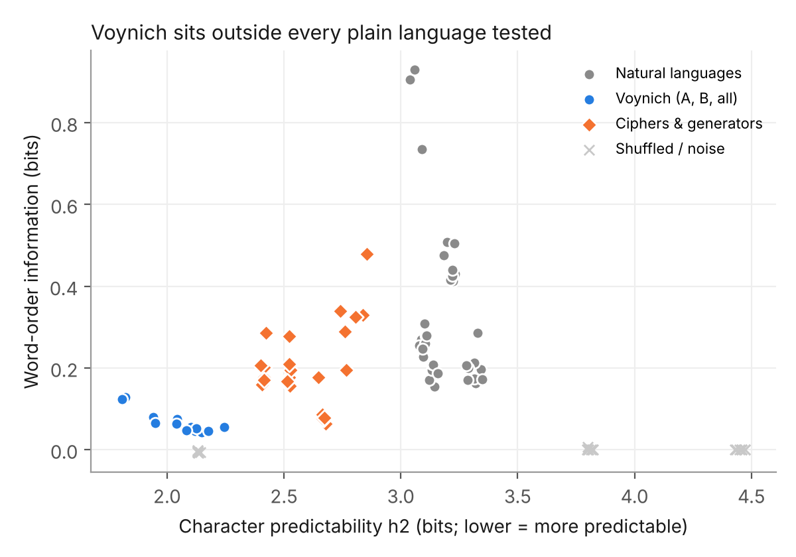
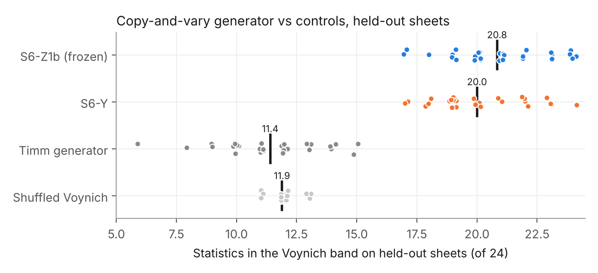
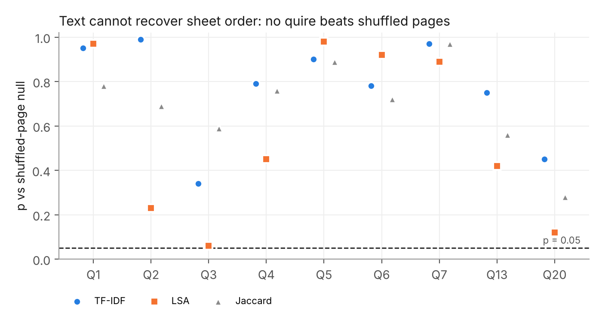
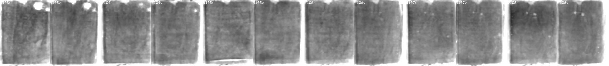
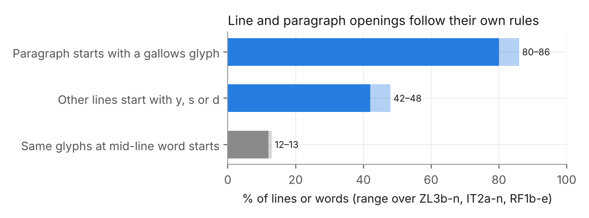
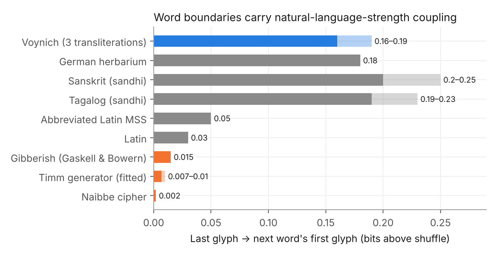
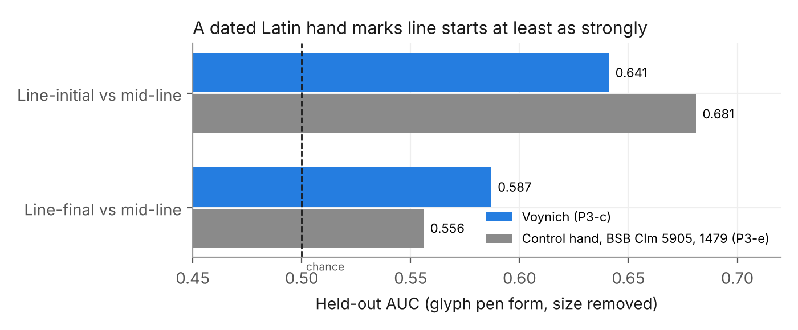
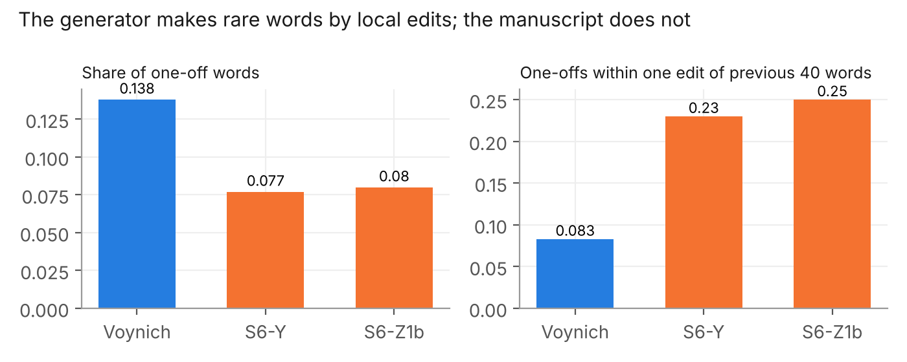
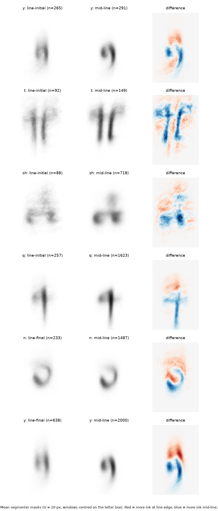

We ran 249 tests on the Voynich Manuscript, most of them checks of ideas other researchers have proposed. Every test was compared against shuffled or machine-generated text, and many were pre-registered. No reading or cipher held up on pages it wasn't built from, and we claim no translation. The text's statistics are well explained by a scribe copying and varying earlier words, with habits tied to line position, extending the self-citation model of Timm and Schinner. We also set out what that model still can't reproduce, and a catalogue of the one-off words it misses. The work was carried out with AI assistance (Claude) and checked by the author. Code, data and models are openly available.
A copying procedure, unlikely a cipher: 249 controlled
tests on the Voynich Manuscript
Abstract
We ran 249 tests on Beinecke MS 408, the Voynich Manuscript. Most of
them test hypotheses that other researchers proposed, and all of them
depend on transliterations, images, code and corpora those researchers
made public. Every test was compared against shuffled text, generated
text or both; 120 were pre-registered before the data were examined. A
reading would have counted as a translation only if it held on pages it
was not built from and beat those controls. None did, and we claim no
translation.
The positive findings mostly confirm earlier work. As Layfield and
Davis reported, pages on the same bifolium share vocabulary far beyond
chance, and inner conjoint pages share more than outer ones (sign-flip p
= 0.0008 with LSA, 0.047 with TF-IDF, 0.19 with Jaccard), which suggests
each sheet was written in reading order (Xr→Xv→Yr→Yv). The text cannot
recover the order of sheets inside a quire, however: no quire beats a
shuffled-page null (p 0.55–0.997). Calibration on known-order texts
shows the test finds the true order in roughly a quarter to a half of
quires when content runs on from page to page, almost never in an
alphabetical herbal, and in about 15% of quires of Voynich-like
generated text. Quire 20, the most testable quire, shows no measurable
page-to-page vocabulary carry-over, a level at which the test is near
chance. Stain and discolouration maps rank the current nesting first in
six of nine quires; in quire 20, paint transfers, an edge flaw and
wormholes also fix the current stack.
The text does not behave like a plain language: character
predictability (h2 = 2.07 bits against 3.06–3.33) and word-order
information (0.07 against 0.19–0.86 bits) fall outside six comparison
languages. Simple and homophonic substitution, several published
decipherments, word-level codes and crib attacks all failed, although
each decoder recovered planted signals at 92–99%. Two structures stand
out instead: strong line- and paragraph-position rules in the
transliterated text, and a coupling between a word’s last glyph and the
next word’s first glyph (0.16–0.19 bits) that matches natural languages
and exceeds every generator and cipher tested.
The statistics are well explained by a scribe copying and varying
earlier words, with habits tied to line position. This extends the
self-citation model of Timm and Schinner (2020). Our version of it, a
frozen copy-and-vary generator (S6-Z1b), reproduces 20.8 of 24
statistics on held-out sheets. That figure is not a comparison of merit
with Timm’s generator: we chose the 24 statistics and tuned our
generator towards them with far more settings than his model has. The
generator still makes rare one-off words the wrong way. A glyph-level
test of pen form at line edges, first reported as a possible
Voynich-specific signal, turned out to be ordinary: a dated Latin hand
(BSB Clm 5905, 1479) shows the line-initial effect at least as strongly
(AUC 0.68 against 0.64). We sort the findings into rules we can show,
choices that look free within those rules, and patterns that are
structured but unexplained, and we note that none of them requires or
rules out meaning.
Plain-language
summary
The Voynich Manuscript is a fifteenth-century book in an unknown
script, held by the Beinecke Library at Yale. Many careful people have
studied it, and much of what we did was possible only because they
published their transcriptions, measurements and code. We used that
material to ask specific questions and to check each answer against fake
versions of the text: the same words shuffled into random order, and
text produced by computer programs designed to imitate the manuscript. A
result counted only if the real manuscript behaved differently from
those fakes.
How the book was put together. The book is made of
folded sheets, each giving four pages. Lisa Fagin Davis and Colin
Layfield showed that pages on the same sheet share more words than pages
on different sheets. We found the same, by a wide margin, and also that
each sheet was probably written in the order you would read it once
folded. Layfield and Davis also proposed that the sheets were later
shuffled and bound out of their first order. We tried to recover the
first order from the text and could not: the words do not point to any
order better than chance. We then tested our method on books whose order
we know and found that it cannot detect order at this scale either, so
this is an absence of evidence, not evidence against their idea. The
physical marks on the pages (stains, ink offsets, paint in the folds,
wormholes) fit the present binding best in most quires, which suggests
the present arrangement is old.
What kind of text it is. Figure 1 places the
manuscript beside six languages, two ciphers and two text generators on
two measures: how predictable each letter is from the one before, and
how much word order matters. The manuscript sits outside every language.
Its letters are much more predictable and its word order carries almost
no information. We tried the standard ways of turning such a text back
into a language (letter-for-letter substitution, codes for whole words,
guessing known plant or star names as cribs) and several published
decipherments. Our decoders found hidden messages that we had planted in
test texts almost every time, but found nothing in the manuscript.

Figure 1. The manuscript (blue) lies
outside every natural language tested (grey) on letter predictability
and word-order information. Ciphers and generators (orange) come closer.
Data: language-test runs, 12-statistic profile.
What the text does have. Two patterns are strong.
Lines and paragraphs follow their own rules: paragraphs usually open
with a tall “gallows” glyph, and other lines often open with one of
three glyphs (Figure 5). And the end of one word predicts the start of
the next as strongly as in real languages (Figure 6), much more than in
any generator or cipher we tried. These patterns survive in three
independent transcriptions and in our own machine reading of the page
images.
A machine that writes Voynich-like text. Torsten
Timm and Andreas Schinner proposed that the scribe wrote by copying
earlier words and changing them slightly. We built on their idea, added
rules for line position and other habits, and tuned the result until it
matched the manuscript on 24 measures. On pages it was not tuned on, it
matches about 21 of the 24 (Figure 2). That number should not be read as
“better than Timm”: we picked the 24 measures ourselves and gave our
program many more settings to tune towards them, while Timm’s program
has only a few. What the test shows is that his basic idea still works
when it is pushed much harder. Our program still gets one thing wrong:
the manuscript is full of long words that appear only once, and our
program cannot make them the way the scribe did.

Figure 2. On held-out sheets, the frozen
copy-and-vary generator S6-Z1b falls in the Voynich range on 20.8 of 24
statistics. Timm’s generator (11.4) and shuffled Voynich text (11.9) are
shown for reference only: the 24 statistics are our choice, S6-Z1b was
tuned towards them with many more settings, and Timm’s generator was
not. Each dot is one held-out split; bars are means.
The pen at the edge of the line. We trained a
program to outline individual glyphs in the page images. Glyphs at the
start of lines are drawn a little differently from the same glyphs
mid-line. We then ran the same test on a Latin herbal manuscript copied
in 1479 by a known scribe, and found the same thing, slightly more
strongly: scribes of the period often enlarged or flourished the first
letter of a line. So this is ordinary scribal behaviour, not something
special about the Voynich script.
What this adds up to. The manuscript looks most like
text produced by a rule-governed writing procedure: copying and varying
words, with special rules at line and paragraph edges. That is close to
what Timm and Schinner and others have argued. We could not show that it
hides a language, and we could not show that it does not. Section 7
sorts what we found into three groups: rules we can demonstrate, choices
that look free within those rules, and patterns that are clearly
structured but that no model we built explains.
1 Introduction
Beinecke MS 408 has drawn more than a century of study. Currier
separated two “languages” (A and B) in 1976; Davis identified five
scribal hands; Zandbergen and Landini built the transliteration standard
and the reference site that most current work depends on; Timm and
Schinner proposed and implemented a self-citation model of how the text
was produced; and Layfield and Davis (2026) argued from same-sheet
vocabulary that many bifolia were written as loose singulions and later
nested in a different order. Timm reviewed that proposal and raised the
question of whether the text can carry order information at all.
This paper reports a series of tests of those ideas and of others:
published decipherments by Bax (2014) and Cheshire (2019), Greshko’s
Naibbe cipher (2025), Parisel’s cho/che switch (2026), Stolfi’s word
grammar and singulion model for quire 13, and Rugg’s table-and-grille
method (2004), which we used as a control. We did not set out to replace
any of these proposals. Where our version of a test failed, the failure
belongs to our version: our fitting, our transliteration choices and our
controls. The originals may survive a better test.
Three rules applied throughout. First, every claim was compared
against shuffled text, generated text or both. Second, tests that could
be pre-registered were (120 of 249), with the decision rule written
before the data were examined. Third, a decipherment counted only if it
held on held-out pages it was not built from and beat generated-text and
shuffled controls. Negative results are reported as plainly as positive
ones; the full register is in Appendix A.
Changes in version 1.2. The calibration of the
sheet-order test is now stated from the calibration results themselves
(Section 3.2), the physical-evidence summary separates the strong stain
maps from the weaker methods and adds the illustration continuities
(Section 3.3), all three similarity metrics are given for the
within-sheet result, the scoring bands are defined (Section 6.1), the
correction count has its sources, and figures are numbered in order.
Changes in version 1.1. The control-hand test (P3-e)
is added, and the line-edge pen-form result (P3-c) is now reported as
ordinary scribal behaviour rather than a new Voynich observation
(Section 5.1). The comparison with Timm’s generator is reframed (Section
6.1). Section 7 sorts the findings into three groups. Appendix E
summarises the catalogue of one-off words. References follow the Unified
Style Sheet for Linguistics.
2 Data
Transliterations. We used four IVTFF
transliterations from voynich.nu, all released under CC0: ZL3b-n
(Zandbergen and Landini), IT2a-n (based on Takahashi’s transcription),
RF1b-e and CD2a-n, credited to the transcribers named in each file
header. ZL3b-n was the default. Headline structural results were
repeated on IT2a-n and RF1b-e.
Machine transliteration. To check that results do
not depend on transcriber choices, we trained a Kraken line reader
(Kiessling 2019) from scratch on page images and IT labels. Three seeds
run as an ensemble reach a page character error rate of 0.111 [0.082,
0.143] against ZL on held-out pages, and 0.061 [0.048, 0.079] after a
geometry-only change to row grouping. Line CER on 649 ZL-paired test
lines is 0.073, close to Lemur Labs’ reported 7.0%; both figures are
optimistic because ZL helped choose the lines.
Images and glyph segmentation. Page images and
multispectral data are from the Beinecke Rare Book and Manuscript
Library, Yale University. We trained a U-Net glyph segmenter on rendered
scenes built from 37,086 clean exemplars, cross-fitted over two sheet
folds. Held-out IoU was 0.93–0.98 for k, t and n, against 0.81–0.88 for
a threshold baseline. Letter boxes came from the voynichese.com word
boxes archived by Rozanova and Temerev and from Ward’s
voynich-letters (2026). The control hand for the line-edge
test is Munich, Bayerische Staatsbibliothek, Clm 5905, from its IIIF
images.
Comparison corpora. These came from Gaskell and
Bowern (2022, gibberish and meaningful texts), Montemurro and Zanette
(2013), RIDGES Herbology v9.0 (Odebrecht et al. 2017), ReM (Klein et
al. 2016), HTRomance, and three Zenodo HTR ground-truth sets
(Klosterneuburg, Inzigkofen, Early New High German charters 1480–85),
plus editions of herbals and medical texts listed in the references and
in the corpus READMEs.
3 Part I: page order
3.1 Same-sheet units
Layfield and Davis found that pages on the same sheet share
vocabulary. Our manuscript-wide test agrees. Against a null stratified
by scribe, Currier language and illustration type, confoliate pairs
score z = +7.4 (TF-IDF), +6.2 (LSA) and +6.6 (Jaccard); inner conjoint
pairs score +5.7, +7.4 and +3.7. Inner conjoint pairs beat outer ones in
27 of 35 sheets (LSA sign-flip p = 0.0008; TF-IDF p = 0.047; Jaccard p =
0.19, not significant), so this result rests mainly on LSA. Fitting all
twelve four-page orders, Xr→Xv→Yr→Yv wins under TF-IDF and LSA. The
simplest reading is that each sheet was folded and written in reading
order. That fits the singulion picture, but it fits equally well with a
scribe filling one folded sheet at a time before nesting, which is
Timm’s “unit of production” reading. The signal shows the sheet was the
unit of writing, not that sheets were read as loose singulions.
3.2 Sheet order inside quires
If sheets were written as loose units and later nested, the text
might still carry their first order. We searched every nesting of nine
quires for the order that maximises adjacent-sheet similarity and
compared it with a null built from shuffled pages. No quire beats the
null under any of three metrics (Fisher combined p 0.55–0.997; Figure
3). The orders that Layfield and Davis proposed score at the random
level.

Figure 3. Sheet-order p-values by quire
for three similarity metrics, against a shuffled-page null. No quire
reaches p = 0.05.
A calibration matters here (Appendix C, §9 and S17). We cut
known-order texts into pages and fake quires of quire 20’s shape and ran
the same search and null. When content runs on from page to page or
sheet to sheet (The Forme of Cury, Isidore, the Gesta
Romanorum and longer texts), the test reaches p < 0.06 in
roughly 25–47% of quires, with false positives of 1–3% in scrambled
text. In an alphabetical herbal (Culpeper) it almost never finds the
order. On Voynich-like generated text with a planted page order (S17-E),
its power with LSA, the metric used for quire 20, is about 15%. The
decisive measurement is S17-I, which asked how much vocabulary actually
carries over from page to page in the Voynich itself. In quire 20 it
found none: the consecutive-page ratio is 1.15 (CI 0.91–1.42), at the
no-carry level, and at that level the test is near chance. Quire 20’s
own p values (0.056, and 0.14 for the f116r variant) therefore cannot be
read either way. Our negative result says nothing against the singulion
hypothesis itself; the question has to be settled by physical
evidence.
3.3 Physical evidence
Following Pelling (2006, 2022) and using Dulov’s wormhole survey
(2022) and the McCrone ink and pigment table (McCrone Associates 2009),
we looked at water stains, discolouration, ink offsets, gutter paint and
wormholes. The methods differ a great deal in strength. Stain and
discolouration maps, scored for every alternative nesting, rank the
current nesting first in six of nine quires; this is the only
manuscript-wide ranking. The offset detector found true offsets on only
about 3% of real facing pairs, so it has little power, and gutter paint
was inconclusive. Quire 20 has the most physical evidence. Its stain
pattern runs continuously across sheets in their present order (Figure
4), which loose singulions could not produce. Pelling’s two paint
transfers (f116r→f115v and f113v→f115r, the second past the vellum edge
flaw on f114) are both between pages that touch in the current binding,
and Dulov’s main wormhole track is absent on f111–f112 and grows
steadily from f113 to f116, as a worm entering from the back board
through the current stack would make. Skin-side alternation was random
with respect to binding (Gregory’s rule not supported). Together these
suggest that the current nesting is old, whatever the writing order
was.
We also checked five published claims that an illustration continues
across a fold that is not a facing pair today. Two are confirmed: the
streams of 78v|81r and the blue petals of 33v|40r really do continue
across the join, so those sheets were once open with their inner spread
exposed. That fits the singulion picture, but it also fits decoration on
flat sheets before sewing. One claim is contradicted: the splashed stain
listed for 10v|15r has no partner on 10v’s gutter, while 14v, the
neighbouring page in the current binding, has brown droplets in mirror
position on top of its paint. The splash therefore happened with 14v
facing 15r, in the current binding (pigment-coincidence check P = 0.020
for 14v|15r; 10v|15r scores 0). Pelling’s 84v|78r continuity also
failed. These are among the most concrete physical results bearing on
the Layfield and Davis proposal: two sheets did lie open, but the one
splash claimed for an earlier facing order belongs to the present
one.

Figure 4. Stain maps for quire 20
(f103–f108 shown). Stain edges line up across sheets in their present
nesting. Images: Beinecke Rare Book and Manuscript Library, Yale
University, MS 408.
4 Part II: what kind of text
4.1 Language profile
We measured twelve statistics on the manuscript, six natural
languages (Latin, Middle and Early Modern English, Italian, German), two
ciphers, the Timm and Rugg generators, shuffled text and noise.
Conditional character entropy h2 is 2.07 bits for the manuscript against
3.06–3.33 for the languages; word-order mutual information is 0.07 bits
against 0.19–0.86 (Figure 1). Ciphers that expand plaintext (verbose
Latin, sorted Latin) approach the manuscript on h2 but not on word
order.
4.2 Decipherment tests
The decipherment harness recovers true substitution and homophonic
keys from about 2,300 words of ciphertext. Bax’s 2014 reading fails in
all five languages we tried. Cheshire’s 2019 reading fails even with its
most favourable settings: fitted Timm text does as well, and its one
Latin pass does not hold across seeds. Bax-style plant-name keys, scored
on herbal pages away from his source leaves with Arabic names verified
in Leclerc’s Ibn al-Baytar (1877–1883) and Greek names from Wellmann’s
Dioscorides (1906–1914), rank true names no better than shuffled names
(p 0.48–0.63). A later language-model decoder fails in Latin, Middle
High German and Occitan, with restart agreement 0.11–0.19 against
0.54–0.92 in calibration, and Timm, shuffled and gibberish controls
match or beat the manuscript. Its Italian version passes calibration
(S16g), and the manuscript in Italian also fails. These are tests of our
implementations of the authors’ readings, not of every refinement they
might make.
Word-level codes, glossary-based codes, Tironian-style abbreviation,
ingredient notation and the Naibbe cipher (with Greshko’s own code) were
fitted to the manuscript and scored on held-out statistics. All failed;
Naibbe text matched 5 of 14 statistics. Crib decoders for plant names,
the f57v ring sequence, zodiac labels and marginalia recovered planted
names at 92–99% and found nothing in the manuscript. Decoders that look
for a message hidden in the copying choices themselves found nothing
beyond what generated text produces.
4.3 Line and paragraph rules
Line position shapes the text strongly (Figure 5). Paragraphs start
with a gallows glyph 80–86% of the time across three transliterations;
other lines start with y, s or d 42–48% of the time, against 12–13% for
the same glyphs at mid-line word starts. Line ends carry their own
marking. Compared with 13 real scribal manuscripts, the manuscript’s
line-end effect in the transliterated text (E2 +0.083) exceeds all of
them, and the machine transliteration gives the same value (+0.082), so
the effect is in the writing, not in transcription choices. These are
statistics of which glyphs appear where. The separate question of
whether the same glyph is drawn differently at a line edge is taken up
in Section 5.1, where a control hand shows that this kind of letter-form
marking is ordinary.

Figure 5. Line and paragraph openings
across three transliterations.
4.4 Coupling across word
boundaries
The last glyph of a word predicts the first glyph of the next by
0.16–0.19 bits above shuffle (Figure 6), in agreement with Rozanova and
Temerev (2026). That matches natural languages (a German herbarium gives
0.18) and is about twenty times the value for fitted Timm text
(0.007–0.010), Naibbe (0.002) or gibberish (0.015). The ratio of
boundary to within-word coupling is 0.16, inside the language range
(0.05–0.20) and far from randomly respaced text (1.1), so spaces mark
real boundaries.

Figure 6. Boundary coupling for the
manuscript, languages and generators.
It is not sandhi. With the root held fixed, a word’s final glyph does
not depend on the next word (excess 0.005 against 0.23–0.34 in
Sanskrit). Sandhi languages match the boundary strength but also show
strong ending agreement and word order, which the manuscript lacks
(ending agreement 0.0075 against 0.05–0.09). No language, cipher or
generator we tested combines strong boundary coupling with near-zero
agreement.
5 Robustness and image tests
The machine transliteration reproduces the key findings: boundary
coupling, line-start classes, line-end marking and the generator
ranking. Three human transliterations agree on all main structural
results.
5.1 Line-edge pen form (P3-c) and
the control hand (P3-e)
Using the segmenter, we measured pen-form features of glyph masks
with extent and size removed, and compared line-edge glyphs with the
same glyphs mid-line under placement matching. In the Voynich, held-out
AUC was 0.641 for line-initial against mid-line and 0.587 for line-final
(both p = 0.005). Shape-only (HOG) features give 0.633 and 0.586.
Placebo splits and a box-only control sit at chance. The line-initial
effect appears in every scribe and section with enough glyphs
(0.56–0.61); the line-final effect is uneven.
Version 1.0 of this paper called that a new positive result that
needed a control hand. The pre-registered control (P3-e) is now done. We
ran the same pipeline on BSB Clm 5905, a Latin herbal (Macer’s verse and
remedy prose) written in gothic cursive at Ebersberg in 1479 by Vitus
Auslasser: 336 text pages, 6,047 lines and 157,000 letters, with the
segmenter retrained on this hand’s own clean exemplars (rendered
validation IoU 0.94–0.98). The control hand shows a line-initial effect
of 0.681 (HOG-only 0.680, p = 0.005; placebo 0.522), above the Voynich
value (Figure 7). By the pre-registered rule this makes the Voynich
line-initial effect ordinary scribal behaviour. By eye,
the control’s line-initial letters are often enlarged or near-capital
forms (long-stemmed l, h, f and p), which is the same kind of habit as
the flourished line-initial y and gallows in the Voynich. The line-final
effect is weak in both hands (control 0.556, Voynich 0.587). The Voynich
value is formally the stronger one, but the gap in shape-only AUC is
0.03, below the 0.07 margin set in advance, so we do not count it as a
finding.

Figure 7. Held-out AUC for line-edge
against mid-line glyph pen form, Voynich (P3-c) and a dated Latin
control hand (P3-e, BSB Clm 5905, 1479). Placebo and box controls are at
or below chance in both. Derived from images of Beinecke MS 408
(Beinecke Rare Book and Manuscript Library, Yale University) and of Clm
5905 (Bayerische Staatsbibliothek, Munich).
We therefore withdraw the claim that the line-edge pen-form effect is
a new Voynich-specific observation. It is reported here as a negative
result: the Voynich scribes marked line starts in the way an ordinary
fifteenth-century scribe did. One control manuscript, in cursive and
with verse sections, is a narrow base. A prose-only textualis hand would
be a useful second control, but we do not expect it to change the
conclusion for the line-initial arm.
5.2 Tests that could not be
done
Several image tests failed their own calibration gates and are
reported as not testable. They include UV detection of erasures, Davis’s
stroke criteria for distinguishing scribes (third attempt, H10h),
ink-session breaks on f105r (the method finds a known break on f115r at
p = 0.001, but f105r only fades), and a suspected first-glyph column on
f88v. A literature sweep (P5-l) found about 16 published scribal
corrections in the Voynichese text, not the 40 sometimes cited: our own
six visible overwrites, the emendations shown in Zandbergen’s “apparent
lack of corrections” gallery on voynich.nu (which confirms four of ours
and adds five), and two uncertain spots raised on the Voynich Ninja
forum and by Pelling. Stolfi’s “retracer” passages are a different claim
(later reinforcement of faded ink) and were not counted. The full list
with sources is lit_corrections/published_corrections.csv
in the results archive.
6 Part III: a copy-and-vary
model
6.1 The S6 generator, and what the
comparison with Timm’s generator does and does not show
Timm and Schinner’s self-citation model proposes that each word is a
modified copy of an earlier one. We kept that core and added, in stages,
line- and paragraph-position rules, per-language parameters and a
boundary rule. The target was a 24-statistic profile, and each stage was
scored on held-out sheet halves under six split directions. The final
model, S6-Z1b, falls in the Voynich band on 20.8 of 24 statistics on
average, and passes in 5 of 6 directions (Figure 2).
How the bands were set matters. For each statistic, the band is the
95th percentile of the difference between two halves of the real
manuscript over 200 random sheet splits, so it does not depend on which
split is being scored. On this scale two real halves score 22–24 of 24
against each other, which is the ceiling a perfect generator could
expect. An earlier generator (the hybrid model) looked successful only
under the project’s first bands, which were about twice as wide as the
sample size allowed: it passed on 19 of 20 seeds under those bands and
on none under page-bootstrap bands. S6-Z1b’s 20.8 is measured with the
stricter split-independent bands, so it does not have that problem. A
later variant (S6-Z6) did not improve the held-out score and was not
kept. The generator was then frozen.
On the same held-out sheets Timm’s generator scores 11.4 and shuffled
Voynich text 11.9. This does not show that our generator is
better than Timm’s, and it should not be cited as showing that.
We chose the 24 statistics. We then tuned S6-Z1b towards them over many
rounds, with far more adjustable settings than Timm and Schinner’s model
has. Timm’s generator was run as published with its own settings and was
never tuned to our profile. A model fitted to a scorecard will do well
on that scorecard. Held-out sheets were needed because our
many-parameter model could overfit, not because anything was wrong with
Timm’s evaluation: a model with few parameters is reasonably judged on
the whole text, as Timm and Schinner did. What the comparison does show
is narrower. The copy-and-vary idea at the centre of their model can be
extended, rule by rule, to cover line position, paragraph openings and
language differences without breaking, and it then reproduces most of
what we measured. We see this work as extending and stress-testing their
idea, not replacing it.
6.2 What the generator misses
The generator still misses Zipf slope in 13 of 30 runs and three
other statistics in 9–11 runs. Its biggest failure is one-off words
(Figure 8). In the manuscript 13.8% of words occur once, and only 8.3%
of those are one edit from a word in the previous 40. The generator
makes fewer one-offs (7–9%) and builds 20–31% of them by local edits.
Adding one-off share to the fitting objective did not fix this: the fit
still prefers local recycling. Long real one-offs keep line-edge and
glyph-sequence habits that free recombination breaks. One-offs do not
cluster by subject the way topic nouns do in German herbals. Appendix E
summarises a catalogue of the 1,328 most isolated one-offs.

Figure 8. One-off words: share and
local-edit rate in the manuscript and two generator versions. S6-Z1b
values are the midpoints of its ranges (0.07–0.09 and
0.20–0.31).
7 What the procedure leaves over:
three kinds of finding
The tests above can be sorted into three groups. The sorting is ours
and is meant to help the next reader decide what to work on.
None of the three groups requires meaning, and none rules it
out. A procedure with rules, free choices and some unexplained
habits could carry a message or could carry none; our tests of meaning
(decoders, cribs, choice-channel readings) found nothing, but those
tests are bounded as Section 8 explains.
7.1 Rules we can show
These are regularities that beat shuffled text by a wide margin, hold
in several transliterations and, where tested, in the machine
reading.
Rule
Evidence
Controls
Copy and vary: words are modified copies of recent words
A frozen copy-and-vary generator reproduces 20.8 of 24 statistics on
held-out sheets
Held-out sheet halves, six split directions; shuffled Voynich
11.9
Paragraph openings
Gallows glyph first in 80–86% of paragraphs
Three transliterations; mid-line rates
Line openings
y, s or d start 42–48% of non-paragraph lines, against 12–13%
mid-line
Three transliterations; machine reading; shuffles
Line endings
Line-end effect E2 +0.083 in the text, above 13 real scribal
manuscripts
Confoliate pairs z +6.2 to +7.4; inner beats outer (p 0.0008 with
LSA; 0.047 TF-IDF; 0.19 Jaccard), suggesting order Xr→Xv→Yr→Yv
Null stratified by scribe, language and illustration
Section-level ending order
Adjacent ending-pair order is consistent within a section
(split-half ρ 0.41–0.57) but differs between sections of one hand
(herbal B vs balneological ρ 0.00)
Line-edge letter forms are not in this table. They exist in the
Voynich, but a dated Latin control hand shows them as strongly (Section
5.1), so they tell us about scribal practice in general, not about this
text.
7.2 Choices that look free within
those rules
These are the parts of the procedure where we could find no structure
beyond what random choice gives.
Choice
Evidence
Controls
Which earlier word is copied, and what is changed
The 26 copy-choice symbols, mapped to letters on fit pages and
scored on test pages, decode no better than shuffled in Latin, Middle
High German, Italian or Occitan, and no better than Timm’s random
choices
No quire beats a shuffled-page null (p 0.55–0.997)
Calibration shows the method cannot see order at quire scale, so
“free” here means “not visible”, not “absent”
Glyph variants that EVA merges
Variants in Claston’s transliteration depend on line and paragraph
position, not on any hidden choice
Labels shuffled within pages
7.3 Patterns that are structured
but unexplained
These beat their controls but no model we built reproduces them.
Pattern
Evidence
Controls
Why it is unexplained
Long one-off words
1,328 free one-offs (24% of one-offs) have fewer doubled e/i (0.30
against 0.44 in generator one-offs), more stacked gallows (0.16 against
0.11) and 133 start–ending pairs not seen in recurring words; enriched
in labels (p 0.0015)
The generator builds rare words by local edits; the scribe did
not
Neighbouring-word boundary link
Last glyph predicts next first glyph by 0.16–0.19 bits, with
near-zero ending agreement (0.0075)
Languages, sandhi languages, Timm, Naibbe, gibberish, respaced
text
Every language with this strength also shows ending agreement; every
generator is far weaker
Two-back onset alternation
A word’s onset is linked to the onset two words later (+0.011 bits,
p < 0.0005), in Currier B only
2,000 shuffles; Timm ≤ 0.005; gibberish
Not built into any generator; replicates in three
transliterations
Either the procedure had richer rules than ours, or the rules sit on
top of something else, a language or a stock of names, that the
procedure conceals. The data we have do not decide between these.
8 Discussion
Much of what we found confirms earlier work. Layfield and Davis’s
same-sheet signal is strong, and the within-sheet writing order fits
their singulion picture. Timm and Schinner’s self-citation idea,
extended with position rules, gives the best generative description of
the text that we could build. That is a statement about how far their
idea can be pushed, not a ranking of our generator against theirs
(Section 6.1). Parisel’s per-folio cho/che switch replicates in three
transliterations. Currier’s languages and Davis’s hands remain useful
structure: the generator needs per-language parameters, and the
line-start rules differ by section.
The negative results are bounded. A failed sheet-order search on
quire-sized text is uninformative by our own calibration. A failed
decipherment tests a particular decoder against a particular language
and transliteration. The decoders were calibrated on planted signals,
and the text was compared with generated controls, so the failures are
not blind, but they do not rule out a system we did not model. The
line-edge pen-form test is the clearest example of why controls matter:
within the Voynich it passed every internal check, and only a second
manuscript showed that it was ordinary.
9 Limitations
The glyph segmenter was validated by eye by the same session that
trained it, not by independent annotators.
The control-hand test uses one manuscript, in cursive, with verse
sections. Its letter cuts are coarser than the Voynich letter boxes,
which if anything biases it towards finding no effect.
Most tests use ZL3b-n; structural results were repeated on two other
transliterations and the machine reading, but many secondary tests were
not.
The language comparison uses a limited set of languages and
editions, and some comparison texts are normalised editions rather than
manuscripts.
Decipherment tests cover the languages, cipher families and readings
we implemented. Our versions of published readings may differ from the
authors’ intent.
The 24-statistic profile was chosen by us, and our generator was
tuned towards it. A generator that matches it may still differ from the
manuscript in ways the profile does not measure, as the one-off result
shows, and the profile is not a fair basis for ranking other
generators.
129 of 249 tests were exploratory rather than pre-registered and
should be read as such.
We did not reach Glen Claston’s hair/flesh list or the Beinecke
conservation notes (Zyats 2016), which may bear on the physical
analysis.
10 Future work
The one-off word process. Model how long one-off
words arise, given that they keep line-edge habits but have new
onset–ending pairs and fewer doubled glyphs. The catalogue in the
repository is a starting point.
A boundary mechanism that produces strong boundary
coupling without ending agreement or word order, tested against the
frozen S6-Z1b.
A second control hand (low priority). Repeat the
line-edge test on a prose-only textualis manuscript, mainly to check the
weak line-final arm.
Davis’s stroke criteria with independent
annotation. Ask independent annotators to mark strokes, then
retry the scribe-distinction test with the segmenter.
New multispectral imaging at higher resolution of
candidate erasures and ink breaks.
Hand-confirmed overwrites, using the segmenter to
propose candidates for expert review.
AI assistance
statement
This work was carried out with substantial AI assistance. Claude Opus
5.5, a large language model made by Anthropic, designed and ran the
analyses, wrote the code, drafted the pre-registrations and wrote this
paper, working under the direction of Paul Stark. Paul Stark chose the
questions and ground rules (shuffled and generated controls for every
claim, pre-registration where possible, held-out pages for any reading),
ran the GPU jobs on his own computer, decided which results to pursue
and how to present them, and checked the results and the text. Claude is
listed as a co-author to make its role clear; responsibility for the
paper rests with Paul Stark. All code, decision rules and outputs are
public so that any result can be checked independently.
Acknowledgements
This work rests on the research and generosity of the Voynich
community. We thank René Zandbergen and Gabriel Landini for the ZL
transliteration, the IVTFF format and voynich.nu; the transcribers
behind IT2a-n (Takeshi Takahashi), RF1b-e and CD2a-n; the EVMT project;
Lisa Fagin Davis for the scribal hands and the 2024 multispectral study;
Colin Layfield and Lisa Fagin Davis for the singulion hypothesis;
Torsten Timm and Andreas Schinner for the self-citation model, and
Torsten Timm for his generator code under MIT and his review of the
singulion proposal; Stephen Bax, Gerard Cheshire, Michael Greshko (the
Naibbe cipher and code), Christophe Parisel, Gordon Rugg and Jorge
Stolfi, whose proposals we tested; Prescott Currier; Nick Pelling,
Wladimir Dulov and McCrone Associates for physical evidence; Liudmila
Rozanova, Alexander Temerev and Lainey Louise Ward for word and letter
boxes; Benjamin Kiessling and the Kraken contributors; Daniel Gaskell
and Claire Bowern, Marcelo Montemurro and Damián Zanette, and the
editors of RIDGES, ReM, HTRomance and the Zenodo ground-truth sets; the
Bayerische Staatsbibliothek for the images of Clm 5905; and the Beinecke
Rare Book and Manuscript Library, Yale University, for the images and
multispectral data of MS 408.
References
Bax, Stephen. 2014. A proposed partial decoding of the Voynich
script. Version 1, January 2014. Self-published.
https://stephenbax.net/wp-content/uploads/2014/01/Voynich-a-provisional-partial-decoding-BAX.pdf.
Bayerische Staatsbibliothek. 1479. Clm 5905 (Macer, De viribus
herbarum, and Latin remedies; Ebersberg, scribe Vitus Auslasser).
Munich: Bayerische Staatsbibliothek. Digital facsimile:
https://www.digitale-sammlungen.de/view/bsb00092488.
Beinecke Rare Book and Manuscript Library. n.d. Cipher
manuscript (MS 408, the Voynich Manuscript). New Haven, CT: Yale
University. https://collections.library.yale.edu/catalog/2002046.
Brunel, Clovis. 1957. Recettes médicales, alchimiques et
astrologiques du XVe siècle en langue vulgaire des Pyrénées.
Romania 78(3). 289–339.
Cheshire, Gerard. 2019. The language and writing system of MS408
(Voynich) explained. Romance Studies 37(1). 30–67.
https://doi.org/10.1080/02639904.2019.1599566.
Currier, Prescott H. 1976. Papers on the Voynich Manuscript. In Mary
E. D’Imperio (ed.), New research on the Voynich Manuscript:
Proceedings of a seminar, 30 November 1976. Washington, DC.
Transcribed at https://www.voynich.nu/extra/curr_main.html.
Davis, Lisa Fagin. 2020. How many glyphs and how many scribes?
Digital paleography and the Voynich Manuscript. Manuscript
Studies 5(1). 164–180. https://doi.org/10.1353/mns.2020.0011.
Davis, Lisa Fagin. 2024. Multispectral imaging and the Voynich
Manuscript. Manuscript Road Trip (blog), 8 September 2024.
https://manuscriptroadtrip.wordpress.com/2024/09/08/multispectral-imaging-and-the-voynich-manuscript/.
Dulov, Wladimir. 2022. [Wormholes and page numbering in quire 20 of
the Voynich Manuscript.] Blog post, June 2022.
https://vladimirdulov.blogspot.com/2022/06/page-numbering-was-done-by-at-least-4.html.
Early New High German diplomatic HTR ground truth, version 2
(charters and registers, 1480–1485). n.d. Dataset. Zenodo.
https://zenodo.org/records/21257167.
Gaskell, Daniel E. & Claire L. Bowern. 2022. Gibberish after all?
Voynichese is statistically similar to human-produced samples of
meaningless text. In Proceedings of the International Conference on
the Voynich Manuscript 2022 (CEUR Workshop Proceedings 3313), paper
4. https://ceur-ws.org/Vol-3313/paper4.pdf.
Greshko, Michael A. 2025. The Naibbe cipher: A substitution cipher
that encrypts Latin and Italian as Voynich Manuscript-like ciphertext.
Cryptologia. https://doi.org/10.1080/01611194.2025.2566408.
Code: https://github.com/greshko/naibbe-cipher.
HTRomance project. n.d. HTRomance: Ground truth for handwritten text
recognition of medieval Romance-language manuscripts.
https://github.com/HTRomance-Project.
Ineichen, Gustav (ed.). 1962–1966. El libro agregà de
Serapiom. 2 vols. Venice & Rome: Istituto per la Collaborazione
Culturale.
Inzigkofen manuscripts (Berlin, Ms. germ. oct. 842 and fol. 1045),
full transcriptions. n.d. Dataset. Zenodo.
https://doi.org/10.5281/zenodo.17978574.
Kiessling, Benjamin. 2019. Kraken: An universal text recognizer for
the humanities. In Digital Humanities 2019 (DH2019): Book of
abstracts. Utrecht: Utrecht University. Software, version 7.1.1:
https://github.com/mittagessen/kraken.
Layfield, Colin & Lisa Fagin Davis. 2026. Singulion structure and
the Voynich Manuscript. Digital Medievalist 19.
https://doi.org/10.4000/16k0a.
Leclerc, Lucien (trans.). 1877–1883. Traité des simples par Ibn
el-Beïthar. 3 vols. Paris: Imprimerie nationale.
McCrone Associates. 2009. Materials analysis of the Voynich
Manuscript. Report prepared for the Beinecke Rare Book and Manuscript
Library. Westmont, IL: McCrone Associates.
Montemurro, Marcelo A. & Damián H. Zanette. 2013. Keywords and
co-occurrence patterns in the Voynich Manuscript: An
information-theoretic analysis. PLoS ONE 8(6). e66344.
https://doi.org/10.1371/journal.pone.0066344.
Odebrecht, Carolin, Malte Belz, Amir Zeldes, Anke Lüdeling &
Thomas Krause. 2017. RIDGES Herbology: Designing a diachronic
multi-layer corpus. Language Resources and Evaluation 51(3).
695–725. https://doi.org/10.1007/s10579-016-9374-3. Corpus version
9.0.
Parisel, Christophe. 2026. A quantitative confirmation of the Currier
language distinction. arXiv:2604.25979.
https://arxiv.org/abs/2604.25979.
Pelling, Nick. 2006. The curse of the Voynich: The secret history
of the world’s most mysterious manuscript. Surbiton: Compelling
Press.
Pelling, Nick. 2022. Quire 20, order from chaos… (Part 1: Evidence).
Cipher Mysteries (blog), 20 December 2022.
https://ciphermysteries.com/2022/12/20/quire-20-order-from-chaos-part-1-evidence.
Rozanova, Liudmila & Alexander Temerev. 2026. A glyph is not a
letter, a token is not a word, a space is not a space: What the units of
Voynichese are not. arXiv:2608.17096. https://arxiv.org/abs/2608.17096.
Word-box data: https://github.com/lrozanova/voynich-units.
Rugg, Gordon. 2004. An elegant hoax? A possible solution to the
Voynich manuscript. Cryptologia 28(1). 31–46.
https://doi.org/10.1080/0161-110491892755.
Stolfi, Jorge. 2000. A grammar for Voynichese words. Campinas:
Universidade Estadual de Campinas.
https://www.ic.unicamp.br/~stolfi/voynich/00-06-07-word-grammar/.
Timm, Torsten. 2026. [Review of Layfield and Davis’s singulion
hypothesis.] The Voynich Ninja forum, thread 5911.
https://www.voynich.ninja/archive/index.php/thread-5911.html.
Timm, Torsten. n.d. SelfCitationTextgenerator (software, MIT
licence). https://github.com/TorstenTimm/SelfCitationTextgenerator.
Timm, Torsten & Andreas Schinner. 2020. A possible generating
algorithm of the Voynich manuscript. Cryptologia 44(1). 1–19.
https://doi.org/10.1080/01611194.2019.1596999.
Wellmann, Max (ed.). 1906–1914. Pedanii Dioscuridis Anazarbei De
materia medica libri quinque. 3 vols. Berlin: Weidmann.
Zandbergen, René. n.d. The Voynich Manuscript (website).
https://www.voynich.nu.
Zandbergen, René & Gabriel Landini. n.d. ZL3b-n transliteration
of the Voynich MS, in IVTFF format. https://www.voynich.nu/transcr.html.
Released under CC0.
Zyats, Paula. 2016. [Codicology and conservation of MS 408.] In
Raymond Clemens (ed.), The Voynich Manuscript. New Haven, CT:
Yale University Press in association with the Beinecke Rare Book and
Manuscript Library. Not consulted.
Further comparison editions (Alphita, Sinonoma
Bartholomei, Brunschwig, Megenberg, Culpeper, Isidore, Pliny, Lilly
and The Forme of Cury) are listed with their editors and
sources in the corpus READMEs in the repository.
Appendix
A: test register
All 249 test entries in the consolidated findings, one row per test,
in the order recorded. “Pre” marks pre-registered tests. Verdicts are
quoted from each entry, or written by hand where an entry had none. The
machine-readable table is master_results_table.csv.
ID
Theme
Test
Pre
Verdict
§2
Page order & physical (§2)
Do pages on the same sheet share text? (same-sheet similarity)
CONFIRMED: same-sheet pages share vocabulary far beyond controls
§3
Page order & physical (§3)
In what order were the four pages of a sheet written? (within-sheet
sequence)
CONFIRMED (fairly strong): sheets written Xr→Xv→Yr→Yv (LSA p 0.0008)
§4
Page order & physical (§4)
Can the text recover the order of sheets? (sheet sequence from text)
NO: text cannot recover sheet order
§4a
Page order & physical (§4)
Exhaustive search vs shuffled-page null, all quires with ≥3 complete
sheets
FAIL: no quire beats shuffled-page null (9 quires); q20 borderline p
0.06–0.14
§4b
Page order & physical (§4)
Exact rebuild of Layfield & Davis LSA (mis-binding thread, finding
12)
L&D orders reproducible but at random-assignment level
§4c
Page order & physical (§4)
Positive control on Voynich text of known order (manuscript-wide, T5)
WEAK: little order signal even in known-order Voynich chunks
§4d
Page order & physical (§4)
Are quires textual units? (T6)
NEGATIVE: quires are not textual units
§4e
Page order & physical (§4)
Timm's Experiment 3, held-out A/B gradient (T7)
PARTIAL: A/B split survives; held-out gradient inside B only
§5
Page order & physical (§5)
What does the physical evidence say about sheet order?
Physical evidence fits the current (old) nesting
§5a
Page order & physical (§5)
Stain and discolouration sharing (manuscript-wide, results 7–8;
mis-binding finding 11)
CONFIRMED: current nesting fits stains best in 6/9 quires; no earlier
order recoverable
§5b
Page order & physical (§5)
Paint offsets and show-through (physical-offsets thread; manuscript-wide
p3)
NEGATIVE, weak test: only the current binding is visible
PASS within the Voynich; superseded by P3-e (ordinary scribal behaviour)
P4-L-d
Ink & image tests
Glyph segmenter and letter-level reruns (PC, 26 Nov 2026) / P4-L-d (f88v
first-glyph column, model boxes): NOT SUPPORTED.
NOT SUPPORTED
P4-S
Ink & image tests
Glyph segmenter and letter-level reruns (PC, 26 Nov 2026) / P4-S (f105r
ink-session breaks): NOT FOUND.
NOT FOUND
P3-e
Ink & image tests
P3-e (PC, 26 Nov 2026): control hand for the P3-c line-edge pen-form
effect — line-initial: ORDINARY; line-final: weak in both hands (p3e/, …
yes
ORDINARY: control hand shows line-initial effect as strongly (0.681 vs
0.641); line-final weak in both
Appendix B: pre-registrations
120 of 249 tests were pre-registered: the decision rule, bands and
controls were written to a PREREG.md file in the test’s
folder before the data were examined. The list below gives each
pre-registered test and its folder in the repository’s results
archive.
ID
Test
Folder
§5d
Literature constraints at full resolution (P7/P9 thread, 22 Nov,
physical_p7p9/REPORT.md, pre-registered)
S6-Z5 / A4-P full re-search (cloud, 26 Nov 2026): onset habit + A4 as
statistic 25, refit on Z1b — not kept (s6z/z5/)
s6z/z5/
P3-e
P3-e (PC, 26 Nov 2026): control hand for the P3-c line-edge pen-form
effect — line-initial: ORDINARY; line-final: weak …
p3e/
Appendix C: methods and
numbers by test

P3-d, illustration only: mean segmenter
masks for line-edge and mid-line glyphs. Red marks more ink at the line
edge, blue more ink mid-line. Band-fit error at line ends partly
confounds these means, so they are not evidence. Derived from images of
MS 408, Beinecke Rare Book and Manuscript Library, Yale
University.
Each entry gives the test, its verdict, its controls and an excerpt
of the recorded result. Full write-ups, code and outputs are in the
folders named in Appendix B.
Page order &
physical (§2)
§2. Do pages on the same sheet share text? (same-sheet
similarity)CONFIRMED: same-sheet pages share
vocabulary far beyond controls
Result: YES, strongly. CONFIRMED by two threads with independent code.
Numbers (manuscript-wide, manuscript_wide/t1.out; z against stratified
null): · Pair type · n · TF-IDF z · LSA z · Jaccard z Confoliate (Xr ·
Xv, Yr · Yv) · 71 · +7.4 · +6.2 · +6.6 Inner conjoint (Xv · Yr) · 36 ·
+5.7 · +7.4 · +3.7 Same sheet, distance 2 (Xr · Yr, Xv · Yv) · 71 · +3.8
· +3.9 · +3.0 Outer conjoint
Controls: z against stratified null): · Pair type · n · TF-IDF z · LSA z
· Jaccard z Confoliate (Xr · Xv, Yr · Yv) · 71 · +7.4 · +6.2 · +6.6
Inner conjoint (Xv · Yr) · 36 · +5.7 · +7.4 · +3.7 Same sheet, distance
2 (Xr · Yr, Xv · Yv) · 71 · +3.8 · +3.9 · +3.0 …
Page order &
physical (§3)
§3. In what order were the four pages of a sheet written?
(within-sheet sequence)CONFIRMED (fairly strong):
sheets written Xr→Xv→Yr→Yv (LSA p 0.0008)
Result: Xr→Xv→Yr→Yv, i.e. written as a folded sheet in reading order.
Upgraded from "suggestive" (v1) to "fairly strong" (manuscript-wide). -
Inner conjoint beats outer conjoint in 27 of 35 sheets with LSA
(sign-flip p = 0.0008), TF-IDF p = 0.047, Jaccard p = 0.19 (n.s.). -
Fitting all 12 four-page orders: Xr→Xv→Yr→Yv wins with TF-IDF (bootstrap
52%) and LSA (89%). Jaccard prefers Xr→Xv→Yv→Yr (42%). - v1 finding 3 ha
Controls: - Fitting all 12 four-page orders: Xr→Xv→Yr→Yv wins with
TF-IDF (bootstrap 52%) and LSA (89%).
Page order &
physical (§4)
§4. Can the text recover the order of sheets? (sheet sequence from
text)NO: text cannot recover sheet order
Result: NO. NEGATIVE across every quire, metric and thread.
§4a. Exhaustive search vs shuffled-page null, all quires with ≥3
complete sheetsFAIL: no quire beats shuffled-page
null (9 quires); q20 borderline p 0.06–0.14
Controls: null = real pages shuffled into random slots, full search
rerun, best-minus-median gap compared) · Quire · Sheets · Orders · p
TF-IDF · p LSA · p Jaccard · Binding rank (TF-IDF) 1 (A) · 4 · 24 · 0.95
· 0.97 · 0.78 · 3 2 (B) · 3 · 6 · 0.99 · 0.23 · 0.69 · 1 3
§4b. Exact rebuild of Layfield & Davis LSA (mis-binding thread,
finding 12)L&D orders reproducible but at
random-assignment level
Pipeline: their stop-word heuristic (w = 6, v = 3 → 29 stop words),
~40-word documents (722; 719 in the manuscript-wide rebuild), TF-IDF,
SVD k = 75, pages folded in, cosine. Score = mean cosine at singulion
transitions (Yv of sheet i → Xr of sheet i+1). Statistic = best minus
median over all orders. lsa_reorder.py in the zip. - Quire 20: their
order 105 · 114 → 104 · 115 → 106 · 113 → 107 · 112 → 108 · 111 → 103 ·
116 comes o
Controls: Shuffled-page null (3,000 perms): 0.170 vs null 0.135, p =
0.056 (f116v); Null: 0.118 vs 0.121, p = 0.52.
§4c. Positive control on Voynich text of known order
(manuscript-wide, T5)WEAK: little order signal even
in known-order Voynich chunks
Within a page, adjacent 30-word chunks are slightly more alike than
chunks 6+ apart (cosine 0.049 vs 0.036; different-sheet baseline 0.028).
- Pseudo-sheets built from consecutive chunks: the true order ranks
first in 7.9% of 63 tests (chance 4.2%); mean percentile 0.41 (chance
0.50, p = 0.005). - So sequence signal exists in Voynich text but is far
too weak to pick out an order. Most similarity is "same page/same
Controls: different-sheet baseline 0.028).
§4d. Are quires textual units? (T6)NEGATIVE:
quires are not textual units
Hand-1 / Currier A herbal sheets (21 sheets, quires 1–7): same-quire
minus other-quire similarity −0.0007, p = 0.56. No decay with quire
distance (r = −0.10, p = 0.15). Leave-one-out: a sheet's nearest quire
is its own for 2 of 21 (null 3.7, p = 0.86). - The text gives no
grouping of sheets into quires, so it cannot confirm or overturn the
quires.
Controls: Leave-one-out: a sheet's nearest quire is its own for 2 of 21
(null 3.7, p = 0.86).
§4e. Timm's Experiment 3, held-out A/B gradient (T7)PARTIAL: A/B split survives; held-out gradient inside B
only
27 herbal sheets seriated on vocabulary with all <ed> and -dy
forms removed. Still splits B from A completely (6 B, then 21 A). -
Held-out <ed> rate falls inside B (Spearman −0.83, n = 6, p =
0.03), flat inside A (+0.13, p = 0.72). A step for A, a possible slope
at the B end. Six B sheets is too few to settle it. Caveats for section
4: the methods are weak even on known-order Voynich chunks (4c). A
negative here me
Controls: - Held-out <ed> rate falls inside B (Spearman −0.83, n =
6, p = 0.03), flat inside A (+0.13, p = 0.72). Section 9 (calibration)
is what decides how much a negative or a borderline p means.
Page order &
physical (§5)
§5. What does the physical evidence say about sheet order?Physical evidence fits the current (old) nesting
§5a. Stain and discolouration sharing (manuscript-wide, results 7–8;
mis-binding finding 11)CONFIRMED: current nesting
fits stains best in 6/9 quires; no earlier order recoverable
Result: the current nesting fits best, in most quires. CONFIRMED. It
cannot recover any earlier order. Method: each page cut to its interior,
reduced to a 48×64 grid of parchment brightness (80th percentile per
cell) and yellowness; versos mirrored to leaf frame; recto and verso
averaged to a leaf map; high-passed. Every possible stack is scored by
summed correlation of physically touching leaves, over all nestings a
Controls: (manuscript_wide/p1.out) - Quire boundary control:
neighbouring leaves inside a quire correlate 0.22; Controls: random
regions elsewhere rank the binding order only modestly (median 5.6% of
nestings better;
§5b. Paint offsets and show-through (physical-offsets thread;
manuscript-wide p3)NEGATIVE, weak test: only the
current binding is visible
Result: only the current binding is visible. NEGATIVE, and the test is
WEAK. - Show-through from the next leaf down is visible in 12.9% of
neighbouring pairs and never in the reverse direction (the control).
Example: f23r visible through f22r. This proves the detector works but
is a property of the photography. Anyone reading ghosts by eye should
know a faint image can come from the leaf underneath. Figure: physical
Controls: - Show-through from the next leaf down is visible in 12.9% of
neighbouring pairs and never in the reverse direction (the control). -
True offsets from the current facing page: ~3% of facing pairs vs 0.3%
of random pairs.
§5c. Gutter-crossing paint, automated (manuscript-wide, p2)INCONCLUSIVE: too little gutter paint to test
Result: INCONCLUSIVE. Inner conjoint spreads r = +0.24 (n = 6, p =
0.07); current facing spreads +0.14 (n = 21, p = 0.10). Top inner pairs
33v · 40r (+0.62), 34v · 39r and 25v · 32r (+0.51). Ink: nothing (p =
0.29–0.47). Too few pages carry paint at the gutter; the strip method
misses 78v · 81r, which is clear by eye. See section 7 for the visual
check.
§5d. Literature constraints at full resolution (P7/P9 thread, 22 Nov,
physical_p7p9/REPORT.md, pre-registered)Literature
quire-20 evidence fits the current stack
Result: the literature's quire-20 evidence supports the CURRENT stack;
nothing shows an earlier order. - What the sources say (checked 22 Nov):
Pelling's quire-20 transfers are f116r→f115v (top two red stars) and
f113v→f115r (6th red star, "past the vellum edge flaw on f114"). Both
are on pages that touch in the current binding, so the old note that
they "contradict Dulov" was an over-reading. No source was found for
Page order &
physical (§6)
§6. Skin side (hair vs flesh) and Gregory's ruleFaces differ consistently; orientation random (no Gregory's
rule)
Result: the two faces of each sheet differ consistently (CONFIRMED);
orientation is random with respect to the binding (NEGATIVE for any
planned scheme). - Sheet consistency (does Xr−Xv agree with Yv−Yr, the
same face?), 41 bifolia, null pairs each leaf difference with another
sheet's: grain r = +0.56 (p = 0.0001), yellowness b* r = +0.73 (p <
0.0001, 88% sign agreement), a* r = +0.43 (p = 0.004), L* none. Grainier
f
Controls: orientation is random with respect to the binding (NEGATIVE
for any planned scheme). - Sheet consistency (does Xr−Xv agree with
Yv−Yr, the same face?), 41 bifolia, null pairs each leaf difference with
another sheet's: grain r = +0.56 (p = 0.0001), yellowness …
Page order &
physical (§7)
§7. Wear and handlingDOWNGRADED: wear finding is
mostly a photography artefact
Result: the original "wear" finding is mostly a photography artefact.
DOWNGRADED. - v1 finding 6 (2006 scans, 152 pages): inner sheets' outer
faces cleaner at edges (p = 0.005, corners p = 0.002), opposite to the
singulion-exposure prediction; outermost sheets darker overall (9/10, p
= 0.02) and at top edge (p = 0.03). This was read as "favours long-lived
nested quires". - Replicated on Yale photos (finding 10): inne
Controls: - Practical rule: wear from photographs of a bound book needs
position-matched controls.
Page order &
physical (§8)
§8. Illustration continuities across the gutter2
of 5 claimed continuities confirmed, 1 contradicted, 2
non-discriminating
Result: 2 of 5 claimed continuities hold up; 1 is contradicted; 2 cannot
discriminate. (continuity/CONTINUITY_REPORT.md; claims from Layfield
& Davis ¶6–7, after Pelling 2006) · Claim · Verdict · Evidence 78v ·
81r streams · Confirmed · Pipe/streams from the 78v pool run to the
fold; two streams enter 81r at the same height. Nothing on 78v · 79r or
80v · 81r. continuity/5_78v_81r.jpg 33v · 40r b
Controls: 4_76v_83r.jpg · Random-pair baseline (8,366 verso×recto
combinations, coincident marks at matching height): pigment, 97% of
random pairs score 0;
Page order &
physical (§9)
§9. Calibration on known texts (final for the quire 20 shape)Calibration: q20-shape p cannot separate no-sequence
from herbal-like sequence
calibration/CALIBRATION_RESULTS.md. Known-order texts were cut into
470-word pages and grouped into fake quires of quire 20's shape (6
sheets, 720 orders). The pipeline, the search and the shuffled-page null
were the same as in §4b. There were two page models. In run, the text
flows across page breaks. In aligned, every page starts on a new entry.
Scrambled runs give the false-positive rate. · Text · best order = t
Controls: calibration/CALIBRATION_RESULTS.md. The pipeline, the search
and the shuffled-page null were the same as in §4b.
§9b. S17: quire 13 shape, longer texts, adjacency test (22 Nov,
calibration/s17/REPORT.md)Old test conservative;
pre-registered adjacency test A1 FAIL (power 7–15%)
Quire 13 shape finished. Same picture as quire 20: the old test
finds topical order (aligned LSA, p < 0.06 in 33–45% of windows for
Cury, Isidore, Gesta) but not the alphabetical herbal (Culpeper 10%,
scrambled 7%). - Longer texts (Isidore I–XX, Darwin, Burton, Pliny NH
II+XXXVII; 13–26 independent quires each) show the old best-minus-median
test is conservative: false positives 1–3% over 1,656 scrambled windows.
T
Controls: Skip control (sheets 3 apart) 2–3.5%, so it responds to
adjacency, not topic. - Pre-registered adjacency test A1 (residualised
best path, cell-permutation null): FAIL as a usable test.
§9c. S6-B: which bands judge the hybrid generator? (22 Nov,
bundle/s6b/REPORT.md): FAILFAIL
The yardstick was the Voynich FIT half scored against TEST. A band set
is valid if FIT passes and no control does. Three sets are valid. Under
project bands (P) the hybrid passes on 19/20 seeds (19–22/24). Under
page-bootstrap bands (B) it passes on 0/20 (12–17/24), and under
bootstrap + FIT–TEST difference (H) also on 0/20 (15–19/24). FIT itself
still scores 22–24 under B and H. The stricter bands are therefore not
Controls: A band set is valid if FIT passes and no control does. Under
page-bootstrap bands (B) it passes on 0/20 (12–17/24), and under
bootstrap + FIT–TEST difference (H) also on 0/20 (15–19/24).
§9d. S17-E: calibration on Voynich-like text with a planted sheet
order (26 Nov, PC s17e/REPORT.md, pre-registered)LSA weak (power 0.15), Timm blind, tf-idf discriminates
Texts: hybrid generator (trial 1594) on quire 20's page shapes,
pages written in sequence; carry (previous page's words kept as copy
sources) sets the page-to-page drift. carry 0 and carry 9 with sheets
permuted are the nulls; carry 9 (fitted value) is the primary planted
order; 50/150/376 dose response. Plus Timm pages (writing order vs
permuted). Same best-minus-median test as calib.py (q20 shape, 500
shuffles)
Controls: - Texts: hybrid generator (trial 1594) on quire 20's page
shapes, pages written in sequence; carry 0 and carry 9 with sheets
permuted are the nulls;
§9e. S17-I: the Voynich's own page carry-over (26 Nov, cloud,
s17i/REPORT.md, pre-registered)Same-leaf r→v carry
real (R 2.53, p 0.0005); quire 20 no measurable carry
Measure: shared rare-type overlap (count 2..10) of consecutive pages
/ same-section same-hand pages ≥ 6 apart. Voynich same-leaf r→v: R 2.53
(CI 1.97–3.13); cross-sheet 1.97; within-section shuffle null 1.64 (p
0.0005). Generator (trial 1594): carry 0 1.23, carry 9 5.74, carry
50–376 8–11. - The real carry is between 0 and 9 (≈ 3–6 words by
interpolation, an upper bound since topic adds to it). No S17-E level
match
§9f. C3: genre-sensitive tests rerun on period German herbal/medical
texts (26 Nov, cloud, c3/REPORT.md, pre-registered): all FAILFAIL
Section topic words: genre-matched sections (Brunschwig
waters/remedies/surgery, Breslauer herbal/medicine) give r_p 0.50–0.69,
above Pliny/Megenberg; new 10th pct 0.47/0.57/0.62 vs Voynich
0.18/0.31/0.27. The genre escape is closed; the Voynich's section words
stay spelling-driven. - Nomenclator held-out: 0/5 seeds on Gart,
Brunschwig, Breslauer (10–12/24). Held-out R 0.8–1.5 vs Voynich 0.32, so
the Dante/Megenb
Controls: - Nomenclator held-out: 0/5 seeds on Gart, Brunschwig,
Breslauer (10–12/24). Held-out R 0.8–1.5 vs Voynich 0.32, so the
Dante/Megenberg boundary positive does not generalise.
Page order &
physical (§10)
§10. Published orders scored against every alternativePublished orders at random-assignment level
(Manuscript-wide, manuscript_wide/t8.out, t9.out; proposals from
page-order-review/proposed_orders.csv.) Each full order is placed among
every arrangement of the same sheets: all nestings and all singulion
stacks, every sheet order and orientation (7,680 for quire 13; 92,160
for quire 20). Score = share of arrangements at least as good (0.01 =
top 1%, 0.5 = typical). Text is ranked among arrangements of the sam
Controls: · Proposal · Basis · Text LSA · Text TF-IDF · Stains
brightness · Stains yellowness Q13 current binding · baseline · 0.54 ·
0.88 · 0.057 · 0.019 Q13 Layfield & Davis best · LSA · 0.001 · 0.09
· 0.79 · 0.73 Q13 Layfield & Davis 2nd · LSA + initial · 0.001 · …
Language,
generator & decipherment (§13)
S13:Sheets as units. Sheets as units (sheets_as_units/). Hand and
section each carry vocabulary independently (p ≤ 0.008). Language adds
nothing once hand is known. Sheet-to-sheet affinities beyPASS: hand and section carry vocabulary; sheet affinities
replicate
Sheets as units (sheets_as_units/). Hand and section each carry
vocabulary independently (p ≤ 0.008). Language adds nothing once hand is
known. Sheet-to-sheet affinities beyond metadata replicate across split
halves (r +0.37, p = 0.0002), but they do not follow binding position
once section is controlled (p = 0.14).
Controls: Sheet-to-sheet affinities beyond metadata replicate across
split halves (r +0.37, p = 0.0002), but they do not follow binding
position once section is controlled (p = 0.14).
S13:Plant drawings. Plant drawings (plant_drawings/). A six-feature
drawing code does not explain those affinities (split-half r 0.341 →
0.338). Drawing similarity does not predict text similaFAIL: drawings do not predict text similarity
Plant drawings (plant_drawings/). A six-feature drawing code does
not explain those affinities (split-half r 0.341 → 0.338). Drawing
similarity does not predict text similarity (p = 0.46). With one coder
and coarse features, an effect of about r ≤ 0.1 remains possible.
S13:Labels. Labels (labels/, grammar_labels/). Labels are mostly
one-offs: they are reused 2–4× less than length-matched text
words (p ≤ 0.008). They do not reappear in theLabels are one-offs, not captions or reusable names
Labels (labels/, grammar_labels/). Labels are mostly one-offs: they
are reused 2–4× less than length-matched text words (p ≤
0.008). They do not reappear in their own page's text (E_L 0.93, p =
0.79). 0/126 pharma labels match herbal first words. Weak leads: jar and
fragment labels end differently (p = 0.008, one of about 18 tests).
Labels are not captions and cannot serve as cribs.
S13:Language test. Language test (language_test/). It is not like any
plain language tested. Character predictability h2 is 2.07 bits
(languages 3.06–3.33), and word-order information isnot like any plain language tested
Language test (language_test/). It is not like any plain language
tested. Character predictability h2 is 2.07 bits (languages 3.06–3.33),
and word-order information is 0.07 (languages 0.19–0.86). Near-copies
(1.48×) and exact repeats (1.97×) are above every language. Word length,
Zipf, burstiness and compression all fall inside the language range.
Compression separates the text from noise (z 10–14), but not from
S13:Word families. Word families (word_families/). Pharma has
specialised vocabulary that recurs in the herbal text and replicates on
a held-out pharma sheet (×3.0, p = 0.002). Whole words dREPLICATES
Word families (word_families/). Pharma has specialised vocabulary
that recurs in the herbal text and replicates on a held-out pharma sheet
(×3.0, p = 0.002). Whole words do the same, so this is not evidence of
word-building. Rugg-style text is ruled out for this structure (R ≈ 0).
Family co-occurrence does not beat the Timm generator.
Controls: Pharma has specialised vocabulary that recurs in the herbal
text and replicates on a held-out pharma sheet (×3.0, p = 0.002). Family
co-occurrence does not beat the Timm generator.
S13:Fitted Timm generator. Fitted Timm generator (timm_generator/,
Timm's own Java code, fitted on FIT sheets). The "roots generalise
better than words" lead does not replicate (G = −0.005). The wider fnot replicate
Fitted Timm generator (timm_generator/, Timm's own Java code, fitted
on FIT sheets). The "roots generalise better than words" lead does not
replicate (G = −0.005). The wider fit matches word-length spread and, at
a cost, vocabulary. Line position separates the real text from the
generator. The first glyph of a line-initial word shifts by 0.213 JS
bits against the generator's 0.047–0.060 (z 6.0–6.6). The generator
Controls: - Fitted Timm generator (timm_generator/, Timm's own Java
code, fitted on FIT sheets). Line position separates the real text from
the generator.
S13:Grammar-like dependence. Grammar-like dependence
(grammar_labels/). Ending-to-ending dependence is real (z 11–15) and
beats fitted Timm on different-ending pairs (0.006 vs ≤ 0.0035). It is
about a third ofFAIL grammar rule: ending
dependence real but a third of the weakest language
Grammar-like dependence (grammar_labels/). Ending-to-ending
dependence is real (z 11–15) and beats fitted Timm on different-ending
pairs (0.006 vs ≤ 0.0035). It is about a third of the weakest language
(0.018), so it fails the grammar-like rule. The ending-by-line-position
effect is reproduced by Timm.
S13:Decipherment harness. Decipherment harness
(decipherment_harness/). The harness recovers a true simple-substitution
key from about 2,300 words (95–100% correct). Bax 2014 fails in all 5
languages.Bax 2014 fails
Decipherment harness (decipherment_harness/). The harness recovers a
true simple-substitution key from about 2,300 words (95–100% correct).
Bax 2014 fails in all 5 languages. Cheshire 2019 fails, even when given
its most favourable values: fitted Timm text does as well, and the one
Latin "pass" is not robust across seeds. The best key fitted from
scratch makes the Voynich no more Latin- or Italian-like than glyph
Controls: The best key fitted from scratch makes the Voynich no more
Latin- or Italian-like than glyph-shuffled text (M1 3.99 vs 3.82).
S13:Cribs and keys. Cribs and keys (cribs/REPORT.md). Five candidate
"Rosetta stones" tested; none holds on held-out text. Zodiac nymph
labels are not numerals (247 forms in 299, 1 same-ponone holds on held-out text.
Cribs and keys (cribs/REPORT.md). Five candidate "Rosetta stones"
tested; none holds on held-out text. Zodiac nymph labels are not
numerals (247 forms in 299, 1 same-position match). A weak same-position
similarity across signs (p 0.027) is not significant once 4 reading
orders are allowed for (p 0.11). The f57v ring is not the text's
alphabet: it omits e, a, i, ch and n (37% of glyphs), and as a key it
scores M1
Controls: none holds on held-out text. Period ciphers (homophones and
nulls) are covered by the harness fit, which failed.
S13b:Step 1, human gibberish. Step 1, human gibberish (gibberish/;
Gaskell & Bowern 2022 data). At 300 words, gibberish matches the
Voynich's weak word order and weak ending dependence, which meaningful
texts faGibberish matches weak word order but lacks
the line rules
Step 1, human gibberish (gibberish/; Gaskell & Bowern 2022
data). At 300 words, gibberish matches the Voynich's weak word order and
weak ending dependence, which meaningful texts fail (59% vs 32%
"Voynich-like", p = 0.007). E1 has no power at that size. A powered
pooled test (10k words) shows the gibberish line-start first-glyph shift
is +0.004, against +0.18 to +0.24 in the Voynich: gibberish lacks the
line-star
S13b:Step 2, line-start rule. Step 2, line-start rule (line_start/).
45% of lines start with p, t, y, s or f words (p 17×, t 6×, y 3.9× their
mid-line rates). Stripping that glyph removes 84% of E1, but the
striCONFIRMED: strong line-start glyph rule (p 17×,
t 6×)
Step 2, line-start rule (line_start/). 45% of lines start with p, t,
y, s or f words (p 17×, t 6×, y 3.9× their mid-line rates). Stripping
that glyph removes 84% of E1, but the stripped forms are ordinary words
at the same rate as for mid-line words, so an "added marker" can't be
told from a word-class choice (pre-registered test fails). Line-initial
words are also longer (+0.57 glyphs), which gibberish shows too
Step 3, word-level codes (word_codes/). All fail: - Latin/German
abbreviation: word order unchanged, and h2 goes up. - Lingua
Ignota-style invented words, and one-to-one nomenclators or relexified
constructed languages: word order exactly unchanged (0.19–0.61). -
Homophonic word codes: match word order but break Zipf and burstiness. -
None of them yields near-copies or immediate repeats.
S13b:Step 3b, ingredient-list notation. Step 3b, ingredient-list
notation (ingredient_list/). Fails. There are no closed quantity slots,
and paragraph-initial words are more unique than other
line-initial words (ratio 0.23–0.68).FAIL
Step 3b, ingredient-list notation (ingredient_list/). Fails. There
are no closed quantity slots, and paragraph-initial words are
more unique than other line-initial words (ratio 0.23–0.68).
Leads: line-final words are rare types in S, P and B (0.45–0.64×
shuffle; Timm 0.9+), and every paragraph opens with a fresh gallows
word.
Controls: Leads: line-final words are rare types in S, P and B
(0.45–0.64× shuffle;
S13b:Step 4, Naibbe cipher. Step 4, Naibbe cipher (naibbe_test/;
Greshko's published Latin ciphertext). It matches 5/14 held-out
statistics. It has no burstiness, near-copies or repeats, and too little
wordFAIL: Naibbe matches 5/14 held-out
statistics
Step 4, Naibbe cipher (naibbe_test/; Greshko's published Latin
ciphertext). It matches 5/14 held-out statistics. It has no burstiness,
near-copies or repeats, and too little word order. Fitted Timm plus the
step-2 line rule matches 11–12/14, the best fit so far. It still misses
word order (~30% weak), line-final glyphs (overshoot) and the full size
of E1 (under half). Per the decision gates, the decoder (step 5)
Controls: It matches 5/14 held-out statistics.
S13b:Step 6, Currier A vs B as one system res. Step 6, Currier A vs B
as one system respelled (ab_alignment/). No evidence. Rewrite rules
close 22% of the herbal A→B vocabulary gap on TEST, about the same as
rules learned against glyph-shuffledFAIL
Step 6, Currier A vs B as one system respelled (ab_alignment/). No
evidence. Rewrite rules close 22% of the herbal A→B vocabulary gap on
TEST, about the same as rules learned against glyph-shuffled B (19%) and
below Latin→Italian (27%). The method failed its own calibration
(medieval-spelled Latin 1%, Latin→English 39%), so this null carries
little weight.
Controls: Rewrite rules close 22% of the herbal A→B vocabulary gap on
TEST, about the same as rules learned against glyph-shuffled B (19%) and
below Latin→Italian (27%). The method failed its own calibration
(medieval-spelled Latin 1%, Latin→English 39%), so this null …
S13b:Own copy-and-vary generator. Own copy-and-vary generator
(own_generator/; pair copying, line-start class, no trimming; fitted on
FIT). Fails: 5–6/14 TEST statistics, against 11–12 for Timm + line rule.
Pair copyingFAIL
Own copy-and-vary generator (own_generator/; pair copying,
line-start class, no trimming; fitted on FIT). Fails: 5–6/14 TEST
statistics, against 11–12 for Timm + line rule. Pair copying did not
raise word order (0.028 vs 0.070). The Voynich's word order remains
unexplained by every model.
Controls: - Own copy-and-vary generator (own_generator/;
S13b:Word order lives at word boundaries. Word order lives at word
boundaries (word_order/, exploratory). The last glyph of a word predicts
the next word's first glyph by 0.19 bits above shuffle (0.16 with 3+
glyph words). That is natuBoundary coupling
0.16–0.19 bits, natural-language strength
Word order lives at word boundaries (word_order/, exploratory). The
last glyph of a word predicts the next word's first glyph by 0.19 bits
above shuffle (0.16 with 3+ glyph words). That is natural-language
strength (Latin 0.03 … German herbarium 0.18), but about 20× above
fitted Timm (0.007–0.010), Naibbe (0.002) and gibberish (0.015). The
boundary/within-word coupling ratio is 0.16 (languages 0.05–0.20;
randomly
Controls: The last glyph of a word predicts the next word's first glyph
by 0.19 bits above shuffle (0.16 with 3+ glyph words). randomly respaced
text 1.1), so spaces are real boundaries.
S13b:Generators v2–v4. Generators v2–v4 (own_generator/). Choosing
which earlier word to copy by how it joins the previous word matches the
Voynich word order for the first time (0.069–0.072 vs 0Junction-based copying matches word order; 9–12/14
Generators v2–v4 (own_generator/). Choosing which earlier word to
copy by how it joins the previous word matches the Voynich word order
for the first time (0.069–0.072 vs 0.070), at 9/14 overall. Adding a
line-end rule (v3) reaches 12/14, the same ceiling as Timm + line rule.
A larger search (v4, 180 settings) did not beat it: word order and local
repeats trade off.
Controls: - Generators v2–v4 (own_generator/).
S13b:Not sandhi. Not sandhi (sandhi/). With the root held fixed, a
word's final glyph does not depend on the next word (excess 0.005 vs
Sanskrit 0.23–0.34, other languages 0.04–0.12). TNEGATIVE for sandhi: coupling comes from word choice
Not sandhi (sandhi/). With the root held fixed, a word's final glyph
does not depend on the next word (excess 0.005 vs Sanskrit 0.23–0.34,
other languages 0.04–0.12). The boundary coupling comes from which word
follows, i.e. word choice, which a generator rule can supply.
Controls: word choice, which a generator rule can supply.
S13b:Line-start rule has two parts. Line-start rule has two parts
(line_start/ addendum). Paragraph starts take a gallows "capital" (84%:
p 46%, t 23%, k 11%). Lines inside a paragraph prefer y-, s- and d-
words (46% vs 12%CONFIRMED: paragraph gallows
capital + line-start y/s/d class
Line-start rule has two parts (line_start/ addendum). Paragraph
starts take a gallows "capital" (84%: p 46%, t 23%, k 11%). Lines inside
a paragraph prefer y-, s- and d- words (46% vs 12% mid-line) and avoid
ch- (4% vs 19%). The second part carries most of E1 and is not a capital
habit.
S13b:Copy-and-vary generator plateau. Copy-and-vary generator plateau
(own_generator/ v5). With less noisy selection, the best FIT setting
scores only 6–8/14 on TEST, so v3's 12/14 was partly luck. Fitted Timm +
line rule (11–1Plateau: v3 12/14 was partly luck
(6–8/14)
Copy-and-vary generator plateau (own_generator/ v5). With less noisy
selection, the best FIT setting scores only 6–8/14 on TEST, so v3's
12/14 was partly luck. Fitted Timm + line rule (11–12/14 on every seed)
stays the most stable model. No model reproduces word order, repeats and
line-end behaviour together.
S13b:Cribs thread. Cribs thread (cribs/REPORT.md): zodiac labels as
numbers, the f57v ring alphabet, plant names, and the f116v marginalia
all fail; the plant-name pass was leakage from samFAIL
Cribs thread (cribs/REPORT.md): zodiac labels as numbers, the f57v
ring alphabet, plant names, and the f116v marginalia all fail; the
plant-name pass was leakage from same-sheet vocabulary.
S13b:Robustness. Robustness (word_order/ addendum 4,
transcriptions/). At certain spaces only, the boundary coupling is still
0.159. In three independent transliterations (ZL3b-n, IT2ROBUST across three transliterations and certain spaces
Robustness (word_order/ addendum 4, transcriptions/). At certain
spaces only, the boundary coupling is still 0.159. In three independent
transliterations (ZL3b-n, IT2a-n Takahashi-based, RF1b-e), boundary
coupling is 0.16–0.18, E1 0.20–0.21, gallows start 80–86% of paragraphs,
and y/s/d start 42–48% of other lines (12–13% mid-line). None of the
main structural findings depends on one transcriber.
S13b:Capitals by image. Capitals by image (capitals/). With per-word
boxes (voynichese.com via the Rozanova archive, 95 pages),
paragraph-initial p-words are the same height and width as p-words
insiParagraph p is not enlarged; t slightly
(+12%)
Capitals by image (capitals/). With per-word boxes (voynichese.com
via the Rozanova archive, 95 pages), paragraph-initial p-words are the
same height and width as p-words inside lines (1.50 vs 1.50, p = 0.69);
t is +12% (p = 0.001). The paragraph gallows are a choice of
glyph, not an enlarged capital.
S13b:Full self-citation generator with the th. Full self-citation
generator with the three scribal rules (sc_generator/). Fails (5–9/14).
The rules fix line ends (E2 matched for the first time) and raise E1,
but our home-made copying is far tooFAIL
Full self-citation generator with the three scribal rules
(sc_generator/). Fails (5–9/14). The rules fix line ends (E2 matched for
the first time) and raise E1, but our home-made copying is far too
repetitive. The fair test is Timm's jar with these rules added, which
needs his code installed and run.
Controls: - Full self-citation generator with the three scribal rules
(sc_generator/).
S13b:Glyph variants (allographs). Glyph variants (allographs)
(allographs/; v101 aligned with EVA). The variant of p (Claston's g vs
j) is decided by line and paragraph position: g is 92% at line start vs
50% elsewhere.p-variant chosen by line/paragraph
position
Glyph variants (allographs) (allographs/; v101 aligned with EVA).
The variant of p (Claston's g vs j) is decided by line and paragraph
position: g is 92% at line start vs 50% elsewhere. Variants of d and f
follow neighbouring glyphs and position in the word. No variant depends
on word identity beyond the page, so there is no sign of a hidden
variant layer. The paragraph-initial p is a positional capital
form, n
S13b:Timm's own generator + the four rules. Timm's own generator +
the four rules (timm_rules/, run by the Timm thread; patched Java
source, rules from FIT). Best model yet: 10–12/14 on TEST (5 seeds;
plain Timm 7–11). It matches E1, EBest model yet:
10–12/14 on TEST
Timm's own generator + the four rules (timm_rules/, run by the Timm
thread; patched Java source, rules from FIT). Best model yet: 10–12/14
on TEST (5 seeds; plain Timm 7–11). It matches E1, E3 and vocabulary on
every seed and word order on 3/5. It misses line-end glyphs (E2
0.15–0.17 vs 0.087; trimming over-marks, no trimming under-marks) and
word-length spread (S3 1.56–1.63 vs 1.78). It falls short of the 13/14
Controls: - Timm's own generator + the four rules (timm_rules/, run by
the Timm thread;
S13b:Joint fit and line-end rule. Joint fit and line-end rule
(timm_rules/REPORT3.md, REPORT_ENDRULE.md). Across about 170 settings,
Timm + rules tops out at about 12/14. Adding a line-end ending rule (q
fitted on FITTimm + rules tops at ~12/14; line-end
rule FAILS pre-registered check
Joint fit and line-end rule (timm_rules/REPORT3.md,
REPORT_ENDRULE.md). Across about 170 settings, Timm + rules tops out at
about 12/14. Adding a line-end ending rule (q fitted on FIT) gives
13–14/14 on TEST for one setting (exploratory). It then fails a
pre-registered confirmation on 5 statistics never used for fitting (0/5
seeds). Boundary coupling is half the Voynich value or right, depending
on setting. End
S13b:Where the ending misfit comes from. Where the ending misfit
comes from (ending_agreement/, exploratory, plus one pre-registered
test). Copy-and-vary text has twice the Voynich rate of adjacent
near-copies (7.5–8% vs 4.5%), and 7Generators
over-produce first-glyph edits in near-copies
Where the ending misfit comes from (ending_agreement/, exploratory,
plus one pre-registered test). Copy-and-vary text has twice the Voynich
rate of adjacent near-copies (7.5–8% vs 4.5%), and 75% of them add or
drop a first glyph (Voynich 23–25%). Their endings are almost always
kept (93–95% vs 71–77%). Unrelated neighbours also share endings above
chance (Voynich: exactly at chance). Pre-registered check, is each
S13b:The boundary link is glyph-driven, not w. The boundary link is
glyph-driven, not word-driven (boundary_source/, pre-registered, PASS).
Beyond the two touching glyphs, the words add little across the space. R
= (A+B)/edge is 0.32–0.35 in thepre-registered,
PASS
The boundary link is glyph-driven, not word-driven
(boundary_source/, pre-registered, PASS). Beyond the two touching
glyphs, the words add little across the space. R = (A+B)/edge is
0.32–0.35 in the Voynich. Every language is 0.68 or more: sandhi
Sanskrit 0.68–0.96, Tagalog 2.0, Latin/Italian/German/Arabic 2.8–5.6,
Esperanto/Toki Pona/Lojban 3.7–9.2. Timm + rules is 0.42. This counts
against a language with word
S13b:Window-chain generators. Window-chain generators (window_chain/,
pre-registered, 3 versions, all FAIL). The next word's opening is chosen
by the previous word's ending, then the word is copied from receall FAIL
Window-chain generators (window_chain/, pre-registered, 3 versions,
all FAIL). The next word's opening is chosen by the previous word's
ending, then the word is copied from recent text. This gets 4/5 held-out
statistics on every seed (boundary, endings, line start, page gallows),
but only 7–10/14 surface statistics, and word order is 0.01–0.06 vs
0.111. Chain models and Timm-style copying fail in opposite directi
Controls: - Window-chain generators (window_chain/, pre-registered, 3
versions, all FAIL). This gets 4/5 held-out statistics on every seed
(boundary, endings, line start, page gallows), but only 7–10/14 surface
statistics, and word order is 0.01–0.06 vs 0.111.
S13b:Timm + rules with copied endings re-draw. Timm + rules with
copied endings re-drawn (timm_rules/REPORT_REDRAW.md). It passes its own
pre-registered test with setting #1: 12–13/14, 3–4/4 held-out, ending
agreement 0.008–0.013. It then failsFAIL
Timm + rules with copied endings re-drawn
(timm_rules/REPORT_REDRAW.md). It passes its own pre-registered test
with setting #1: 12–13/14, 3–4/4 held-out, ending agreement 0.008–0.013.
It then fails a second pre-registered confirmation on 5 new statistics
(2/5 on every seed). Copying leaves an ending alternation (d1−d2 +0.07
vs −0.01), too many first-glyph edits in near-copies (0.76 vs 0.58), and
too-weak first-gl
Controls: It passes its own pre-registered test with setting #1:
12–13/14, 3–4/4 held-out, ending agreement 0.008–0.013.
S13b:Glyph n-gram calibration. Glyph n-gram calibration
(glyph_ngram/, pre-registered, diagnostic). A model with 3–5 glyphs of
memory, trained on FIT, matches 15–17/24 statistics on TEST. That
includes the boundarDiagnostic: 3–5-glyph model
15–17/24; misses burstiness
Glyph n-gram calibration (glyph_ngram/, pre-registered, diagnostic).
A model with 3–5 glyphs of memory, trained on FIT, matches 15–17/24
statistics on TEST. That includes the boundary link, ending agreement
and line-start rules. It always misses burstiness, near-copies, local
repeats and line end, which need page-level copying. Below the pre-set
20/24, so no claim that the structure is purely short-range. At orde
S13b:Glyph model plus word cache. Glyph model plus word cache
(cache_ngram/, pre-registered, FAIL). 15–18/24 and 6–8/10 never-fitted
statistics. It misses burstiness (0.21–0.27 vs 0.47), near-copies, Zipf
and line eFAIL
Glyph model plus word cache (cache_ngram/, pre-registered, FAIL).
15–18/24 and 6–8/10 never-fitted statistics. It misses burstiness
(0.21–0.27 vs 0.47), near-copies, Zipf and line end, and R turns
word-driven (0.57–0.70). Even-rate copying does not give the Voynich's
clumped repetition.
S13b:Small neural model of the text. Small neural model of the text
(neural_lm/, pre-registered, LSTM, two-fold).Diagnostic: 1.97 bits/glyph held-out
Small neural model of the text (neural_lm/, pre-registered, LSTM,
two-fold). - 1.97 bits/glyph on held-out pages. About 0.08 bits come
from context beyond a word or two (Timm text 0.06, Latin 0.005), which
fits page-level repetition. - A model trained on Timm + rules text
scores the real text at 2.90 bits/glyph, so the generator is about 0.9
bits/glyph away in detail. - Surprising lines rediscover known anomalies
Controls: - 1.97 bits/glyph on held-out pages. - A model trained on Timm
+ rules text scores the real text at 2.90 bits/glyph, so the generator
is about 0.9 bits/glyph away in detail.
S13b:Target profile. Target profile
(target_profile/TARGET_PROFILE.md, score.py). 24 statistics with Voynich
bands and a scorer for any generated text. The best models reach
15–18/24; none reTool: 24-statistic profile and
scorer
Target profile (target_profile/TARGET_PROFILE.md, score.py). 24
statistics with Voynich bands and a scorer for any generated text. The
best models reach 15–18/24; none reaches 20. The hard part is clumped
near-copying without ending alternation, together with first-glyph runs
and a glyph-driven boundary.
S13b:Cache models v2 and v3. Cache models v2 and v3 (cache_ngram/,
pre-registered, FAIL). Bursty copying is worse (14–16/24). Copying from
the current page only is the best on the full profile so far: 16–18/FAIL
Cache models v2 and v3 (cache_ngram/, pre-registered, FAIL). Bursty
copying is worse (14–16/24). Copying from the current page only is the
best on the full profile so far: 16–18/24, but still misses Zipf, word
order, near-copies, line end, R (0.54–0.70) and first-glyph runs
(0.035–0.039 vs 0.052). Page-local vocabulary is necessary but not
enough.
S13b:Opening-class transitions and an onset-c. Opening-class
transitions and an onset-conditioned cache (first_runs/, exploratory;
onset_cache/, pre-registered FAIL). Neighbours' first glyphs are linked
by specific class transitions, not runs:FAIL
Opening-class transitions and an onset-conditioned cache
(first_runs/, exploratory; onset_cache/, pre-registered FAIL).
Neighbours' first glyphs are linked by specific class transitions, not
runs: sh-→q- ×2.0 vs ch-→q- ×1.0, ch-↔︎sh- avoided (×0.63), a-/s-→a-
×2.7–3.2. A page cache that draws the next opening from the previous
opening and ending overshoots that link (0.07–0.08 vs 0.052) and scores
15–17/24. Gene
Controls: Generator work pauses at a plateau of 15–18/24 across all
families.
S13b:Step 5, regional languages in real manus. Step 5, regional
languages in real manuscript lines (regional/, pre-registered). Sources:
14th-c. Middle High German (Tauler, Freising law book, etc., ReM), Old
Occitan, medieval Italian and abbreviFAIL: no
regional language has the Voynich boundary or line profile
Step 5, regional languages in real manuscript lines (regional/,
pre-registered). Sources: 14th-c. Middle High German (Tauler, Freising
law book, etc., ReM), Old Occitan, medieval Italian and abbreviated
Latin (HTRomance), all diplomatic with real lines. No text has the
Voynich boundary profile: R is 1.9–6.4, vs 0.32, and MHG is furthest.
Real scribal lines show weak line effects (E1 0.003–0.055, E2
0.010–0.061, v
S13b:Decoding the copying choices. Decoding the copying choices
(choice_decode/, pre-registered with one documented fix). The 26 choice
symbols (which earlier word was copied, what changed), mapped to letters
on FIT and sFAIL: choice symbols decode no better
than shuffled
Decoding the copying choices (choice_decode/, pre-registered with
one documented fix). The 26 choice symbols (which earlier word was
copied, what changed), mapped to letters on FIT and scored on TEST,
decode no better than shuffled in Latin, MHG, Italian or Occitan, and no
better than Timm's random choices. The method's positive calibration
(homophonic Latin) passes clearly. No letter-level message in the
copying
Controls: The 26 choice symbols (which earlier word was copied, what
changed), mapped to letters on FIT and scored on TEST, decode no better
than shuffled in Latin, MHG, Italian or Occitan, and no better than
Timm's random choices. The method's positive calibration …
S13b:Boundary rule, A vs B. Boundary rule, A vs B (ab_boundary/,
exploratory). The last→first lift table correlates 0.79 between Currier
A and B, against 0.95–0.97 split-half within each. So it is the same
kSame rule, different settings in Currier A and
B
Boundary rule, A vs B (ab_boundary/, exploratory). The last→first
lift table correlates 0.79 between Currier A and B, against 0.95–0.97
split-half within each. So it is the same kind of rule with different
settings (e.g. l→k 0.58 vs 2.82). Hands 2 and 3 (B) share one table
(0.945), and hand 1 (A) is furthest from the rest. Vocabulary
differences are not separated out.
S13b:Step 7 / Hypothesis C, syllable-sized un. Step 7 / Hypothesis C,
syllable-sized units (syllables/, pre-registered). With spaces removed,
a BPE inventory of about 100 units predicts held-out Voynich text best,
and no language peaks in 50–150Rule PASS (~100
units) but Timm text does the same: not specific
Step 7 / Hypothesis C, syllable-sized units (syllables/,
pre-registered). With spaces removed, a BPE inventory of about 100 units
predicts held-out Voynich text best, and no language peaks in 50–150
(languages peak at 600–1200). So the rule passes, but Timm's
syllable-free text also peaks at 100, so this is not evidence of
syllables. The units almost never cross real spaces (4.8% of spaces
inside a unit, vs 20% i
Controls: With spaces removed, a BPE inventory of about 100 units
predicts held-out Voynich text best, and no language peaks in 50–150
(languages peak at 600–1200).
S13b:Abbreviation, Lingua Ignota swap and hom. Abbreviation, Lingua
Ignota swap and homophonic/verbose ciphers on the boundary test
(codes_boundary/, pre-registered; 7 models × 4 plaintexts including
14th-c. MHG, plus Naibbe). All fail, at 4–10/All
fail
Abbreviation, Lingua Ignota swap and homophonic/verbose ciphers on
the boundary test (codes_boundary/, pre-registered; 7 models × 4
plaintexts including 14th-c. MHG, plus Naibbe). All fail, at 4–10/24
each. Every substitution, homophonic and verbose cipher (Naibbe
included) has a boundary link of about 0 against the Voynich's 0.19.
Abbreviation keeps the host's ending agreement (0.04–0.12) and word
order. With th
S13b:Slot generator. Slot generator (slot_gen/, pre-registered, FAIL,
14–16/24). Each word is built as onset (chosen by the previous ending) +
body (copied from the page) + ending (chosen iFAIL
Slot generator (slot_gen/, pre-registered, FAIL, 14–16/24). Each
word is built as onset (chosen by the previous ending) + body (copied
from the page) + ending (chosen independently). It overshoots the other
way: R ≈ 0 (no word-level part, vs 0.32), word order 0.04–0.05,
first-glyph link too strong (0.07), and near-copies differ at the ending
rather than the first glyph. The Voynich sits between pure mechanisms.
S13b:Historical and contextual items H1–H8. Historical and contextual
items H1–H8 (historical/REPORT.md; H1a, H3 and H6 pre-registered). No
historical anchor works. (1) The C1 zodiac positional lead does not
replicate: p 0.10–0.12No historical anchor
works.
Historical and contextual items H1–H8 (historical/REPORT.md; H1a, H3
and H6 pre-registered). No historical anchor works. (1) The C1 zodiac
positional lead does not replicate: p 0.10–0.12 in RF1b-e (0.02–0.05 in
ZL3b-n and IT2a-n). The pre-set rule needed both, so it fails. Al-Biruni
says no two books agree on the degree tables, and clean tables weren't
reachable. (2) Genre-matched Latin fails: Macer Floridus, *Ci
Controls: (3) Period ciphers fail (Fontana-type substitution,
Mantua-type vowel homophones, nulls, chancery nomenclator, applied to
Macer).
S13b:Cheap meaning tests S7, S8, S9, S10, S11. Cheap meaning tests
S7, S8, S9, S10, S11, S15, S18 and charms (meaning_tests/REPORT.md,
pre-registered with addenda A–C, 21 Nov 23:00–23:40 UTC).FAIL: formulaic Latin and charm texts do not match
Cheap meaning tests S7, S8, S9, S10, S11, S15, S18 and charms
(meaning_tests/REPORT.md, pre-registered with addenda A–C, 21 Nov
23:00–23:40 UTC). - Formulaic Latin (psalter, litanies, hymns, rosary,
Apicius, Cato, Forme of Cury) and charm texts (Marcellus; Ars notoria
voces) FAIL. R is 1.0–12 against 0.32. Repetition makes the boundary
link more word-level (lastlast 25–120× the Voynich value). - S7-G, PGM
voces m
Controls: Shuffled control fails the trio as required. The Voynich glyph
drift (d, q, t fall and l rises down a paragraph) is real but not yet
calibrated.
S13b:H5: Parisel's per-folio cho/che switch a. H5: Parisel's
per-folio cho/che switch and Timm's single-hand continuum
(historical/REPORT.md, pre-registered). The switch replicates in ZL3b-n,
IT2a-n and RF1b-e (ΔAIC 2,518–2,609, shuffled ≤ 10, hreplicates
H5: Parisel's per-folio cho/che switch and Timm's single-hand
continuum (historical/REPORT.md, pre-registered). The switch replicates
in ZL3b-n, IT2a-n and RF1b-e (ΔAIC 2,518–2,609, shuffled ≤ 10, held-out
99–100%, σ agreement 98–99%). It matches Currier language on 172/184
folios, and 10 pharma or late A folios sit on the B side. But a pure
two-state switch is 540–580 AIC worse than two broad overlapping cluster
Controls: The switch replicates in ZL3b-n, IT2a-n and RF1b-e (ΔAIC
2,518–2,609, shuffled ≤ 10, held-out 99–100%, σ agreement 98–99%).
S13b:Section topic words. Section topic words
(word_identity/REPORT_TOPIC.md, pre-registered, FAIL in all 3
contrasts). Section words replicate on held-out sheets (ρ 0.56–0.58),
but their section preFAIL
Section topic words (word_identity/REPORT_TOPIC.md, pre-registered,
FAIL in all 3 contrasts). Section words replicate on held-out sheets (ρ
0.56–0.58), but their section preference is predicted by the
other words' spelling (leave-word-out glyph model ρ_glyph
0.53–0.65). In size-matched Pliny and Megenberg sections it is
0.03–0.46, and in a section glyph 4-gram + cache generator 0.55–0.66.
What is left over beyo
Controls: Section words replicate on held-out sheets (ρ 0.56–0.58), but
their section preference is predicted by the other words'
spelling (leave-word-out glyph model ρ_glyph 0.53–0.65). In size-matched
Pliny and Megenberg sections it is 0.03–0.46, and in a section …
S13b:Systematic nomenclator. Systematic nomenclator
(word_identity/REPORT_NOMEN.md, pre-registered, FAIL, 10–12/24 on
held-out plaintext). The first glyph codes a fitted left-context class,
the last glyphFAIL
Systematic nomenclator (word_identity/REPORT_NOMEN.md,
pre-registered, FAIL, 10–12/24 on held-out plaintext). The first glyph
codes a fitted left-context class, the last glyph a right-context class,
and the code words are real Voynich words plus homophones. New positive:
on held-out Italian and MHG it reproduces the boundary signature
together: edge 0.16–0.17, lastlast 0.007–0.011, R 0.16–0.30 (Voynich
0.19 / 0.0
Controls: - Systematic nomenclator (word_identity/REPORT_NOMEN.md,
pre-registered, FAIL, 10–12/24 on held-out plaintext). New positive: on
held-out Italian and MHG it reproduces the boundary signature together:
edge 0.16–0.17, lastlast 0.007–0.011, R 0.16–0.30 (Voynich …
S13b:H1b, zodiac labels vs Lilly's degree qua. H1b, zodiac labels vs
Lilly's degree qualities (historical/, pre-registered; table from Lilly
1647 p. 116 via skyscript). FAIL. Same-gender labels are a little more
alike in ZL3b-n only (p 0.011; ITFAIL.
H1b, zodiac labels vs Lilly's degree qualities (historical/,
pre-registered; table from Lilly 1647 p. 116 via skyscript). FAIL.
Same-gender labels are a little more alike in ZL3b-n only (p 0.011;
IT2a-n 0.077, RF1b-e 0.047). Luminosity and special degrees show
nothing. The best exploratory alignment does not survive an
adjacency-preserving null in two of three transcriptions. H2 substitute:
the Italian *Tesoro de
Controls: The best exploratory alignment does not survive an
adjacency-preserving null in two of three transcriptions.
S13b:Codebook + page copying (D3c) and codebo. Codebook + page
copying (D3c) and codebook recovery (word_identity/REPORT_D3C.md,
pre-registered, FAIL). Adding decodable copying to the systematic
codebook gives 8–13/24 on held-out text (Timm + ruFAIL
Codebook + page copying (D3c) and codebook recovery
(word_identity/REPORT_D3C.md, pre-registered, FAIL). Adding decodable
copying to the systematic codebook gives 8–13/24 on held-out text (Timm
+ rules 16–19; shuffled Voynich 11). With unique, decodable code words
the vocabulary is wrong: 2,700 types vs 1,732 per 5k tokens, h2 2.9 vs
2.07, Zipf −0.2, word order ≈ 0.01. The pre-registered decoder failed
its calibr
Controls: Adding decodable copying to the systematic codebook gives
8–13/24 on held-out text (Timm + rules 16–19; shuffled Voynich 11).
S13b:Structure tests S12, S13, S14, S11-C. Structure tests S12, S13,
S14, S11-C (structure2/REPORT.md, pre-registered, 22 Nov 06:50–08:30
UTC, cloud).FAIL: no recipe↔︎astro link; other
structure tests mixed
Structure tests S12, S13, S14, S11-C (structure2/REPORT.md,
pre-registered, 22 Nov 06:50–08:30 UTC, cloud). - S12 recipes ↔︎ astro
link: FAIL. With sheet-grouped nulls, recipe words are no more common in
astro text than in random background sheets (p 0.67 against Currier-B
sheets, 0.20 against all), and astro words are not enriched in recipes
either (p 0.18 / 0.13). The method has power: Montemurro & Zanette's
top
Controls: With sheet-grouped nulls, recipe words are no more common in
astro text than in random background sheets (p 0.67 against Currier-B
sheets, 0.20 against all), and astro words are not enriched in recipes
either (p 0.18 / 0.13). Fused Gromov–Wasserstein and an …
S13b:S16, Greshko's own Naibbe code. S16, Greshko's own Naibbe code
(naibbe_greshko/REPORT.md, pre-registered, 22 Nov, PC). FAIL. His
generators were run from a reviewed copy of his repository: 52- and
78-card decks, consFAIL.
S16, Greshko's own Naibbe code (naibbe_greshko/REPORT.md,
pre-registered, 22 Nov, PC). FAIL. His generators were run from a
reviewed copy of his repository: 52- and 78-card decks, consonant–vowel
and vowel–consonant respacing with his token reuse, his alternative
"Voynichesque" cipher, and his 20 published reference ciphertexts, on
Latin (Nat. Hist. XVI) and Italian (Dante). They match 6–8 of
24 TEST statistics
Controls: His generators were run from a reviewed copy of his
repository: 52- and 78-card decks, consonant–vowel and vowel–consonant
respacing with his token reuse, his alternative "Voynichesque" cipher,
and his 20 published reference ciphertexts, on Latin (*Nat. …
S13b:S16b (26 Nov, PC naibbe_greshko/s16b/,. S16b (26 Nov, PC
naibbe_greshko/s16b/, pre-registered): D1 decoder on Greshko's real N52
tables. FAIL His N52 encryption re-implemented line for line (6 tables,
card weights 20/8/8/8/4/4, 17/36 respFAIL
S16b (26 Nov, PC naibbe_greshko/s16b/, pre-registered): D1 decoder
on Greshko's real N52 tables. FAIL. His N52 encryption re-implemented
line for line (6 tables, card weights 20/8/8/8/4/4, 17/36 respacing,
ambiguity-safe bigrams, 3% space removal), Voynich FIT/TEST shapes,
frozen D1 settings (16 x 20M moves, 3-gram LM). TEST letters recovered
(bar 0.80): Macer Latin (primary) 0.206; tokens-shuffled control 0.058;
Controls: tokens-shuffled control 0.058;
S13b:S16d (26 Nov, PC naibbe_greshko/s16d/,. S16d (26 Nov, PC
naibbe_greshko/s16d/, pre-registered): more search for the D1 annealer
on Greshko's N52 key. FAIL Attempt 1 (16 x 200M moves): 0.207 TEST
letters; attempt 2 (32 x 400M, 28 min): 0.2FAIL
S16d (26 Nov, PC naibbe_greshko/s16d/, pre-registered): more search
for the D1 annealer on Greshko's N52 key. FAIL. Attempt 1 (16 x 200M
moves): 0.207 TEST letters; attempt 2 (32 x 400M, 28 min): 0.207
(restarts 0.20-0.23, agreement 0.58). Bar 0.80. Every restart falls into
the same wrong basin, although the true key scores better on the same
objective and reads 0.887. Verdict: the D1 decoder cannot recover a Gre
S13b:S16e (26 Nov, cloud s16e/, pre-registe. S16e (26 Nov, cloud
s16e/, pre-registered + amendment): new search (heat-bath sweeps over
every letter per symbol, 4-gram LM, 64 restarts; D1 objective and
segmentation unchanged). Strict FAIL (ItalFAIL
S16e (26 Nov, cloud s16e/, pre-registered + amendment): new search
(heat-bath sweeps over every letter per symbol, 4-gram LM, 64 restarts;
D1 objective and segmentation unchanged). Strict FAIL (Italian), but
Latin, MHG and Occitan are now calibrated for Greshko-size keys. TEST
letters on Greshko N52: Macer 0.884 (dev), Pliny 0.887, Megenberg MHG
0.876, Breviari Occitan 0.886 (last three held out); D1 own key Lati
Controls: Strict FAIL (Italian), but Latin, MHG and Occitan are now
calibrated for Greshko-size keys. shuffled control 0.063;
S13b:S16f (26 Nov, cloud s16e/REPORT_S16f.md. S16f (26 Nov, cloud
s16e/REPORT_S16f.md, pre-registered): S16e decoder on the Voynich
(FIT→TEST) in Latin, MHG, Occitan. FAIL in all three M1 4.58 / 4.44 /
4.31 (bars 3.78 / 3.38 / 3.68); M2 0.073 /FAIL
S16f (26 Nov, cloud s16e/REPORT_S16f.md, pre-registered): S16e
decoder on the Voynich (FIT→TEST) in Latin, MHG, Occitan. FAIL in all
three. M1 4.58 / 4.44 / 4.31 (bars 3.78 / 3.38 / 3.68); M2 0.073 / 0.198
/ 0.202 (bar 0.30); controls (Timm, word/glyph-shuffled, gibberish)
match or beat the Voynich; top-8 restart agreement 0.11–0.19
(calibration 0.54–0.92). A Naibbe-style verbose homophonic cipher with
Greshko-si
Controls: controls (Timm, word/glyph-shuffled, gibberish) match or beat
the Voynich; top-8 restart agreement 0.11–0.19 (calibration 0.54–0.92).
S13b:H10, Timm's Archetype palaeography data. H10, Timm's Archetype
palaeography data (h10/REPORT.md, pre-registered, 22 Nov, PC).
Inconclusive. The database (1,684 boxed glyphs, section hands mapped to
Davis's scribes) has no variant codiInconclusive.
H10, Timm's Archetype palaeography data (h10/REPORT.md,
pre-registered, 22 Nov, PC). Inconclusive. The database (1,684 boxed
glyphs, section hands mapped to Davis's scribes) has no variant coding,
so features were measured automatically from Timm's full-resolution
images (1,666 glyphs). No n-flourish or k feature meets the
pre-registered Timm rule (tracks spacing within a scribe, scribe adds
nothing) or Davis rul
S13b:Section keys: a separate cipher key per. Section keys: a
separate cipher key per section or Currier language
(section_keys/REPORT.md, pre-registered, 22 Nov, cloud). FAIL in all 32
runs (8 units: herbal A, herbal B, balneological, pharma,FAIL in all 32 runs
Section keys: a separate cipher key per section or Currier language
(section_keys/REPORT.md, pre-registered, 22 Nov, cloud). FAIL in all 32
runs (8 units: herbal A, herbal B, balneological, pharma, stars/recipes,
astro+cosmo+zodiac, all Currier A, all Currier B; × Latin, MHG, Occitan,
Italian). This uses the D1 decoder, re-implemented in the cloud.
Calibrated at each unit's own size, it recovers 83–95% of a known
Controls: Calibrated at each unit's own size, it recovers 83–95% of a
known Naibbe-style key in 7 of 8 units; On the Voynich, held-out M1 is
0.6–2.8 bits above the language bar and M2 is 0.02–0.12 against the 0.30
bar.
S13b:Meaning inside the writing procedure: D6. Meaning inside the
writing procedure: D6, D2, D3b (meaning_procedure/REPORT.md,
pre-registered, 22 Nov ~07:05–09:00 UTC, cloud).D6
PASS as a possibility only (procedure could hide text); no hidden text
found
Meaning inside the writing procedure: D6, D2, D3b
(meaning_procedure/REPORT.md, pre-registered, 22 Nov ~07:05–09:00 UTC,
cloud). - D6, real text hidden in the procedure's word choices: PASS
(possibility). The frozen hybrid writes TEST pages while redrawing each
word until it falls in the bin named by the next message bits (held-out
Pliny herbal Latin, Dante, Megenberg herbs, Huffman-coded). At 1–2 bits
per word t
Controls: The frozen hybrid writes TEST pages while redrawing each word
until it falls in the bin named by the next message bits (held-out Pliny
herbal Latin, Dante, Megenberg herbs, Huffman-coded). - D6-V, reading
the Voynich through the grid channel: decoder …
S13b:D3d (26 Nov, PC d3d/, pre-registered). D3d (26 Nov, PC d3d/,
pre-registered): homophone merging, then the D3c one-to-one decoder.
Calibration FAIL, Voynich not run Variants merged only within a (first
glyph, last glyph) cell by PPMI contCALIBRATION
FAIL
D3d (26 Nov, PC d3d/, pre-registered): homophone merging, then the
D3c one-to-one decoder. Calibration FAIL, Voynich not run. Variants
merged only within a (first glyph, last glyph) cell by PPMI context
clustering (3 rounds), tau tuned on Italian D3c-u, frozen on MHG.
Accuracy: Italian 0.002-0.018 over tau 0.2-0.7, MHG 0.000 (bar 0.30);
gains over shuffled negative, inside the Timm control range. Oracle
merge (tr
Controls: Calibration FAIL, Voynich not run. gains over shuffled
negative, inside the Timm control range.
S13b:D3e (26 Nov, cloud d3e/, development o. D3e (26 Nov, cloud d3e/,
development only): joint word-level decoder (code type → word heat-bath,
cell rule as a Dirichlet-multinomial term in the likelihood). FAIL at
development With maximum-likelFAIL
D3e (26 Nov, cloud d3e/, development only): joint word-level decoder
(code type → word heat-bath, cell rule as a Dirichlet-multinomial term
in the likelihood). FAIL at development. With maximum-likelihood
emissions the truth is not the optimum (model failure); with a Bayesian
(CRP) emission the truth's neighbourhood wins (-167.0k vs -169.1k), but
7 searches from scratch reach only 0.01–0.06 (bar 0.30). Mostly-sin
S13b:D10a (26 Nov, PC d10/, pre-registered). D10a (26 Nov, PC d10/,
pre-registered): pharma (PH, 1,176 FIT / 1,126 TEST tokens), original D1
decoder, 8x stronger search (32 restarts x 80M). FAIL Calibration
(Naibbe-style key at PH size, TEST lFAIL
D10a (26 Nov, PC d10/, pre-registered): pharma (PH, 1,176 FIT /
1,126 TEST tokens), original D1 decoder, 8x stronger search (32 restarts
x 80M). FAIL. Calibration (Naibbe-style key at PH size, TEST letters):
Latin 0.08/0.89/0.90 (mean 0.62; more moves not reliably better), MHG
0.93/0.85/0.90, Occitan 0.86, Italian 0.22, so PH is powered in MHG and
Occitan only. Voynich PH: MHG M1 4.72 (bar 3.38), M2 0.152 (bar 0.
S13b:D10b (26 Nov, PC d10/, pre-registered. D10b (26 Nov, PC d10/,
pre-registered amendment): shared cipher alphabet with one letter shift
per sheet (Alberti-style). Calibration FAIL, Voynich not run D1
segmentation, then SA over a base key pCALIBRATION
FAIL
D10b (26 Nov, PC d10/, pre-registered amendment): shared cipher
alphabet with one letter shift per sheet (Alberti-style). Calibration
FAIL, Voynich not run. D1 segmentation, then SA over a base key plus 26
FIT-sheet shifts (16 x 40M); TEST sheet shifts chosen by LM score. TEST
letters: Latin unrotated sanity 0.919; Latin random shift per sheet
0.066; MHG 0.079; restart agreement 0.09-0.12. Seed 2 skipped (two-see
Controls: Calibration FAIL, Voynich not run. Latin random shift per
sheet 0.066;
S13b:D10c (26 Nov, cloud d10c/, development. D10c (26 Nov, cloud
d10c/, development only): three new searches for per-sheet shifted keys
(joint heat-bath over key + shifts; key from a shift-invariant
letter-difference LM first; Poisson sheet-pFAIL
D10c (26 Nov, cloud d10c/, development only): three new searches for
per-sheet shifted keys (joint heat-bath over key + shifts; key from a
shift-invariant letter-difference LM first; Poisson sheet-profile
model). FAIL at development: 0.08 TEST letters (Latin seed 1), 4–6/26
sheet shifts right. In every design the true key scores clearly better
on the decoder's own objective and is stable when started there, so th
Controls: A4 (onset of word i → onset of word i+2) is +0.0108 bits, p
< 0.0005 (2,000 shuffles; Exploratory: A4 replicates in ZL3b-n,
IT2a-n, RF1b-e, survives dropping line-initial/final words, is Currier B
only (A ≈ −0.003 to −0.015), and is an onset alternation: …
S13b:Follow-ups A4-G and D6-V2. Follow-ups A4-G and D6-V2
(meaning_procedure/REPORT.md, PREREG2.md, 22 Nov ~07:55–11:45 UTC,
cloud).A4-G PASS: onset alternation is a writing
habit; D6-V2 see summary
Follow-ups A4-G and D6-V2 (meaning_procedure/REPORT.md, PREREG2.md,
22 Nov ~07:55–11:45 UTC, cloud). - A4-G: PASS, the onset alternation is
a writing habit. Adding one rule to the hybrid on Currier B pages ("5%
of the time, start a word with the glyph that began the word two back"),
chosen on FIT, gives TEST A4 +0.007 to +0.013 (Voynich +0.0115) with
20–21/24, 3/5 seeds passing. Without it A4 is −0.005 to +0.00
Controls: - D6-V2: FAIL, no decoder passed calibration.
S13b:Overnight cloud run M5, D4, D5. Overnight cloud run M5, D4, D5
(pre-registered, 22 Nov ~08:40–12:10 UTC).D4 FAIL
(13 runs), D5 FAIL, M5 untestable
Overnight cloud run M5, D4, D5 (pre-registered, 22 Nov ~08:40–12:10
UTC). - D4, Bax-style names in Arabic, Persian or Greek: FAIL in all 13
runs (d4_names/REPORT.md). Fitted glyph keys with sheet- and
name-grouped CV (as C3): held-out rank 0.47–0.53 against shuffled-name
nulls of 0.51–0.53, best p 0.10 (bar 0.0083). Bax's own reconstructed
key, no fitting, on 81 herbal pages off his source leaves: best p 0.06,
an
Controls: Fitted glyph keys with sheet- and name-grouped CV (as C3):
held-out rank 0.47–0.53 against shuffled-name nulls of 0.51–0.53, best p
0.10 (bar 0.0083). Bax's own reconstructed key, no fitting, on 81 herbal
pages off his source leaves: best p 0.06, and the same …
S13b:Follow-ups A4-P and D6-C. Follow-ups A4-P and D6-C
(meaning_procedure/REPORT.md, PREREG3.md, 22 Nov ~11:40–12:30 UTC,
cloud).A4-P PASS (25th statistic); D6-C calibration
PASS, Voynich FAIL
Follow-ups A4-P and D6-C (meaning_procedure/REPORT.md, PREREG3.md,
22 Nov ~11:40–12:30 UTC, cloud). - A4-P: PASS. A4 (onset two words on)
as a 25th statistic, band from a TEST-sheet bootstrap (+0.0066 to
+0.0193; Voynich FIT +0.0083 inside). The hybrid + Currier B onset habit
(a 0.05, not refitted) scores 21–22/25 with A4, R and d1d2 in band on
5/5 seeds. Without the habit A4 is missed on 5/5; pure procedure, T
Controls: A4 (onset two words on) as a 25th statistic, band from a
TEST-sheet bootstrap (+0.0066 to +0.0193; pure procedure, Timm + rules
and shuffled text all miss it.
S13b:PC overnight bundle T1–T5 + drawings v2. PC overnight bundle
T1–T5 + drawings v2 (pre-registered in bundle/PREREG.md and
vlm_drawings_v2/PASS_RULE_DRAWINGS_V2.md, 22 Nov ~03:00–11:50 UTC, RTX
5060; summary bundle/RESULTS_SUMMARY.md).PASS
PC overnight bundle T1–T5 + drawings v2 (pre-registered in
bundle/PREREG.md and vlm_drawings_v2/PASS_RULE_DRAWINGS_V2.md, 22 Nov
~03:00–11:50 UTC, RTX 5060; summary bundle/RESULTS_SUMMARY.md). All on
the FIT/TEST split, TEST scored once with seeds 900–904 unless stated. -
T1/S4, held-out statistics for the hybrid: split A PASS, split B FAIL.
Fitting only the 14 profile statistics, the hybrid matches 8–9 of th
Controls: - T1/S4, held-out statistics for the hybrid: split A PASS,
split B FAIL. R in band on 3/5), against 4.4 (Timm + rules) and 4.0
(within-page shuffle);
S13b:D6-C2, plant-name crib over 5 channels ×. D6-C2, plant-name crib
over 5 channels × 2 positions (meaning_procedure/REPORT.md, PREREG4.md,
22 Nov ~13:00–14:00 UTC, cloud). All 9 new decoders calibrate (92–99% of
planted names recovered on hFAIL: decoders
calibrate 92–99%, Voynich hits none
D6-C2, plant-name crib over 5 channels × 2 positions
(meaning_procedure/REPORT.md, PREREG4.md, 22 Nov ~13:00–14:00 UTC,
cloud). All 9 new decoders calibrate (92–99% of planted names recovered
on held-out pages); the Voynich hits none. Channels: (first, last) glyph
cell, first glyph, last glyph, glyph-count parity, gallows presence;
name at page start or page end. Voynich held-out rates 0.035–0.117 are
inside th
Controls: All 9 new decoders calibrate (92–99% of planted names
recovered on held-out pages); Voynich held-out rates 0.035–0.117 are
inside the shuffled-name 99th percentiles (0.049–0.134) in every
configuration and never above both Timm and the pure procedure.
S13b:D6-C3, zodiac labels and a 2-bit plant c. D6-C3, zodiac labels
and a 2-bit plant crib (meaning_procedure/REPORT.md, PREREG5.md, 22 Nov
13:25–17:30 UTC with a pause, cloud). FAIL. Zodiac ring labels carrying
the page's month name or LatinFAIL.
D6-C3, zodiac labels and a 2-bit plant crib
(meaning_procedure/REPORT.md, PREREG5.md, 22 Nov 13:25–17:30 UTC with a
pause, cloud). FAIL. Zodiac ring labels carrying the page's month name
or Latin sign name, 1 bit per label (onset, ending, parity, gallows; the
cell channel fails calibration): planted versions recover 67–84%; the
Voynich gives 0.000–0.122, and the one value above the 20-run shuffled
99th percenti
Controls: the cell channel fails calibration): planted versions recover
67–84%; the Voynich gives 0.000–0.122, and the one value above the
20-run shuffled 99th percentile (onset/month, 6/49 letters) has
permutation p 0.095 with 200 shuffles, ≈ 0.76 after correcting for …
Other
PC bundle 2. PC bundle 2 (22 Nov 2026, partial; U1 stopped, U2/U3 not
yet run)M3-R FAIL (drawings do not predict text);
partial run
M3-R image-to-text replication: FAIL. Mean drawings MRR over 5
seeds: 0.270 vs within-section null p99 0.313 (p 0.21) on split 1, and
0.253 vs 0.307 (p 0.39) on split 2. The full-page control passes on
both. T5's p 0.015 was noise, so drawings do not predict text. - M2
glyph clustering (P1 step 1): PASS. 58,869 train and 25,966 test
components, K 32. Stability ARI 0.541; row-initial vs medial JS excess
+0.129 over
Controls: Mean drawings MRR over 5 seeds: 0.270 vs within-section null
p99 0.313 (p 0.21) on split 1, and 0.253 vs 0.307 (p 0.39) on split 2.
The full-page control passes on both.
PC bundle 2 final results. PC bundle 2 final results (finished 22 Nov
21:51 local)M3-R FAIL; M2/P1 glyph clusters PASS;
S6-C see summary
Full summary: bundle2/RESULTS_SUMMARY.md. - M3-R (drawings↔︎text), FAIL.
MRR 0.270 vs null p99 0.313 (p 0.21); split 2 0.253 vs 0.307 (p 0.39).
Full-page control passes. T5 hint did not replicate. - M2/P1 step 1,
PASS. Glyph-shape clusters ARI 0.541; row-initial JS excess +0.129 (p
< 0.005). - S6-C, PASS. U1b H-loss hybrid refit: 20,20,19,20,19 of
24, rule met 3/5 seeds (FIT 24/24, best control 14/24). Still misses
Controls: MRR 0.270 vs null p99 0.313 (p 0.21); Full-page control
passes.
PC bundle 3 results. PC bundle 3 results (23 Nov 2026)S6-D PASS (19–21/24)
Full summary: bundle3/RESULTS_SUMMARY.md; prereg includes Amendment 1
(W3 baseline row-finding fix, made before any W3 statistic). - S6-D
(W1), PASS. H scores 20, 21, 21, 19, 20 of 24; rule on 4/5, E2 and sdlen
on 5/5, all three on 4/5. Chosen pLF 0.06, pLE 0.22, pT 0.83, tol 0, q
0.99. Still misses S8_nearcopy, nearadj, ff, editfirst. Best mechanical
generator so far under H. - S8-P3 (W2), FAIL. Vertical pair 0/5:
Controls: prereg includes Amendment 1 (W3 baseline row-finding fix, made
before any W3 statistic). Best mechanical generator so far under H.
PC bundle 4 results. PC bundle 4 results (23 Nov 2026, 12:00
local)S6-E FAIL by prereg (rule on 2/5
seeds)
S6-E (X1), FAIL by prereg. Adds a one-glyph-edit-of-previous-word
mechanism to S6-D (chosen pA 0.017, wFa 0.92, sA 0.49). H scores 23, 22,
22, 21, 23 of 24 (S6-D: 20, 21, 21, 19, 20); 3 of the 4 target gaps
close on every seed; E2 and sdlen hold 5/5. But the generator rule holds
on only 2/5 seeds, so all conditions are met on 2/5 (needed 3/5). Best
control 14/24. Seed 900 misses only S8_nearcopy. Highest generator
Controls: But the generator rule holds on only 2/5 seeds, so all
conditions are met on 2/5 (needed 3/5). Best control 14/24.
PC bundle 5 results. PC bundle 5 results (23 Nov 2026, 12:23
local)S6-F FAIL (all conditions 0/5)
S6-F (Y1), FAIL. Redrawn copy endings, long-range one-glyph copies,
R/d1d2 double-weighted (chosen pA 0.018, wFa 0.70, sA 0.77, aE 0.04, pW
0.009). H scores 21, 22, 21, 21, 22 of 24; rule 3/5; d1d2 3/5; E2 and
sdlen 5/5; S8_nearcopy matched 0/5; all conditions 0/5. Best control
14/24. Long-range one-glyph copying does not reproduce the Voynich
near-copy rate; the near-copy statistic resists every mechanism tried (S
Controls: Best control 14/24.
PC bundle 6 results. PC bundle 6 results (24 Nov 2026, 19:04
local)Diagnostic: local near-copy rate and H-band
checks
Prereg: bundle6/PREREG.md (H bands). Full JSON stays on the PC in
bundle6/results/. - S6-G (Z1), INFORMATIVE. Diagnosis only, nothing
fitted. Voynich TEST local near-copy rate (a one-edit neighbour in the
previous 20 words) is 0.372 against a random-other-page base of 0.220.
S6-E makes 0.277 local against a base of 0.218. The base rates are
equal, so the gap is a real shortage of local copies, not a vocabulary
or
Controls: Voynich TEST local near-copy rate (a one-edit neighbour in the
previous 20 words) is 0.372 against a random-other-page base of 0.220. -
Missing sources (Voynich/S6-E ratio, page-bootstrap CI low > 1.5):
target word is line-initial 2.11x, first-glyph deletion …
Hidden message inside the proc. Hidden message inside the procedure
(25 Nov 2026, cloud, hidden_message/PREREG.md, REPORT.md)N2 line-indicator cipher FAIL (link real but not a
cipher)
ZL3b-n via pages2.json; FIT/TEST by sheet; controls = Timm + rules (5),
pure procedure (5), full hybrid (5). - N2, line-indicator cipher: FAIL.
The first glyph of a line does predict the glyph mix of words 3+ of that
line on held-out pages: 0.014 bits/glyph above a within-page key shuffle
(p 0.005, 200 perms), in Currier A (0.013) and B (0.016). But Timm +
rules makes 0.037–0.049 from line-level copying, so the Voyni
Controls: controls = Timm + rules (5), pure procedure (5), full hybrid
(5). The first glyph of a line does predict the glyph mix of words 3+ of
that line on held-out pages: 0.014 bits/glyph above a within-page key
shuffle (p 0.005, 200 perms), in Currier A (0.013) and …
Published physical evidence. Published physical evidence (25 Nov
2026, cloud, physical/README.md)Little underlying
data published; inventory only
Literature and data search for step 5 (P4, P5, S11-F, H10b/c). Files:
physical/data/*.csv, physical/sources/. - Little underlying data exists.
Published: radiocarbon on 4 leaves, McCrone's 20-sample ink and pigment
table (no spectra), 2014 multispectral images of 10 folios (released by
Davis Sep 2024, public Google Drive, PC fetch needed), Davis's scribe
assignments (already in ZL3b-n $H, 2022 revision), Zandbe
Controls: That is a known within-page change for calibrating H10c (new
H10d).
Line endings, LE series. Line endings, LE series (25 Nov 2026, cloud,
line_end/PREREG.md, REPORT.md)ESTABLISHED:
line-final words are their own class
ZL3b-n paragraph text, FIT and TEST separately; replicated in IT2a-n and
RF1b-e. Nulls: within-line shuffle, within-page re-pairing of
consecutive lines, label permutation. - ESTABLISHED: line-final words
are their own class. Final glyph E2 0.094 / 0.081 (null 0.003), with ‑m
×16.5 and ‑g ×26 (‑d ×1.7; ‑o, ‑r, ‑l depleted). Their first
glyph is shifted too (JS 0.051 / 0.045). Only 65–68% of line-final
tokens occur
Controls: Nulls: within-line shuffle, within-page re-pairing of
consecutive lines, label permutation. Final glyph E2 0.094 / 0.081 (null
0.003), with ‑m ×16.5 and ‑g ×26 (‑d ×1.7;
PC bundle 8: blocked diplomatic sources fetched and screened. PC
bundle 8: blocked diplomatic sources fetched and screened (25 Nov 2026,
bundle8/, regional/comparison/README.md)Data: 13
diplomatic comparison texts fetched
Fetched on the PC (242 files, all non-empty and md5-checked where a
checksum exists), reduced to a 3.4 MB text extract and converted by
regional/comparison/code/prep_b8.py into
regional/comparison/comparison_pages_b8.json (13 texts, about 194k
tokens). Screen: code/screen_b8.py → screen_b8.out, same gen_stats and
Q1 rule as the first comparison screen (R < 0.5, edge > 0.1,
lastlast < 0.02); every statistic
Controls: every statistic is an excess over within-line word shuffles. -
D11, copying generator through the section-key decoder: mostly
explained, not fully by the rule.
S-long-runs. S-long-runs (cloud, 25 Nov 2026): profile robust to ZL's
i/e stroke counts (longruns/)ROBUST to i/e stroke
counts
Pre-registered. Merging iii+→ii and
eee+→ee (1.5% of TEST tokens) moves no statistic by
more than 1 band-sd (max S6 +0.51), and all 24 stay in band. Collapsing
every i-run (ii→i, 12.6% of tokens) moves
only word order (+2.3 sd) and Zipf (−1.1). A possible ZL over-count of
long runs (M1d) does not affect the profile-based conclusions.
Strip-start. N5 (cloud, 25 Nov 2026): duplicated passages across
sheets (garbled exemplar copy) — FAIL (n5/) / Strip-start reading
artefact (PC, exploratory).Reader artefact: Kraken
learned a line-start prior
Strip-start reading artefact (PC, exploratory). The same ring word is
read differently at a strip start vs mid-strip (132/300 differ); at
strip start it opens with p/t/y/s/f 25% vs 9% mid-strip (okeodal→keodal,
am→pam, kakar→teekar). The reader has learned a line-start prior.
Generator gap diagnosis. Generator gap diagnosis (cloud, 26 Nov 2026,
exploratory with controls): why S6-Y misses what it misses
(GENERATOR_GAPS.md, gapdiag/)Diagnostic: real text
varies by scribe more than one setting allows
One setting vs several scribes. Across hands 1–3 (~11k words each),
the real text's spread exceeds 40 random page regroupings (p95) on 11/24
statistics (S1, S2, S5, S6, S7, E1, E2, E3, edge, word200, nearadj;
e.g. E1 0.87 band vs control median 0.15). S6-Y's spread sits at or
below the control (E1 0.03–0.14, M2 0.06–0.09). Across 6 directions S6-Y
follows 8% of real FIT–TEST differences (pooled slope 0.08) (g2.out
Controls: Across hands 1–3 (~11k words each), the real text's spread
exceeds 40 random page regroupings (p95) on 11/24 statistics (S1, S2,
S5, S6, S7, E1, E2, E3, edge, word200, nearadj; E1 0.87 band vs control
median 0.15).
Ward's voynich-letters pipeline (commit 4a27daa) rebuilt on the RTX
5060 in WSL: Kraken lines on 166 pages, dataset reproduced exactly
(2,824 lines found, 2,173 used, 48 sheets), morphology4metrology patch
compiled for sm_120, reference model trained (step 0 + step 1, 100
epochs), every ZL letter placed. 82,272 letters on 2,173 lines, model
letter = ZL at 97.6% (authors 97.7%); test-line CER vs ZL 5.39% [4.58,
7.47
S16g. S16g (cloud, 26 Nov 2026): Italian calibrated, Voynich in
Italian FAIL (s16g/)FAIL
With a clean Italian LM (Bruni, Ariosto, Machiavelli; no Dante, no OCR),
the S16e decoder recovers Greshko's N52 key on Dante (0.887, was 0.194)
and on held-apart Italian (0.901); shuffled control 0.087. The Voynich
run in Italian fails every criterion: TEST M1 4.84 (bar 3.69), M2 0.212
(< 0.30), top-8 agreement 0.14, and glyph-shuffled Voynich (M2 0.357)
and human gibberish (0.283) score better. A Naibbe-style verbo
Controls: shuffled control 0.087. The Voynich run in Italian fails every
criterion: TEST M1 4.84 (bar 3.69), M2 0.212 (< 0.30), top-8
agreement 0.14, and glyph-shuffled Voynich (M2 0.357) and human
gibberish (0.283) score better.
GS. Glyph segmenter and letter-level reruns (PC, 26 Nov 2026) / GS
(trained per-glyph segmenter, glyphseg/): PASSES validation.PASSES validation
GS (trained per-glyph segmenter, glyphseg/): PASSES validation. A U-Net
trained on rendered scenes built from 37,086 clean exemplars,
cross-fitted over two sheet folds. Held-out IoU: k 0.95/0.94, t
0.95/0.93, n 0.98/0.98 (threshold baseline 0.81–0.88). By eye: k 92–94%,
t 92%, word-final n 83–88% acceptable (gate 80%). Caveat: the tiles were
scored by the same session, not by independent annotators.
Controls: Held-out IoU: k 0.95/0.94, t 0.95/0.93, n 0.98/0.98 (threshold
baseline 0.81–0.88).
Generator (S6
family)
S6-H. S6-H (cloud, 25 Nov 2026): line-start copying generator,
PASSPASS
Prereg and report: s6h/PREREG.md, s6h/REPORT.md. H bands, ZL3b-n, TEST
seeds 900–904. - Mechanism: with probability pL (fitted 0.043), a
line-initial word is a first-glyph substitution/deletion (FIT
line-initial edit table) of a word 2–5 back; with pG (0.063), other
words are first-glyph variants of a word 2–5 back. Built on a cloud
reconstruction of S6-D/S6-E (the PC code isn't in the cloud). - Result:
generator
Controls: - Result: generator rule 5/5 and S8_nearcopy 5/5 (both on 5/5;
- Controls: the cloud base S6-Dc already matched nearcopy 2/5 (S6-Ec
3/5), so the real gain is 2/5 → 5/5 (ratio ~1.30 → ~1.46 vs Voynich
1.49).
S6-I. S6-I (cloud, 25 Nov 2026): first-glyph insertion in the copy
route, PASS (s6i/PREREG.md, REPORT.md)PASS
Built on S6-H. When the line-initial or 2–5-back copy route fires,
it inserts a first glyph with probability pI, using FIT insertion
tables. Fitted values: pL 0.24 (5× S6-H), pI 0.44, and pG ≈ 0. -
Generator rule + S8_nearcopy on 5/5 TEST seeds (H scores 20–22), and the
first-glyph insertion ratio fell from 1.79 to 1.26 [1.08, 1.44], so it
is no longer flagged. edge, missed by S6-H on every seed, is now matched
o
Controls: - Generator rule + S8_nearcopy on 5/5 TEST seeds (H scores
20–22), and the first-glyph insertion ratio fell from 1.79 to 1.26
[1.08, 1.44], so it is no longer flagged. With the insertion source
taken from a random page, the control still passes 4/5 and …
S6-J. S6-J (cloud, 25 Nov 2026): copy edits + line end combined, FAIL
1/5 (s6j/PREREG.md, REPORT.md)FAIL 1/5
S6-I's copy routes, with separate insertion shares for line-initial
and mid-line copies, on top of the LE14b line end. Fitted values: pL
0.065, pIL 0.93, pG 0.02, pIG 0.39. - All parts held on only 1/5 seeds.
The generator rule held on 2/5 (scores 19–20), line-end features 2–4/5,
nearcopy 5/5. No first-glyph edit type is flagged missing, but overall
local near-copies fell to 0.289 (Voynich 0.372) and edge is miss
Controls: The generator rule held on 2/5 (scores 19–20), line-end
features 2–4/5, nearcopy 5/5. No generator yet holds the profile,
near-copies by edit type and the line end together.
WS1. WS1 (cloud, 25 Nov 2026): word skeletons (glyph-class strings),
Voynich vs generators (ws1/PREREG.md, REPORT.md)FAIL for generators: skeletons too varied
No generator matches. All copy-and-vary generators (hybrid, S6-H,
LE14, LE14b, S6-J) make skeletons that are too varied. Held-out skeleton
entropy is 9.4–9.7 bits against the Voynich's 8.87 [8.74, 8.99]. Words
are also built too loosely inside: within-word class entropy is
2.03–2.08 against 1.92 [1.89, 1.95]. The gap is bigger in Currier B.
Timm + rules errs the other way (too predictable). - This points to the
str
Controls: - No generator matches. All copy-and-vary generators (hybrid,
S6-H, LE14, LE14b, S6-J) make skeletons that are too varied.
Line-start lengthening (E3x) is now reproduced: inside the Voynich
TEST CI on 4/5 seeds (S6-J was about 0). With E3x counted, the generator
rule passes 5/5 for the first time. - A copy chain from the word above
at line starts reproduces the vertical excess vdexc (+0.06 to +0.10 vs
Voynich +0.060). The same chain not tied to line starts does not, and
nor does any control. - It fails because the vertical excess overs
Controls: With E3x counted, the generator rule passes 5/5 for the first
time. The same chain not tied to line starts does not, and nor does any
control.
WS2. WS2 (cloud, 25 Nov 2026): word-skeleton filter on S6-I — FAIL
0/5 (ws2/PREREG.md, REPORT.md)FAIL 0/5
Filtering mutated and fresh words by a FIT skeleton trigram model
brings word-shape entropy part way to the Voynich value (H1 9.5 →
9.1–9.2, Voynich 8.87; Hin 2.03 → 1.94–1.97, Voynich 1.92) and keeps the
profile. It never lands inside the CI for both on one seed. - A filter
built from shuffled skeletons gets about half of the same gain. So the
generator's main excess is too many distinct word shapes in general; th
Controls: - A filter built from shuffled skeletons gets about half of
the same gain. So the generator's main excess is too many distinct word
shapes in general;
S6-L. S6-L (cloud, 25 Nov 2026): joint refit of all generator stages
— FAIL 0/5 (s6l/PREREG.md, REPORT.md)FAIL
0/5
Fitting the stages together, not one at a time, gives 21–22/24
statistics and the near-copy match on every TEST seed. The added exact
vertical-copy term is not needed (it answered a misreading of S6-K, now
corrected). - The line-start column effect is reproduced in sign and
existence, but its size differs between FIT and TEST sheets (0.090 vs
0.060) by more than the pass window, so the fitted model overshoots on
TE
Controls: - Net state of the generator line: one mechanical generator
matches most of the text's statistics together;
WS3. WS3 (cloud, 25 Nov 2026): word-shape filter on all routes inside
S6-L — FAIL (ws3/PREREG.md, REPORT.md)FAIL
The closest generator so far on word shape (H1 8.95–9.10 vs Voynich
8.87; Hin in CI on 3/5 seeds), with the profile kept and the best
line-end match yet. Still only 1/5 seeds hold word shape and near-copies
together. - Most of the gain comes from a lower mutation rate and from
filtering at all; the Voynich skeleton grammar itself adds about
0.05–0.1 bits. Word-shape variety trades off against the other
statistics.
Controls: - The closest generator so far on word shape (H1 8.95–9.10 vs
Voynich 8.87; - State of the generator line after tonight: one
mechanical copy-and-vary generator matches most measured structure
together.
S6-M. S6-M (cloud, 25 Nov 2026): a word-table line mode cannot add
the line-start link — FAIL 0/5 (s6m/)FAIL
0/5
Drawing words for the rest of a line from a table keyed to the
line's first glyph makes the N2 link only at a rate that breaks the
copy-and-vary profile (13/24). The fit chose to switch it off. The link
and the profile do not fit together this way; Timm + rules has the link
but not the profile. - This line-start → rest-of-line link is now the
clearest Voynich property no tested model reproduces along with
everythin
S6-N. S6-N (cloud, 25 Nov 2026): a glyph-level line mode reproduces
the line-start link — PASS 5/5 (s6n/)PASS
5/5
Keeping template words whose glyphs suit the line's first glyph (and
redrawing others by the same route) gives the Voynich line-start →
rest-of-line link (0.019–0.022 vs 0.014) with the 24-statistic profile
and near-copies on all 5 TEST seeds. - A control keyed to the wrong
glyph mixes also makes the link (too strongly), so the link needs only
some line state set at the line start, not the Voynich's particular pair
Controls: - A control keyed to the wrong glyph mixes also makes the link
(too strongly), so the link needs only some line state set at the line
start, not the Voynich's particular pairing.
S6-O. S6-O (cloud, 25 Nov 2026): line mode + word-shape filters
together — FAIL 0/5 (s6o/)FAIL 0/5
Together they bring one word-shape measure (Hin) into the Voynich
range on every seed, but the other (H1) stays high. The fit's higher
mutation rate lengthens mid-line words and so removes the line-start
lengthening, so the profile rule fails on 3/5 seeds. A shuffled-skeleton
control does not have this conflict. - The fixes found tonight work one
at a time but interfere when combined. No single generator yet holds
Controls: A shuffled-skeleton control does not have this conflict. No
single generator yet holds everything at once.
S6-O2. S6-O2 (cloud, 25 Nov 2026): the closest generator yet — FAIL
0/5 (s6o2/)FAIL 0/5
With the mutation rate held fixed, one generator holds the
24-statistic rule, near-copies and the line-end set on every seed, and
one word-shape measure (Hin). The other word-shape measure (H1) is
0.02–0.07 bits too high, and the line-start link sits at the lower edge
of its window (3/5). - Only the real Voynich skeleton scorer brings Hin
into range; a shuffled one does not. Word-internal glyph order is a real
ingr
Controls: - With the mutation rate held fixed, one generator holds the
24-statistic rule, near-copies and the line-end set on every seed, and
one word-shape measure (Hin). a shuffled one does not.
A rare habit of repeating the previous word with a new first glyph
fixes the share of one-edit neighbours and moves editfirst part way. The
word-boundary glyph dependency (edge: Voynich 0.19, all S6 models about
0.13) does not move, so it is not made by copying. It is now the main
statistic left unmatched. Next: S6-Q, a junction preference.
S6-Q. S6-Q (cloud, 25 Nov 2026): a word-junction preference closes
the boundary gap — PASS 5/5 (s6q/)PASS 5/5
Preferring word pairs whose junction glyphs go together brings the
word-boundary dependency into range on every seed. A table built from
shuffled lines does not. The generator now matches 22–24 of the 24
statistics on held-out pages (all 24 on one seed), with the edit-type
mix in range too. - Left off: line-start lengthening (lost on 4/5
seeds), word variety H1 (0.01–0.1 bits high), the line-start link (3/5).
- Ove
Controls: A table built from shuffled lines does not. The generator now
matches 22–24 of the 24 statistics on held-out pages (all 24 on one
seed), with the edit-type mix in range too.
Fitting all preferences together trades targets instead of meeting
all of them: line-start lengthening comes back on 3/5 seeds, while the
boundary and line-start links fall to 3/5 and 2/5. One seed matches all
24 profile statistics. Word variety H1 misses by 0.002–0.16 bits on
every seed. - The family now sits at the edge of every window. The next
informative test is generalisation to a different page split (S6-S),
S6-S. S6-S (cloud, 25 Nov 2026): the best generator does not carry
over to the other half — FAIL 0/5 (s6s/)FAIL
0/5
With FIT and TEST sheets swapped (private copies of all
split-dependent references; the Voynich halves score 24/24 against each
other both ways), the S6-Q generator with 15 stage parameters refit
scores only 16–20/24 and fails the rule on every seed. It makes too few
word types and loses the boundary-source ratio R (0.06–0.10 vs 0.35). -
The failures are in the base copy-and-vary layer, whose parameters were
tuned
Controls: the Voynich halves score 24/24 against each other both ways),
the S6-Q generator with 15 stage parameters refit scores only 16–20/24
and fails the rule on every seed.
S6-S2. S6-S2 (cloud, 25 Nov 2026): fully refit on the other half, the
generator still fails — FAIL 0/5 (s6s2/)FAIL
0/5
Refitting everything on the swapped fitting pages (S6-H base 3,900
trials, then 17 later parameters) gives 16–19/24 on the swapped test
pages and fails the rule on every seed. The refit base fits its own
pages (23/24) but not the other half (19/24); the boundary-source ratio
R fails every time. - Revised overall reading: the copy-and-vary
generator family reproduces the measured structure when fitted on the
origina
Controls: - Revised overall reading: the copy-and-vary generator family
reproduces the measured structure when fitted on the original FIT half,
but not when fitted on the other half.
S6-T. S6-T (cloud, 25 Nov 2026): the generator's held-out pass does
not transfer reliably to other splits (s6t/)PASS
S6-T-a: the original FIT/TEST split is typical of 200 random sheet
splits on all 24 statistics. - S6-T-b: the full S6-Q stack refitted on
two new splits, both directions, scores 16–22/24 on TEST: FAIL by the
old bands, but the real halves themselves score only 18–21 there. -
S6-T-c (split-independent bands, real halves 22–24): generalises on 3/6
directions (original, r0ab, r1ba; 20–23/24), fails on swapped, r0ba, r
Controls: - S6-T-a: the original FIT/TEST split is typical of 200 random
sheet splits on all 24 statistics. Always 5–12 statistics ahead of Timm
+ rules and shuffles, N2 everywhere.
S6-V. S6-V (cloud, 25 Nov 2026): a word-level junction rule fixes R
but the generator still fails the any-split rule (s6v/)FAIL
New terms in the junction step: whole previous word → next onset
(bW) and junction glyphs → rest of next word (bR). Refitted on all 6
split directions, scored with split-independent bands. - FAIL, 4/6
directions (rule 5/6; S6-T-c was 3/6). Mean TEST 20.3/24 (was 19.4),
in-sample 21.5 (was 20.6). R missed in 10/30 TEST texts (was 22/30),
mostly overshoots on the original split. - Remaining gaps over 30 texts:
S4_zip
Controls: Whole-word junction structure is a real missing piece of the
generator, not the only one.
S6-W. S6-W (cloud, 25 Nov 2026): boosting the commonest words does
not help (s6w/)FAIL: frequency boost does not help
(3/6)
A pre-registered frequency-boost term (pZ, gZ) on top of S6-V, with
the same 6-direction check: FAIL, 3/6 (S6-V 4/6). Mean TEST 20.2,
against 20.3 for S6-V. The fit chose pZ of 0 to 0.03 and S4_zipf misses
fell only from 20 to 17 of 30. S6-V stays the best generator. The
shallow slope likely comes from word formation (too many rare new
types), which fits N7b's finding that S6-Q's words split too freely
(slot-vs-gly
Controls: S6-V stays the best generator.
S6-X. S6-X (cloud, 26 Nov 2026): glyph-built new words don't close
the slot-vs-glyph gap (s6x/)FAIL: glyph-built new
words do not close the gap (4/6)
Pre-registered: S6-V + glyph-3-gram new words (pG3), copying free
(pc, pw), Δ term in the objective, 6 directions. FAIL: 4/6 directions,
as S6-V (mean TEST 20.1). Δ in range on 0/6 (generator −0.38 to −0.91
against real −1.03 to −1.26). The fit keeps pG3 at 0–0.10 and copying
high. In the probe Δ reached the real value only with copying cut hard,
at about −6 statistics. Δ and the page-level copy statistics pull aga
Controls: Δ in range on 0/6 (generator −0.38 to −0.91 against real −1.03
to −1.26).
S6-Y. S6-Y (cloud, 26 Nov 2026): a page-position term reproduces the
page drift on every split (s6y/)PASS: page-position
term reproduces page drift on 6/6 directions
Pre-registered: S6-V + bD (word choice nudged towards l/a and away
from d/q/t as the page fills; resets each page), drift term in the
objective, 6 directions. - Secondary PASS: TEST page drift is within
±0.06 of the real half on 6/6 directions. The generator gives +0.11 to
+0.27 against real +0.14 to +0.19. S6-V gave about 0.00, and bD fitted
at 1.7–3.3. - Main FAIL: 3/6 directions on the 24 statistics (S6-V 4/6),
Controls: The generator gives +0.11 to +0.27 against real +0.14 to
+0.19. S6-Y is the new reference generator, with the drift as statistic
26 and Δ as 25.
S6-X3. S6-X3 (cloud, 26 Nov 2026): a never-recopied rare-word stream
is rejected by the fit (s6x3/)FAIL: rare-word
stream rejected by the fit (2/6)
Pre-registered: S6-Y + glyph-3-gram rare words not re-copied on the
page. In the probe this matched Δ (−1.27 vs −1.26) and the hapax share
(0.19 vs 0.18) at a cost of 4 statistics. With Δ and drift in the
objective, 6 directions: FAIL, 2/6. Four searches kept pG3 = 0 (the S6-Y
setting), and two used 4–8% and got worse. - Three word-formation
attempts (S6-X, X2, X3) now agree: in S6, raising Δ and the hapax share
co
GG-3. GG-3 (cloud, 26 Nov 2026): the ending-order preference follows
the Currier language, not the scribe (s6z/gg3/)Ending-order preference follows Currier language, not
scribe
Pre-registered. Directional asymmetry of adjacent ending pairs (top
15), correlated between half-hands (200 halvings). Within hand: ρ 0.44 /
0.63 / 0.53 (hands 1/2/3). Between: 1–2 0.08 (inside shuffle range), 1–3
0.19, 2–3 0.49. Ratio to within: 0.15, 0.39, 0.84. Rule verdict: mixed.
Hands 2 and 3 (both B) share the order; hand 1 (A) does not share it
with either. - The distance-2 (line-position) part is shared by
S6-Z1. S6-Z1 (cloud, 26 Nov 2026): separate tables and settings for
Currier A and B — PASS 5/6, first pass of the any-split rule
(s6z/z1/)PASS 5/6, first pass of the any-split
rule
Pre-registered. Each language gets its own FIT-only tables and a
re-search of 6 settings (copy, mutation, ending keep, line-end
temperature, junction, drift). Held-out TEST over 6 directions × 5
seeds: mean 20.83/24 (S6-Y 20.00), 5/6 directions generalise (S6-Y 3/6),
all texts above Timm and shuffle controls. Own tables with S6-Y's
settings (Z1a) are worse: 18.90, 1/6. - The fit makes Currier A much
less copy-drive
Controls: Held-out TEST over 6 directions × 5 seeds: mean 20.83/24 (S6-Y
20.00), 5/6 directions generalise (S6-Y 3/6), all texts above Timm and
shuffle controls.
S6-Z2. S6-Z2 (cloud, 26 Nov 2026): fresh word building from word
parts — not kept; the fit switches it off (s6z/z2/)not kept; the fit switches it off
Pre-registered, on the Z1b base. A share pF of words built as onset
+ body + ending from the language's own FIT tables, kept away from the
previous 40 words; plus redraw of exact repeats. The fit chose pF
0.00–0.04 in all 12 group fits. Mean TEST 20.47 (Z1b 20.83), 5/6
directions; keep rule fails. - Mechanism check fails everywhere: one-off
share 0.07–0.09 (real 0.138), edit-of-previous-40 0.18–0.30 (real
0.083). S
S6-Z3. S6-Z3 (cloud, 26 Nov 2026): per-language ending-order table —
not kept (s6z/z3/)not kept
Pre-registered, on Z1b. Mean TEST 20.63 (Z1b 20.83), 4/6 directions
(FAIL). M2 misses 10 → 6 and R 6 → 4, but word200 and ff misses rise and
r1ba drops. The fit set the table strength to 0 in 7/12 group fits: on
the Z1b base, the per-language junction tables already carry much of the
ending order.
S6-Z4. S6-Z4 (cloud, 26 Nov 2026): ending-order table in Currier A
only / B only — not kept (s6z/z4/)not kept
A only (Z3's A fit + Z1b's B): 20.93, 5/6, a narrow lead, but a
pre-registered fresh-seed refit gave 20.57, 5/6 (Z1b 20.83). The gain is
fit noise (spread between the two A fits 0.36 > effect 0.10). A table
leaves M2 misses unchanged (10–11). - B only: 20.70, 5/6; M2 misses 10 →
6 but word200, ff and S6_orderMI worse. Z3's M2 gain came entirely from
B's table; B's ending order is real but entangled with line-positi
Controls: - Fit-seed noise in the held-out mean is ≥ ±0.2–0.3, so
earlier small rejections (Z2, Z3) mean "no detectable gain", not harm.
S6-Z. S6-Z frozen reference (26 Nov 2026): S6-Z1b, mean TEST
20.83/24, 5/6 directions (s6z/REFERENCE.md, s6z/REPORT.md)S6-Z1b
Replaces S6-Y as the reference generator. It reproduces line-start
rules (E1, E3), edge, ff and the copy/near-copy statistics almost always
on held-out pages. It still misses S4_zipf 13/30, S3_sdlen 11, M2 10,
S10_immrep 9, and the swapped direction stays at 17–20. One-off words
are still made the wrong way: share 0.07–0.09 vs real 0.138, local-edit
share 0.20–0.31 vs 0.083. Gains stalled after the per-language spl
Controls: - Replaces S6-Y as the reference generator. It reproduces
line-start rules (E1, E3), edge, ff and the copy/near-copy statistics
almost always on held-out pages.
GG-3b. GG-3b (cloud, 26 Nov 2026): Currier B ending order across
sections within hand 2 — SECTION-SPECIFIC (gg3b/)SECTION-SPECIFIC
Pre-registered; GG-3 measure, all groups size-matched to herbal B
hand 2 (2,337 words). Balneological vs balneological ρ +0.52; herbal B
vs balneological (same hand) +0.00 (R 0.00; shuffle p95 +0.30); stars
hand 3 vs balneological +0.30 (R 0.58); herbal A vs balneological +0.01.
- Exploratory: herbal B agrees with itself (+0.38) and a little with
stars (+0.25), not with herbal A (+0.01). - Meaning: one scribe uses
Controls: shuffle p95 +0.30);
GG-3c. GG-3c (cloud, 26 Nov 2026): section ending order is general,
not fixed word pairs — GENERAL ORDER (gg3c/)GENERAL
ORDER
Pre-registered. Split-half ρ of adjacent ending-pair asymmetry:
herbal A 0.48 → 0.42, balneological 0.53 → 0.46, stars 0.57 → 0.49 after
removing every word bigram seen ≥ 3 times (8–16% of pairs); about 87%
retained; shuffle ≈ 0. Herbal B (secondary) 0.41 → 0.33. - Meaning: the
section-specific ending order (GG-3b) acts on word pairs in general, not
on stock phrases. Line-position order is part of it (not removed h
Controls: shuffle ≈ 0.
GG-3d. GG-3d (cloud, 26 Nov 2026): ending order with line position
removed — NOT TESTABLE (gg3d/)NOT TESTABLE
Pre-registered; position-preserving permutation removes each
ending's line-position profile. At herbal-B size (2,337 words)
within-balneological residual ρ 0.29 vs control p95 0.30, so not
testable. Descriptive: line position is a little under half of the
within-section agreement (0.52 → 0.29); herbal B vs balneological
residual −0.05, stars vs balneological +0.16 (same direction as GG-3b).
Controls: position-preserving permutation removes each ending's
line-position profile. At herbal-B size (2,337 words)
within-balneological residual ρ 0.29 vs control p95 0.30, so not
testable.
GG-3e. GG-3e (cloud, 26 Nov 2026): adjacent-only ending order at full
section size — NOT TESTABLE; most stars and herbal A ending order is
line position (gg3e/)NOT TESTABLE; most stars and
herbal A ending order is line position
Pre-registered; GG-3d residual measure, ≈ 3,000-word halves, 200
reps. Within-section residual ρ: balneological +0.39, stars +0.19,
herbal A +0.10; control p95 +0.21, so stars and herbal A fail the
testability gate and no pair can be scored. - Descriptive: with position
in (GG-3c) stars 0.57 and herbal A 0.48, so their ending order is mostly
line position; balneological keeps a real adjacent part. Balneological
vs
Controls: control p95 +0.21, so stars and herbal A fail the testability
gate and no pair can be scored.
S6-Z2-b. S6-Z2-b (cloud, 26 Nov 2026): one-off share and local-edit
rate added to the profile — fit still refuses fresh words; "unmodelled
process" (s6z/z2b/)fit still refuses fresh words;
"unmodelled process"
Pre-registered. S27 (one-off share) and S28 (one-offs within one
edit of the previous 40 words) added to the FIT objective; Z2 mechanism
refit on Z1b. TEST bands ±0.038 / ±0.020 from random sheet half-splits.
- Part-built share ≥ 0.05 in only 2/12 fits (5/12 kept the Z1b settings
exactly). S27/S28 in band on 0/30 texts (Z1b, S6-Y and Timm also 0/30);
S27 0.11–0.16 vs real 0.16–0.19, S28 0.18–0.23 vs real 0.10–0.11.
Controls: TEST bands ±0.038 / ±0.020 from random sheet half-splits. the
real one-offs (more frequent, rarely edits of nearby words) come from a
process missing from every S6 generator.
S6-Z4-d. S6-Z4-d (cloud, 26 Nov 2026): per-section ending-order table
on Z1b — not kept (s6z/z4d/)not kept
Pre-registered; Z3 table built per section inside each language (FIT
only). Mean TEST 20.60, 4/6 directions (r0ab lost); keep bar 21.13. M2
misses 10 → 6 with no line-position cost (E2 5 → 6, lastlast 2 → 0), but
S4_zipf 13 → 17, S3_sdlen 11 → 15. Fitted bE 0–1.15 (0 in 4/12). Z1b
stays the reference.
S6-Z5. S6-Z5 / A4-P full re-search (cloud, 26 Nov 2026): onset habit
+ A4 as statistic 25, refit on Z1b — not kept (s6z/z5/)not kept
Pre-registered. 25-stat TEST mean 21.00 vs Z1b 21.07 (bar 21.37);
24-stat 20.43 (floor 20.53); 4/6 directions on 25. A4 in band 17/30
texts (Z1b 7/30); original direction 25/25 on all 5 seeds. - The fit
gives B a larger habit than A in 4/6 directions (B-habit reading holds),
but in r0ab B turns it off (A4 missed) and in r0ba A takes 0.144 (A4
overshoots); A4's FIT noise is too large to pin the rate down. Habit
cost
S6-Z6. S6-Z6 (cloud, 26 Nov 2026): last generator try — not kept;
generator frozen at S6-Z1b (s6z/z6/)not kept;
generator frozen at S6-Z1b
A mid-line long-word spelling habit (fewer doubled e/i, extra inner p/f
gallows in long new words) on top of S6-Z1b scores 21.00/24 mean TEST
(5/6 directions) vs 20.83, inside the ±0.3 seed noise, so it is not
kept. Where fitted (6/12 groups), it moves long one-off spelling toward
the real text (doubled e/i 0.29-0.42 vs real 0.30 and Z1b 0.36-0.44; 2+
gallows 0.12-0.20 vs real 0.16), but none of the 24 statistics mea
Line structure
LE14. LE14 (cloud, 25 Nov 2026): line-type line-final words on S6-H,
FAIL (le14/PREREG.md, REPORT.md)FAIL
Mechanism: 80% of last words (pX 0.80) come from a new route: 71%
whole words from a FIT table for that line type (margin or
paragraph-final), 29% a stem from the page plus a line-type ending, with
short stems preferred at the margin and long ones at paragraph ends.
Words from this route skip S6-H's last-glyph rule (Amendment 1, made
before fitting). - Result: both parts of the rule held on 1/5 TEST seeds
(3 needed
Controls: Profile kept (generator rule 5/5, S8_nearcopy 5/5). -
Controls: one pooled table drops D back to ≈ 0, so the
margin/paragraph-end split needs separate line types.
LE14b. LE14b (cloud, 25 Nov 2026): every last word through the
line-type route, FAIL 2/5 (le14b/PREREG.md, REPORT.md)FAIL 2/5
Same as LE14, but every line-final word comes from the line-type
route, so the base's last-glyph rule never touches one, and stems and
endings are split the way LE12 measures them. The fit put almost all
weight on whole words from a flattened line-type table (σ 0.05, tX 1.5).
- Both parts of the rule on 2/5 seeds (3 needed). Line-end features 4,
3, 3, 2, 5 of 5. The ending shift LE12a is down to 0.030–0.052, in the
Controls: Paragraph-end lengthening weakens (1/5), ‑g at line end rises
to 0.03–0.04 (Voynich 0.016), and the generator rule holds on 4/5. The
pooled-table control again removes D.
LE10. LE10 (cloud, 25 Nov 2026): line-initial lengthening beyond
wrapping (le10/PREREG.md, REPORT.md)PASS: real
line-start lengthening ~0.18 glyphs; no generator has it
E3x = E3 minus the E3 of re-wrapped text. Voynich TEST +0.18 [+0.10,
+0.26]: a real line-start lengthening of about 0.18 glyphs remains once
wrapping (+0.40) is taken out. - No generator produces it. The hybrid
and S6-H match raw E3 by layout alone (E3x 0.02–0.05). LE14, LE14b and
Timm + rules miss both. From now on the target profile should use E3x,
not E3. Earlier verdicts stand as they were scored. New target: L
Controls: - No generator produces it.
Ink & image tests
H10d. H10d (cloud, 25 Nov 2026): can image measures see a known hand
change? BLIND (h10d/PREREG.md, REPORT.md)BLIND
Seven line-level measures from the Yale photos (ink tone, stroke
width, core height, ink density, slant, spacing, line pitch), with break
scores against placebo breaks on single-scribe quire-20 pages. 8 of 22
placebo pages passed the line-finding gate. f115r passed (45/45 lines,
checked by eye). - Davis's Scribe 2 → 3 change after f115r line 12
scores at the 28th percentile of paragraph-start placebos (rule for "se
Controls: - Seven line-level measures from the Yale photos (ink tone,
stroke width, core height, ink density, slant, spacing, line pitch),
with break scores against placebo breaks on single-scribe quire-20
pages. 8 of 22 placebo pages passed the line-finding gate.
P4-S-a. P4-S-a (cloud, 25 Nov 2026): ink-tone steps across pages —
not testable (p4s/PREREG.md, REPORT.md)not
testable
The H10d line finder passed its gate on only 13 of 117 text pages
(it fails on illustrated pages), and the detector found one step: f103r
after line 14, mid-paragraph. The pre-registered T1 ("are steps at
paragraph starts?") read 0/1, which says nothing. Needs real line
segmentation (Kraken on the PC, P4-S-b).
P4-S-b. P4-S-b (PC, 25 Nov 2026): ink-tone steps with Kraken-bundle
lines — CUT ACROSS ENTRIES (weak; detector misses f115r) (files on PC:
Voynich4sb)CUT ACROSS ENTRIES
Line source swapped to bundle 9 v2 rows (Kraken rows paired to ZL
loci), cut from archive.org scans; detector and tests unchanged from
P4-S-a, plus a lighting control (paper-grey steps) and a circular-shift
control. 225 images, 3,809 paired rows; 115 pages pass the gate (P4-S-a:
13). - 8 pages have a step (7%; ~1.2 expected by chance): f107v/33,
f14r/6, f24r/15, f37v/5, f42r/5, f88r/26, f88v/20, f99v/22. T1: 1/8 at
Controls: detector and tests unchanged from P4-S-a, plus a lighting
control (paper-grey steps) and a circular-shift control. circular-shift
control agrees (0.12 vs 99th pct 0.50).
P4-S-c. P4-S-c (PC, 25 Nov 2026): long-block changepoint on P4-S-b
tones — CUT ACROSS ENTRIES, calibration passes (PC: Voynich4sb_c.md,
REPORT.md)CUT ACROSS ENTRIES, calibration
passes
Best whole-page split (Welch t), 3-line block-permutation null; same
115 pages. Calibration passes: f115r after line 17 ( · t · 24.8 vs
threshold 11.0). - 11 pages change: f104v/14 (para start), f105v/18,
f115r/17, f49r/7, f58v/15, f76r/52, f76v/26, f78r/34, f78v/19 (para
start; also paper-brightness change), f81v/10, f86v5/10. T1: 2/11 at
paragraph starts, expected 0.14, p = 0.96 → CUT ACROSS ENTRIES;
circular-shift
Controls: - Best whole-page split (Welch t), 3-line block-permutation
null; Calibration passes: f115r after line 17 ( · t · 24.8 vs threshold
11.0).
P5. P5 text proxy (cloud, 25 Nov 2026): ZL-flagged corrections (p5/)
— inconclusiveinconclusive
Pre-registered. The 19 words ZL flags as corrected are rarer than
random same-page, same-length words (log frequency 1.69 vs 3.09, p
0.0004; attested 58% vs 78%) and lean line-final (32% vs 13%, p 0.03).
This is the opposite of correcting toward ordinary words. But an
overwritten spot is naturally transcribed as an odd word, so the proxy
cannot tell the scribe's intent from reading damage. The image-based
erasure s
Controls: The 19 words ZL flags as corrected are rarer than random
same-page, same-length words (log frequency 1.69 vs 3.09, p 0.0004;
P5-b. P5-b (cloud, 25 Nov 2026): the ZL "corr?" spots by eye (p5b/) —
descriptive, originals unreadabledescriptive,
originals unreadable
15 of 20 flagged spots cropped from the Yale images. 3 show a dense
ink blob over one glyph (f1v.7, f19r.2, f39r.12), 3 a glyph retraced in
heavier ink (f50v.8, f87r.7, probably f107v.44), 2 stains, and 7 show
nothing at this resolution. No original glyph is readable under any
correction, so what was corrected cannot be coded. The blobs explain why
ZL reads some corrected spots as rare glyphs or words (e.g. @242 on
P4-D. P4-D (cloud, 26 Nov 2026): the per-page text drift has no ink
or pen counterpart (p4d/)NULL: page drift has no
ink or pen counterpart
Pre-registered. Bundle 9 Kraken rows on Yale JPEGs, 139 pages /
2,895 rows. Measure check: f115r 17/18 tone step seen (t 36). McCrone
"low iron" f78r has the highest photo contrast of the 3 sampled pages,
so contrast is not ink chemistry. - Down the page the composite rises (r
0.18) but ink contrast (r −0.06) and pen width (r 0.03) don't. Q1
within-page, position removed: contrast r 0.046 (p 0.014, passes); pen
wid
P4-L. P4-L (PC, 26 Nov 2026): was the line-initial glyph written
apart? — gap PASS, tone NULL; box-free check holds in Currier B only (PC
p4l/PREREG.md, REPORT.md)gap PASS, tone NULL;
box-free check holds in Currier B only
17,736 words with >=2 glyphs; fixed effects for glyph 1, glyph 2
and line; 2,000 within-line permutations of the line-initial label. -
Gap glyph 1->2: line-initial +0.044 line heights (+0.24 sd), p
0.0005; A +0.13 sd, B +0.32 sd (both p 0.002); all three Davis scribes
(+0.14/+0.38/+0.22 sd); second-word placebo -0.02 sd (p 0.33). Tone
(glyph 1 vs glyphs 2-3): NULL (-0.002 sd, p 0.93). Pre-registered
verdict: SEPARA
Controls: 2,000 within-line permutations of the line-initial label.
second-word placebo -0.02 sd (p 0.33).
P4-D-b. P4-D-b (PC, 26 Nov 2026): ink on o/e/y vs the S11 drift —
PASS by rule, but a letter-mix artefact; each letter alone null (PC
p4d_b/)PASS by rule, but a letter-mix artefact;
each letter alone null
P2-W letter boxes on the Archetype TIFFs; per line, ink contrast
(P4-D L* rule, paper = local row band) on o, e and y boxes only;
within-page partial correlation with the S11 composite after row
position; 5,000 within-page permutations. - Primary: C_oey r +0.125, p
0.0002 (86 pages, 1,794 lines) -> PASS. Control on all letter boxes r
+0.050 (p 0.035), replicating P4-D's 0.046. - Exploratory decomposition:
o alone +
Controls: 5,000 within-page permutations. Control on all letter boxes r
+0.050 (p 0.035), replicating P4-D's 0.046.
H10e. H10e (PC, 26 Nov 2026): f115r 17/18 ink step vs hand change —
NOT TESTABLE (calibration fails) (PC h10e/)NOT
TESTABLE
Glyph-level Scribe 2 vs 3 classifier (HOG + box shape, 15 letter
classes, leave-one-sheet-out, f115r excluded from training) on the P2-W
crops. Gate passes: held-out-sheet line accuracy 0.747 (1,408 lines). -
Calibration fails: f115r lines 1-12 (Davis: Scribe 2) score +1.31
log-odds toward Scribe 3, lines 18+ +1.54 (p 0.43): the whole page reads
as Scribe 3. Lines 13-17 +1.13; best split after line 36 ( · t · 1.9) vs
P4-L-r. P4-L-r (cloud, 26 Nov 2026): line-initial glyph gap
REPLICATES on held-out sheets, but follows page layout (non-herbal), not
Currier B (p4l_r/)REPLICATES
Pre-registered, on P4-L's boxes. Box-free ink gap after the
line-initial glyph, Currier B: FIT sheets +0.25 sd, TEST sheets +0.27 sd
(both p 0.0005, word-2 placebo ≈ 0) → REPLICATES. Stays with
paragraph-first lines removed (+0.25 sd). - By section (B):
balneological +0.37, stars +0.20 (both p 0.001), herbal B −0.11 (ns).
Exploratory: Scribe 2 shows it on balneological pages (+0.37) but not on
herbal (−0.10); Curri
Controls: Box-free ink gap after the line-initial glyph, Currier B: FIT
sheets +0.25 sd, TEST sheets +0.27 sd (both p 0.0005, word-2 placebo ≈
0) → REPLICATES.
P3. P3 + H10f (PC, 26 Nov 2026): line-edge glyph shapes and Davis's
stroke criteria — P3 PASS but NOT ROBUST; H10f NOT TESTABLE
(p3h10f/)P3 PASS but NOT ROBUST; H10f NOT
TESTABLE
Pre-registered. P3-L (line-initial vs mid-line first glyph): AUC
0.707, perm p 0.005 (floor), placebo word 2 0.545. P3-R (line-final):
0.607, p 0.005, placebo 0.535. But the box-render control (ellipses
only, no ink) gives 0.674 (L) and 0.627 (R), so box size and placement
explain almost all of it; ROBUST needed 2× the box-render excess. - By
eye (montage_LM): no consistent difference in glyph form; L masks more
of
Controls: P3-L (line-initial vs mid-line first glyph): AUC 0.707, perm p
0.005 (floor), placebo word 2 0.545. P3-R (line-final): 0.607, p 0.005,
placebo 0.535.
P5-i. P5-i (PC, 26 Nov 2026): image search for overwrites and
erasures — both detectors NOT TESTABLE (corrections/)both detectors NOT TESTABLE
Pre-registered (corrections/PREREG.md). 82,155 P2-W boxes, 149
pages, 12 excluded for image problems (incl. f1v, f115r). 53 overwrite
flags (733 before the redip guard), 426 erasure flags (420 from the
ghost-gap rule). - Gate failed. Recall 0/6: only f1v.7 of the six P5-b
overwrites has P2-W boxes, and f1v was excluded (its spot scored D_z
+2.8, just below the threshold). Precision by eye: overwrite 17/40 (43%;
t
P5-j. P5-j (PC, 26 Nov 2026): retracing detector for overwrites — NOT
TESTABLE (Voynich)NOT TESTABLE
Pre-registered (retrace/PREREG.md). No letter boxes: every Kraken
text line on 167 pages (166 TIFFs + f19r from the upscaled Yale JPG).
Retrace score = signed two-tone asymmetry across widened strokes,
corrected for stroke angle and nearby ink; blobs excluded by design.
292,582 windows, 469 flags (0.29 %). Six target boxes located by eye
before the run. - Gate failed on both parts. Recall 1/6 (chance mean
0.42, P
Controls: Blind precision (40 flags + 40 controls shuffled): strict 0/40
vs 0/40; lenient "two-tone/smudged" 5/40 flags vs 1/40 controls.
P4-L-e. P4-L-e (cloud, 26 Nov 2026): line-start glyph rule vs the
line-initial gap — SEPARATE (p4l_e/)SEPARATE
Pre-registered. JS divergence of line-initial vs later first glyphs
above a within-line swap null: Currier B herbal 0.26 vs B other 0.24
(ratio 1.09, CI 0.85–1.46); Currier A herbal 0.14 vs A other 0.22 (ratio
0.62, CI 0.52–0.72). - Meaning: the line-start rule is full strength on
herbal B pages, where the physical gap is absent. The gap is a layout
habit, not the mechanism of the line-start rule. No claim about me
Controls: JS divergence of line-initial vs later first glyphs above a
within-line swap null: Currier B herbal 0.26 vs B other 0.24 (ratio
1.09, CI 0.85–1.46);
P4-L-f. P4-L-f (cloud, 26 Nov 2026): why the Currier A line-start
rule is weaker on herbal pages — SECTION, not length or drawing
(p4l_f/)SECTION, not length or drawing
Pre-registered; statistic as P4-L-e. Herbal A Δ 0.136 vs other A
0.219 (0.62). Reweighting herbal lines to other-A lengths: ratio 0.64
(CI 0.51–0.80), so length does not explain it; within herbal, 3–5-word
lines have the strongest rule (0.160). - P2-W widths: herbal lines cut
short beside the drawing Δ 0.171 vs full-width 0.119 (short/full 1.44,
CI 1.10–1.91); full-width herbal is 0.54 of other A. The drawing does
P4-L-g. P4-L-g (cloud, 26 Nov 2026): the weaker herbal A line-start
rule is weaker choice, not vocabulary — CHOICE (p4l_g/)CHOICE
Pre-registered. JS(line-initial vs mid-line first glyph) herbal A
0.133, other A 0.209. Applying other-A lifts to the herbal mid-line mix
gives 0.238, so the share due to lifts is 1.38 (CI 1.03–2.36): the
vocabulary would give a stronger rule. - Lifts correlate (ρ
0.72), but t (1.7 vs 9.6), d, y and s are weaker line-initially in
herbal; q (1.95 vs 0.85) and o (1.72 vs 0.59) are line-initial in herbal
only. - Mea
P4-L-h. P4-L-h (cloud, 26 Nov 2026): herbal A line-initial q-/o-
words — particular word types, not a paragraph/label formula; not
clustered on pages (p4l_h/)particular word types,
not a paragraph/label formula; not clustered on pages
Pre-registered. Q1 MIXED: line-initial q/o tokens are no more often
paragraph-first or label types than mid-line q/o tokens (0.34 vs 0.40, D
CI [−0.13, +0.01]), but their type mix differs (JS p 0.003): qot-/ot-
forms (qotchy, qotor, qotchor, otchol, otchor) and oaiin are enriched at
line start; ol, o, or are not. - Q2: raw per-page dispersion p 0.06 (no
clear clustering). The pre-registered adjusted test read PAGE-
Controls: The pre-registered adjusted test read PAGE-LEVEL but flags
100% of unclustered permuted texts in a calibration check, so it is
invalid and not counted.
P5-M. M1g / P5-M / H8-M (PC, 26 Nov 2026): glyph ambiguity map and
MSI checks (m1g/, msi/) / P5-M (MSI erasures): NOT TESTABLE.NOT TESTABLE
P5-M (MSI erasures): NOT TESTABLE. A UV-only-residue detector on
f8r/26r/47r/93r/102v1 found 8 candidates, all on f8r and all
non-writing; placebos gave 0-1. Blind rating of 84 crops: 0 erased
writing, 0 backtracing. The detector also finds 0 on f1r, where Davis's
UV-only margin writing is known, so it lacks sensitivity and "none
found" can't be claimed. By eye nothing looked like underwriting, which
agrees with Davi
Controls: placebos gave 0-1.
H8-M. M1g / P5-M / H8-M (PC, 26 Nov 2026): glyph ambiguity map and
MSI checks (m1g/, msi/) / H8-M (marginalia in MSI): descriptive.descriptive
H8-M (marginalia in MSI): descriptive. f116v: same reading as in visible
light. PCA removes a red smear over line 3 and sharpens line 1 (~3-6
letters easier, none MSI-only). Reading: "pox leber umen … / +[mi]chiton
oladabas + multos + te + cter cere + portas + … / six + marix + morix +
vix + abiar + maria + / alor cacca valsch ubren so nim gasmich o". umen,
vix, valsch and ubren start with u/v forms, but "pox" ha
P5-M-b. Track 2 PC image tests (26 Nov 2026): P5-M-b, H8-M-b, B11j,
B11k, P3-b / P5-M-b (local-contrast UV erasure detector), NOT
TESTABLENOT TESTABLE
P5-M-b (local-contrast UV erasure detector), NOT TESTABLE (p5mb/).
Calibration on f1r failed: density ratio 0.52 at t=2, against the >=
5 required. In the effaced signature, UV and red darkness go together (z
4.0 / 5.2, correlation 0.80), so the effaced ink is not UV-specific. Any
"dark in UV, not in visible" detector misses it by design.
Controls: Calibration on f1r failed: density ratio 0.52 at t=2, against
the >= 5 required.
H8-M-b. Track 2 PC image tests (26 Nov 2026): P5-M-b, H8-M-b, B11j,
B11k, P3-b / H8-M-b (f17r margin hand vs f116v), INCONCLUSIVEINCONCLUSIVE
H8-M-b (f17r margin hand vs f116v), INCONCLUSIVE (h8mb/). The method is
valid on month names (d 4.11, p 0.010). f17r vs f116v gives d 1.85, p
0.002, far below the control-hand distance of 3.51, and close to the
imaging-only effect of 1.84. Neither same nor different hand is shown.
The f17r drawing is in IR-transparent, iron-gall-like text ink (870/365
0.11), not the folio-number ink.
Controls: f17r vs f116v gives d 1.85, p 0.002, far below the
control-hand distance of 3.51, and close to the imaging-only effect of
1.84.
P3-b (line-edge glyph shape, placement-matched), PASS, ROBUST (p3b/). L
vs M AUC 0.613 (p 0.005, placebo 0.487); RL vs RM 0.583 (p 0.005). The
matched box control is at chance (0.514 / 0.518). Mask geometry alone
gives 0.604 / 0.564, so the signal is mostly mask extent, not proven pen
form. It may reflect the P4-L gap.
Controls: L vs M AUC 0.613 (p 0.005, placebo 0.487); The matched box
control is at chance (0.514 / 0.518).
H10g. M1g-b (cloud, 26 Nov 2026): doubtful a/o and r/s glyphs vs the
statistics that use them (m1gb/) / H10g (stroke-level masks + H10f
gate), NOT TESTABLENOT TESTABLE
H10g (stroke-level masks + H10f gate), NOT TESTABLE (h10g/). Masks
cleared of line-above ink, cut at neighbour midpoints, and filtered for
completeness. Gate: held-out-sheet accuracy 0.532 (need 0.70), p 0.27,
on 1,315 Scribe 2/3 lines over 18 sheets. Only a trend for k (longer
crossbar in Scribe 3, p 0.069) and t (p 0.13). The n-tail measure fails
by eye. Threshold masks can't test Davis's stroke criteria; a train
Controls: Gate: held-out-sheet accuracy 0.532 (need 0.70), p 0.27, on
1,315 Scribe 2/3 lines over 18 sheets.
P4-L-c. M1g-b (cloud, 26 Nov 2026): doubtful a/o and r/s glyphs vs
the statistics that use them (m1gb/) / P4-L-c (f88v first-glyph column,
box-free), NOT TESTABLENOT TESTABLE
P4-L-c (f88v first-glyph column, box-free), NOT TESTABLE (p4lc/). The v2
measure still lands on specks in about 5 of 16 lines. Hint only: on f88v
the gap after glyph 1 is 0.74 xh vs 0.20 later (p 0.0065), with no such
gap on f88r (p 0.26). Left-edge alignment is not shown (CI [-0.06,
0.78]). It needs letter boxes on f88v.
P5-l. P5-l (cloud, 26 Nov 2026): published corrections and
overwrites, literature sweep — reading only; ~16 scribal corrections,
not 40 (lit_corrections/published_corrections.csv)reading only; ~16 scribal corrections, not 40
Sources read: Zandbergen voynich.nu (writing.html "Apparent lack of
corrections" gallery, folio pages), Stolfi (2004 retouching page, Note
075 report and Ninja posts), Pelling (Cipher Mysteries 2014, scan
wishlist), Voynich Ninja printthreads 136, 3259, 4899 (replies
login-gated, so only opening posts read), McCrone 2009 via Stolfi's
sample table, Davis 2024 MSI press. Not reached: Glen Claston's
transcription note
H10h. Glyph segmenter and letter-level reruns (PC, 26 Nov 2026) /
H10h (scribe gate with GS masks): NOT TESTABLE, third failure.NOT TESTABLE, third failure
H10h (scribe gate with GS masks): NOT TESTABLE, third failure. Accuracy
0.555 (need 0.70), p 0.21. The k-crossbar and n-tail measures now work
by eye, and only a weak k trend repeats (p 0.10). Mask quality was not
the problem: Davis's k/t/n criteria as measured here don't carry the
Scribe 2/3 difference.
P3-c. Glyph segmenter and letter-level reruns (PC, 26 Nov 2026) /
P3-c (line-edge pen form, clipped GS masks): PASS, ROBUST, pen form.PASS within the Voynich; superseded by P3-e (ordinary
scribal behaviour)
P3-c (line-edge pen form, clipped GS masks): PASS, ROBUST, pen form. L
vs M AUC 0.641 (p 0.005), RL vs RM 0.587 (p 0.005); placebos and box
control at chance. HOG-only (extent removed) 0.633 / 0.586, so the
signal is pen form, not mask extent. Strongest: line-initial t 0.90, sh
0.72, line-final n 0.66; line-initial y often has a long down-left tail.
Physical support for line-position-specific writing.
Controls: placebos and box control at chance.
P4-L-d. Glyph segmenter and letter-level reruns (PC, 26 Nov 2026) /
P4-L-d (f88v first-glyph column, model boxes): NOT SUPPORTED.NOT SUPPORTED
P4-L-d (f88v first-glyph column, model boxes): NOT SUPPORTED. Model
letters match ZL at 94.4%. sd(e1) 0.62 vs sd(e2) 0.60 xh; no extra gap
(p 0.58); f88r the same. The P4-L-c hint doesn't hold. Low power (about
16 lines per page).
P4-S. Glyph segmenter and letter-level reruns (PC, 26 Nov 2026) /
P4-S (f105r ink-session breaks): NOT FOUND.NOT
FOUND
P4-S (f105r ink-session breaks): NOT FOUND. The method is calibrated on
f115r (p 0.001). f105r just fades down the page (0.55 -> 0.46), with
no clean step and no odd line. 10 of 37 lines are unboxed, including
line 23.
Controls: The method is calibrated on f115r (p 0.001).
P3-e. P3-e (PC, 26 Nov 2026): control hand for the P3-c line-edge
pen-form effect — line-initial: ORDINARY; line-final: weak in both hands
(p3e/, PC Voynich/p3e/)ORDINARY: control hand shows
line-initial effect as strongly (0.681 vs 0.641); line-final weak in
both
Pre-registered (p3e/PREREG.md, two deviations decided before outcomes,
in p3e/RESUME.md). Control: BSB Clm 5905 (Ebersberg 1479, Vitus
Auslasser; Latin Macer verse + remedy prose, gothic cursive), 336 text
pages, 6,047 lines, 157k letters. Same pipeline as P3-c: Kraken
(CATMuS-Medieval) letter cuts, GS segmenter retrained on this hand's own
~4,000 clean exemplars (rendered validation IoU 0.94–0.98, baseline
0.70–
Controls: Control: BSB Clm 5905 (Ebersberg 1479, Vitus Auslasser; Same
pipeline as P3-c: Kraken (CATMuS-Medieval) letter cuts, GS segmenter
retrained on this hand's own ~4,000 clean exemplars (rendered validation
IoU 0.94–0.98, baseline 0.70–0.80), unchanged p3.py with …
Decipherment / cribs
D11b. D11b (cloud, 25 Nov 2026): decoding margin over 5 hybrid seeds
(d11b/PREREG.md, REPORT.md)Voynich beats hybrid in
13–14/32 runs; bar too strict, residual real
Same section-key decoder as D11, 4 new hybrid layouts. The Voynich
beats the hybrid on both M1 and M2 in 13, 14, 14, 14, 14 of 32 runs:
median 14 > 8, so not explained by D11's bar. That bar was too
strict, though. Two seeds of the same hybrid beat each other in 6–15
runs, and 14 is at the top edge of that range. - The per-run pattern is
real: 10 runs are robust (Voynich beats ≥ 4 of 5 seeds), 9 of them among
D11's
D11c. D11c (cloud, 25 Nov 2026): the Currier B decoding residual with
newer generators (d11c/PREREG.md, REPORT.md)Residual shrinks only partly (6 of 10 runs persist)
The same section-key decoder on S6-H and LE14 layouts. By the
pre-registered rule the residual shrinks only partly: of the 10 robust
D11b runs, the Voynich still beats each generator on both metrics in 6
(shrink would be ≤ 5, persist ≥ 8). - In substance the residual
persists. The M1 gap in those runs is still positive and the same size
(+0.02 to +0.35 bits per letter) in 19–20 of 20 cells. The newer
generators dec
Controls: By the pre-registered rule the residual shrinks only partly:
of the 10 robust D11b runs, the Voynich still beats each generator on
both metrics in 6 (shrink would be ≤ 5, persist ≥ 8). The newer
generators decode slightly worse than the hybrid overall.
D11d. D11d (cloud, 25 Nov 2026): what the decoder uses in the Currier
B residual, mixed (d11d/PREREG.md, REPORT.md)mixed
Voynich text with glyphs randomised within their class (gallows,
benches, e, i, a/o, y, q, d/s, l/r, n/m/g) went through the same
section-key decoder in the 10 robust runs. The class-shuffled text still
beats the hybrid in 6/10 runs, so the result is mixed. - In the large
units (all-B, BIO, REC, all-A) the edge survives, so there the decoder
is using the glyph-class skeleton and word order. In herbal B and pharma
i
Controls: - Voynich text with glyphs randomised within their class
(gallows, benches, e, i, a/o, y, q, d/s, l/r, n/m/g) went through the
same section-key decoder in the 10 robust runs. The class-shuffled text
still beats the hybrid in 6/10 runs, so the result is mixed.
f57v R2 follow-up. f57v R2 follow-up (cloud, 25 Nov 2026): rare
glyphs and the cycle's placement (f57v_r2/)Descriptive: rare glyphs confined to f57v/f66r
@169–@172 occur only on f57v (4×
each in R2; @170/@171 once in R4, @172 once in R3) and in the
f66r single-glyph column (@169, @172). They never appear in paragraph text. EVA
v is also nearly f57v-only (14/15; once on f3r). The end of the f66r
column shares R2's order weakly (pairs f→@169 and c→@172; LCS p 0.036, pair count p 0.084 vs
shuffles). - Placement (image unwrap): R2 = 4 repeats of 18 symbols,
starting at
Controls: LCS p 0.036, pair count p 0.084 vs shuffles).
F57-a. F57-a (cloud, 25 Nov 2026): f66r/f49v letter columns vs the
f57v rings — no shared order (f57a/)no shared
order
Pre-registered. 7 pairs × 2 statistics (LCS and shared adjacent
pairs) against order shuffles: none passes p < 0.0036, and the
smallest p is 0.093 (f49v–R2 LCS). The lists share symbols but not
sequences. f49v carries its own small repeat ("p o @192 y e @140" twice). There is no
evidence of one key list copied across pages. The f66r–R2 hint (p 0.036)
is not confirmed.
Controls: 7 pairs × 2 statistics (LCS and shared adjacent pairs) against
order shuffles: none passes p < 0.0036, and the smallest p is 0.093
(f49v–R2 LCS).
D4-V. D4-V (cloud, 25 Nov 2026): Bax-style plant names with verified
Arabic names — FAIL (d4v/)FAIL
Pre-registered. Leclerc's Ibn al-Baytar (tome 1, archive.org)
verifies 14 of D4's Arabic plant names (headword + French gloss match),
on 13 herbal pages off Bax's leaves. Bax's key: true-name rank 0.523 vs
null 0.512 ± 0.050, p 0.60, no better than Timm (0.504) or
glyph-shuffled (0.500). Leclerc's spelling alone: p 0.63. So D4's
failure is not down to the memory-written name lists. Limits: only tome
1 is online, so
Controls: Bax's key: true-name rank 0.523 vs null 0.512 ± 0.050, p 0.60,
no better than Timm (0.504) or glyph-shuffled (0.500).
D9b. D9b (cloud, 25 Nov 2026): one glyph rewrite between section
vocabularies — FAIL (d9b/)FAIL
Pre-registered. The best permutation of the top 20 glyphs mapping
bio or stars vocabulary onto herbal-B is the identity (held-out gain
0.000; shuffled-label max +0.002; Timm 0.000). 74% / 63% of held-out
tokens are already herbal-B words as written. Sections share words
directly and differ in word frequency, not spelling. There is no
per-section glyph cipher (one-to-one; many-to-one rewrites not tested).
Controls: The best permutation of the top 20 glyphs mapping bio or stars
vocabulary onto herbal-B is the identity (held-out gain 0.000;
shuffled-label max +0.002;
D9c. D9c (cloud, 26 Nov 2026): section glyph shifts are frequency
changes, not swaps (d9c/)Section glyph shifts are
frequency changes, not swaps
Pre-registered, sheet-grouped null. Bio vs herbal-B: q up
(+0.90 log), m and f down (−1.33, −1.53). Stars vs
herbal-B: q up (+0.47), f down (−1.06). Replacing the
risen glyph by a fallen one inside words gives attested herbal-B words
0.000–0.001 of the time (random pairs 0.66–0.75). So these are
independent frequency shifts (more qo- words, fewer
f-gallows and -m), not section-specific spellings.
Controls: - Pre-registered, sheet-grouped null. Replacing the risen
glyph by a fallen one inside words gives attested herbal-B words
0.000–0.001 of the time (random pairs 0.66–0.75).
D7. D7 (cloud, 26 Nov 2026): the margin glyph columns are not a key
(d7/)FAIL: margin glyph columns are not a
key
Pre-registered. f49v (26 glyphs, one per line), f76r (9,
"sdqsolkrs"), f66r (34). Margin glyph = next line's first glyph: f49v 1
vs 0.97 expected (p 0.65), f76r 1 vs 0.88 (p 0.62); in the first word p
0.35 / 0.78. Shared bigrams with the f57v ring: 0 / 1 / 2 (p ≥ 0.22).
Glyph variety equals random page-glyph draws (p 0.06–0.59), so not
alphabet lists. - Only structure: the f49v column repeats p o @192 y e @140 tw
Controls: Glyph variety equals random page-glyph draws (p 0.06–0.59), so
not alphabet lists. - Only structure: the f49v column repeats p o @192 y e @140 twice and y e @140 three times (p 0.0001 vs shuffles), not
aligned with paragraph breaks.
D8. D8 (cloud, 26 Nov 2026): zodiac labels are not degree names with
planetary rulers (d8/)FAIL: zodiac labels are not
degree names with planetary rulers
Pre-registered. Do labels of degrees with the same ruler look more
alike? Egyptian terms, Chaldean decans (cross-sign pairs, segment rulers
permuted within sign) and a scheme-free 7-planet degree cycle (distance
7/14/21 vs neighbours). Calibration: planted ruler onsets at q 0.3 give
p 0.001–0.02; wrong-table control p > 0.05 in 20/20. - FAIL. ZL3b-n p
0.31 / 0.30 / 0.81 (order-corrected 0.78 / 0.56 / 1.00); IT2a-n
Controls: Do labels of degrees with the same ruler look more alike?
Egyptian terms, Chaldean decans (cross-sign pairs, segment rulers
permuted within sign) and a scheme-free 7-planet degree cycle (distance
7/14/21 vs neighbours). Calibration: planted ruler onsets at q …
D7-b. D7-b (cloud, 26 Nov 2026): is the f49v margin column a counting
sequence? — PATTERNED, not shown to count (d7b/)PATTERNED, not shown to count
Pre-registered. Successor determinism 0.75 vs shuffle 99th 0.55 and
natural line-initial columns 99th 0.63 (both p < 0.001); best
periodic match 0.37 at lag 7, beating the shuffle (p 0.003) but not
natural columns (99th 0.48, p 0.19). - The column is one run p o @192 y e @140 said twice, plus y e @140 near the start; y→e 4/4. No tie to the f57v
ring order (5 usable transitions). f76r and f66r columns are not li
Controls: Successor determinism 0.75 vs shuffle 99th 0.55 and natural
line-initial columns 99th 0.63 (both p < 0.001); best periodic match
0.37 at lag 7, beating the shuffle (p 0.003) but not natural columns
(99th 0.48, p 0.19).
D4-V2. D4-V2 (PC, 26 Nov 2026): Bax-style plant names with verified
lists — FAIL (d4v2/)FAIL
Name lists verified from fetched sources: Leclerc's Ibn al-Baytar t.1
plus t.2 (43 genera) and Wellmann's Greek Dioscorides headwords (41
genera; botrys, skolymos, smilax and diktamnon rejected as different
plants). Scored with the same Bax key as D4-V, on 45 and 43 pages (13
before). Arabic: rank 0.505 vs null 0.506, p 0.48; Timm 0.481 and
glyph-shuffled 0.468 do better. Greek: 0.449 vs null 0.499, p 0.057, but
glyp
Controls: Arabic: rank 0.505 vs null 0.506, p 0.48; Timm 0.481 and
glyph-shuffled 0.468 do better.
D4-V3. D4-V3 (26 Nov 2026): Leclerc t.3 added to the Arabic
plant-name list — FAIL (d4v3/)FAIL
Leclerc t.3 fetched from HathiTrust (hvd.32044107259558). It verifies 8
more genera, not ~15: colocasia, lithospermum, geranium, gnaphalium,
tragopogon, lychnis, hieracium, mentha (dictamnus, heracleum, acanthus
rejected as different plants). Same D4-V2 scoring on 51 genera / 55
pages: rank 0.504 vs null 0.508 ± 0.026, p 0.45; Timm 0.481 and
glyph-shuffled 0.496 do as well or better. With the complete Leclerc
list th
Controls: Same D4-V2 scoring on 51 genera / 55 pages: rank 0.504 vs null
0.508 ± 0.026, p 0.45; Timm 0.481 and glyph-shuffled 0.496 do as well or
better.
Hidden-signal /
meaning tests
N3c. N3c (cloud, 25 Nov 2026): cross-validated signal finder,
calibration FAIL (n3c/PREREG.md, REPORT.md)calibration FAIL
Forward selection of word types by held-out bigram gain recovered
0.2–11% of the planted Latin/Italian signal tokens (bar 60%). As
registered, the Voynich result is not read. The problem is the search,
not the objective: one type on its own carries no order, so adding types
one at a time never assembles the signal group, and the procedure's own
locally repeated types get picked instead. N3, N3b and N3c all fail cal
Controls: - Forward selection of word types by held-out bigram gain
recovered 0.2–11% of the planted Latin/Italian signal tokens (bar 60%).
N3, N3b and N3c all fail calibration.
N3-A4. N3-A4 (cloud, 25 Nov 2026): the top-10 types' extra order is
not the A4 onset habit (n3a4/PREREG.md, REPORT.md)Top-10 types' extra order is not the onset habit
The N3b top-10 Voynich types carry 0.053 bits/token of held-out
skip-filler order (generators ≤ 0.045). Reduced to onset classes they
keep only 0.016. With the onset stripped they keep 0.050. The order is
also stronger in Currier A (0.079) than in B (0.034). So it is not the B
onset alternation A4. It sits in the endings and bodies of the commonest
words. It is small but above every generator. Next: N3-A4b (which p
Controls: - The N3b top-10 Voynich types carry 0.053 bits/token of
held-out skip-filler order (generators ≤ 0.045). It is small but above
every generator.
N3d. N3d (cloud, 25 Nov 2026): two-chain hidden-word finder —
calibration FAIL (n3d/PREREG.md, REPORT.md)calibration FAIL
Scoring signal and filler chains together finds more planted words
than N3c (recall 0.08–0.40), but it also takes the commonest filler
words, so precision is low. The Voynich result is not read (it would
also not beat the best procedural control: 0.250 vs 0.277). - The N3
family's 0.6 recall bar cannot be met by any finder: only 23–58% of
planted tokens belong to types common enough to be candidates. N3e needs
a fa
Controls: The Voynich result is not read (it would also not beat the
best procedural control: 0.250 vs 0.277). N3e needs a fair calibration.
N3e. N3e (cloud, 25 Nov 2026): pruned finder with fair calibration —
calibration FAIL (n3e/PREREG.md, REPORT.md)calibration FAIL
Adding a step that keeps only word types with order among themselves
makes the finder precise when the planted signal is strong (Italian 40%:
94%), but it throws away most planted words (reachable recall 0–0.46).
At 20% it finds nothing planted. - Five finders have now failed
calibration. Hidden ordered words at ~20% among procedural filler cannot
be found by order alone with this much text. The N3 line is parked.
Controls: - Five finders have now failed calibration.
N2-b. N2-b (cloud, 25 Nov 2026): the line-start glyph → rest-of-line
link is missing from every S6 generator (n2b/)Line-start glyph → rest-of-line link missing from all S6
generators
Voynich: a line's first glyph predicts the glyph mix of the rest of
the line (+0.014 bits/glyph over permutations, p 0.005). S6-H, S6-K,
S6-L and WS3 all give zero on every seed; their line-start mechanisms
touch only the first word. - This is one of the clearest gaps left
between the Voynich and the best mechanical generator. A "line mode" set
at the line start would make it, whether in a cipher (line indicator) o
Controls: - Voynich: a line's first glyph predicts the glyph mix of the
rest of the line (+0.014 bits/glyph over permutations, p 0.005). - This
is one of the clearest gaps left between the Voynich and the best
mechanical generator.
N7. N7 (cloud, 25 Nov 2026): words are not a few independent choices
(dice, geomancy, cards) — FAIL (n7_divination/)FAIL
Pre-registered. Held-out bits per TEST token: a glyph trigram beats
the best independent-slot model (k = 2–4 contiguous pieces, latent
split, EM) by 0.89 bits on the Voynich. The Timm generator gives the
same gap (0.88), while the positive controls (4-throw dice text; text
sampled from a Voynich-fitted 3-slot model) favour the slot model (+0.11
/ +0.27). Latin, Italian and German favour the slot model by +0.8 to +1
Controls: Held-out bits per TEST token: a glyph trigram beats the best
independent-slot model (k = 2–4 contiguous pieces, latent split, EM) by
0.89 bits on the Voynich. The Timm generator gives the same gap (0.88),
while the positive controls (4-throw dice text;
N4. N4 (cloud, 25 Nov 2026): a medieval synonym glossary
(Alphita, Sinonoma Bartholomei) — FAIL
(n4_alphita/)FAIL
Pre-registered. Mowat's editions (archive.org OCR, glossary body
only). Alphita: 4/24 profile matches, boundary triplet fails
(edge 0.051, lastlast 0.090, R 5.85 vs 0.19 / 0.007 / 0.32).
Alphita + Sinonoma at Voynich TEST size: 4/24, R 5.51.
Word-shuffled Alphita: 4/24. Latin Pliny: 3/24. A glossary is
ordinary Latin on these statistics. Its formulae ("i.", "idem", "respice
in") raise edge and word order sl
Controls: Word-shuffled Alphita: 4/24.
N7b. N7b (cloud, 25 Nov 2026): the S6 generators miss the
slot-vs-glyph gap — FAIL (n7b/)FAIL
Pre-registered. N7's Δ = H(glyph trigram) − H(best k-slot model):
Voynich TEST −0.889, band ±0.072. The swapped halves give −0.857, inside
the band. S6-Q gives −0.48 to −0.62 over 5 seeds, and S6-J/L/N/O2/P give
−0.42 to −0.68: all outside, too slot-like. The Timm generator gives
−0.88, inside (corrected by N7d: that Timm text used a different split;
on the project split Timm is also out). Their copy-and-edit word
Controls: The Timm generator gives −0.88, inside (corrected by N7d: that
Timm text used a different split; Proposed statistic 25 for the target
profile, and a new target for the generator thread.
N7c. N7c (cloud, 25 Nov 2026): slot-vs-glyph gap by Currier language
— B is more slot-like than A (n7c/)B is more
slot-like than A
Pre-registered. Δ is strongly size-dependent (−0.89 on the full
text, −1.4 to −1.9 on 2–6k-token subsets), so subsets are compared with
size-matched random page sets. Currier B −1.00 ± 0.10 vs size-matched
−1.13 (range −1.18..−1.08): more slot-like. Bio −1.40 vs −1.90: more
slot-like. Currier A −1.61 ± 0.20, at the glyph-dependent end of its
size range (−1.61..−1.33). Herbal and stars are typical. A and B
intervals
Controls: Δ is strongly size-dependent (−0.89 on the full text, −1.4 to
−1.9 on 2–6k-token subsets), so subsets are compared with size-matched
random page sets. A per-language Δ target would be fairer for the
generators.
Conditioning the word-bigram gain on the previous word's last glyph does
not make it invariant: 100 random first-glyph re-keyings raise it +0.43
bits (plain gain +0.50), because re-keying changes the vocabulary
itself. With the pre-registered smoothing the held-out gain is negative
even on Latin. Autokey ideas remain untestable; N1-c proposes body-level
units with CV smoothing.
Controls: Conditioning the word-bigram gain on the previous word's last
glyph does not make it invariant: 100 random first-glyph re-keyings
raise it +0.43 bits (plain gain +0.50), because re-keying changes the
vocabulary itself. With the pre-registered smoothing the …
Comparison corpora
C5. C5 (cloud, 25 Nov 2026): Voynich line end vs 13 real manuscripts
(c5/PREREG.md, REPORT.md)Voynich-specific: line-end
glyph shift (E2 +0.083 vs ≤ +0.056)
Six line-end features, each measured as an excess over within-line
shuffles, on 13 manuscript-line sets (German, Occitan, Italian, Latin)
and 8 printed herbals. - Voynich-specific: the glyph shift at the line
end. E2 is +0.083 against at most +0.056 in the manuscripts (German
0.005–0.015), and E2first is +0.043 against at most +0.028. Both are far
beyond 2 sd. - Within scribal range: line-final words being rare els
Controls: - Six line-end features, each measured as an excess over
within-line shuffles, on 13 manuscript-line sets (German, Occitan,
Italian, Latin) and 8 printed herbals.
C5b/C5c. C5b/C5c (cloud, 25 Nov 2026): line ends and rhyme
(c5/REPORT.md, PREREG_C5c.md)Rhyme absent; line-end
shift is not verse
The one manuscript set that comes near the Voynich's line-end glyph
shift (Occitan, E2 0.056) is troubadour verse, and its shift comes from
rhyme. Prose manuscripts reach at most 0.020; the Voynich is at 0.083. -
Pre-registered rhyme test: absent. Line-final words of adjacent or
alternate Voynich lines share their last two glyphs no more often than
words from random lines on the same page (ratios 1.02–1.07, p > 0.1
Controls: Line-final words of adjacent or alternate Voynich lines share
their last two glyphs no more often than words from random lines on the
same page (ratios 1.02–1.07, p > 0.1, in Currier A and B alike). The
verse calibration passes (Occitan 1.28, Italian …
C4. C4 (cloud, 25 Nov 2026): recipe formulae vs the boundary
contrasts — separation holds (c4_recipes/)separation holds
Pre-registered, ~5k-token chunks. Six recipe books (four Italian,
Bavarian Arzneibücher, Buoch von guoter spise) give 13
chunks. On edge, 4 of 13 fall inside the Voynich chunk range
(0.154–0.253). On R (Voynich −0.10–0.21, recipes 2.9–6.8), lastlast
(0.003–0.016 vs 0.091–0.178) and word200, none do (0/13). Even the
recipe chunks with the highest edge have R ≥ 2.9. Edge alone cannot rule
out a formulaic recipe t
Machine
transliteration
M1b. M1b / PC bundle 7 (PC, 25 Nov 2026): Kraken line reader on
held-out pages, PASS (bundle7/PREREG.md, bundle7/RESULTS_SUMMARY.md,
bundle7/results_full/)PASS
Setup: Kraken 7.1.1 CTC line recognizer (about 4 M parameters)
trained from scratch under WSL2 on the RTX 5060. Rows come from
daniilvaino's centre-line traces (commit 28a4a7d) on the archive.org
scans, paired with ZL3b-n P lines by width only. 2,306 training lines
and 176 validation lines from the 139 train pages. The same 139/36 split
as the VLM; 35 of the 36 test pages have traces. Pre-registered; no
test-page t
Controls: - Controls: reading scored against a different same-section
test page is worse by 0.667 [0.602, 0.733]. A model trained on shuffled
labels scores 0.723, worse by 0.612 [0.575, 0.648].
M1c. M1c / PC bundle 9 (PC, 25 Nov 2026): machine transliteration of
every page (bundle9/, bundle9/RESULTS_SUMMARY.md,
bundle9/results_full/)Data: machine transliteration
of 226/227 pages
What: the bundle-7 3-seed Kraken ensemble (mean posteriors, greedy,
no LM) read all traced images (226 of 227; f101v page image lost to a
duplicate folio id). 4,590 rows. Combined IVTFF-like file
voynich_kraken_b9.txt with $K=train · val · test · unseen per page and
per-line confidence and 3-seed agreement; voynich_kraken_b9_heldout.txt
has only pages never trained on. - New row grouping (v2, geometry only):
left-t
Controls: - Controls: another page's reading scored against this page is
worse by 0.697 [0.601, 0.802] on held-out pages. Ordinary held-out pages
are fine.
M1k. M1k (cloud, 25 Nov 2026): the B9 line rules do not hang on the
noisy machine lines (m1k/)HOLDS: rules survive
dropping low-confidence lines
Dropping the least-confident quarter of machine lines (by mean
confidence or by 3-seed agreement) keeps every surviving line rule on
reader-held-out slots; E1, ‑m lift and LE4 get slightly stronger.
TEST-slot profile stays 24/24. - Held-out profile machine vs ZL falls
24/23 → 22/21, almost all from R, which line deletion breaks by
construction (fails the pre-registered "within 1"). - The ‑g lift
"failure" is single
Controls: - Dropping the least-confident quarter of machine lines (by
mean confidence or by 3-seed agreement) keeps every surviving line rule
on reader-held-out slots; - Held-out profile machine vs ZL falls 24/23 →
22/21, almost all from R, which line deletion breaks …
M1d. M1d (cloud, 25 Nov 2026): ZL vs IT disagreements on held-out
pages — mixed, the reader backs neither (m1d_zl_it/)mixed, the reader backs neither
Pre-registered. Bundle 9 v2 readings, 666 test-page lines. In glyph
disagreements the reader backs ZL 55% [49, 61], the same as an
image-free ZL text prior (55%). The shuffled-row control gives 46%. On
train pages it backs ZL 86% (memorised labels). Word-space
disagreements: 49%. - Exploratory by type: r/s and
ch/ee go to ZL, but the text prior does the same
(convention). Extra i in ZL (aiiin vs aiin): th
Controls: The shuffled-row control gives 46%.
M1d-i. C6 (cloud, 25 Nov 2026): RIDGES diplomatic vs normalised vs
lemma — spelling variation does not make near-copies (c6/) / M1d-i (PC,
25 Nov, Voynich1c_m1di, negative: no i-specific over-count).no i-specific over-count
M1d-i (PC, 25 Nov, Voynich1c_m1di, negative: no i-specific over-count).
1,844 rows (993 held-out). Whole-line CTC likelihood with each run one
stroke shorter/longer. Held-out runs n ≥ 2: i prefers-fewer 0.044,
prefers-more 0.005, D 0.039 [0.026, 0.052]; control e D 0.078 [0.060,
0.097]; D_i − D_e −0.039 [−0.061, −0.017], so the over-count rule fails.
Placebo (another row's posteriors): 77% prefer fewer, so the re
Controls: 1,844 rows (993 held-out). Held-out runs n ≥ 2: i
prefers-fewer 0.044, prefers-more 0.005, D 0.039 [0.026, 0.052];
M1h. N7d (cloud, 26 Nov 2026): generators too slot-like in both
Currier A and B (n7d/) / M1h (PC, 25 Nov, Voynich1c_m1di, paragraph
line-start claim stands; context method failed).FAIL
M1h (PC, 25 Nov, Voynich1c_m1di, paragraph line-start claim stands;
context method failed). 1,033 held-out paragraph rows, each read
normally (N), after 6 x-heights of the previous row's ink (C), and after
6 x-heights of blank paper (B). First-word error vs ZL: N 0.092, C
0.277, B 0.134. p/t/y/s/f first word: ZL 0.447, N 0.455, C 0.403, B
0.272. E1: ZL 0.206; N 0.206 (ratio 1.00); C 0.182; B 0.085. The
pre-regist
Controls: 1,033 held-out paragraph rows, each read normally (N), after 6
x-heights of the previous row's ink (C), and after 6 x-heights of blank
paper (B). Reader-independent evidence: normal machine first words match
ZL on held-out paragraph lines (0.455 vs 0.447, E1 …
M1d-b. N7d (cloud, 26 Nov 2026): generators too slot-like in both
Currier A and B (n7d/) / M1d-b (PC, 25 Nov, Voynich1c_m1di, neither: ZL
and IT fit the ink equally where they disagree).ZL
and IT fit the ink equally where they disagree
M1d-b (PC, 25 Nov, Voynich1c_m1di, neither: ZL and IT fit the ink
equally where they disagree). 984 held-out lines, 966 ZL/IT disagreement
windows, whole-line CTC likelihood ZL vs ZL-with-IT. Glyph windows (613)
ZL share: twolab reader (ZL + IT) 0.542 [0.498, 0.583]; main reader (ZL
only) 0.537 [0.493, 0.577]; placebo 0.475. Space windows (353): twolab
0.467 [0.412, 0.523]; main 0.550 [0.499, 0.603]; placebo 0.41
M1g. M1g / P5-M / H8-M (PC, 26 Nov 2026): glyph ambiguity map and MSI
checks (m1g/, msi/) / M1g (glyph ambiguity map):PASS: reader doubts the ZL/IT-disputed glyphs; k/t, ch/sh
distinct in ink
M1g (glyph ambiguity map): gate PASS. At the 516 ZL/IT-disputed tokens
the reader is far less sure than at agreed ones (p~1e-204), and it sides
with IT about half the time (a/o 52%, k/t 54%, r/s 39%). Ink gain over a
2-glyph context model, held-out: k/t +0.31, ch/sh +0.34, ckh/cth +0.32,
ch-vs-s +0.18 (DISTINCT IN INK); ch/ee +0.047, a/o +0.042, r/s +0.028,
o/y +0.025, e/o +0.021 (PARTLY SEPARATED; context alone give
Controls: Ink gain over a 2-glyph context model, held-out: k/t +0.31,
ch/sh +0.34, ckh/cth +0.32, ch-vs-s +0.18 (DISTINCT IN INK);
Robustness on machine
transliteration
B9. B9 recheck (cloud, 25 Nov 2026): key findings hold on the machine
transliteration (b9_recheck/, pre-registered)HOLDS:
line rules and profile not transcription artefacts
The line-start rule, the line-end rule and the 24-statistic profile
are not artefacts of the scholarly transcriptions. On 63 reader-held-out
slots, E1, p/t/y/s/f starts, ysd, pagegal, E2, the ‑m lift and LE4 all
come out at 0.8–1.2× ZL and far above the within-line shuffle null (p ≤
0.005). - Profile: 24/24 on TEST slots for machine text (paired rows and
all rows). On reader-held-out slots, machine vs ZL agree on 2
Controls: On 63 reader-held-out slots, E1, p/t/y/s/f starts, ysd,
pagegal, E2, the ‑m lift and LE4 all come out at 0.8–1.2× ZL and far
above the within-line shuffle null (p ≤ 0.005). On reader-held-out
slots, machine vs ZL agree on 24/24 (paired) and 23/24 (all rows;
X1. X1 (cloud, 25 Nov 2026): key findings hold on our own machine
transliteration (x1/)HOLDS on machine
transliteration (65–100% of ZL size)
On 33 held-out pages read by our Kraken model (bundle 9), the
line-start → rest-of-line link, the word-boundary dependency, line-start
lengthening and the vertical line-start effect all reproduce at 65–100%
of their ZL size (all p ≤ 0.01). They are properties of the writing, not
of ZL's page-level transcription choices (the reader still uses ZL's
glyph alphabet).
Controls: - On 33 held-out pages read by our Kraken model (bundle 9),
the line-start → rest-of-line link, the word-boundary dependency,
line-start lengthening and the vertical line-start effect all reproduce
at 65–100% of their ZL size (all p ≤ 0.01).
X2. X2 (cloud, 25 Nov 2026): the full 24-statistic profile holds on
the machine transliteration (x2/)HOLDS: all 24
statistics agree with ZL within 2 sd
On 33 held-out test pages all 24 statistics of the machine reading
agree with ZL within 2 band sd. The scoring profile is robust to
page-level transcription choices. (Unseen pages: profile not computable
for either text.)
Controls: - On 33 held-out test pages all 24 statistics of the machine
reading agree with ZL within 2 band sd.
X3. X3 (cloud, 25 Nov 2026): the line-end glyph shift holds on the
machine transliteration (x3/)HOLDS: line-end glyph
shift in machine reading
On held-out test pages the machine reading gives E2 +0.082 and
E2first +0.038 (ZL +0.083, +0.040), both above all 13 real manuscript
sets. The Voynich-specific line-end marking is in the writing, not in
ZL's transcription choices.
Controls: - On held-out test pages the machine reading gives E2 +0.082
and E2first +0.038 (ZL +0.083, +0.040), both above all 13 real
manuscript sets.
X4. X4 (cloud, 25 Nov 2026): the A4 onset alternation holds on the
machine transliteration (x4/)HOLDS: A4 onset
alternation in machine reading
Currier B held-out test pages (17): machine A4 order-specific
+0.0144 bits, p 0.0005; ZL +0.0158, p 0.0005. Same onset two words on:
16.6% vs 14.9% shuffled (ZL 16.4 vs 14.8). The alternation is in the
writing, not a transcription habit. - Not judged: Currier A test/unseen
pages show A4 +0.013 to +0.029 in ZL (machine +0.016 to +0.028), against
D2a's A ≈ −0.01. Small sets; "B only" is now "clear in B, uncertain in
Controls: - Currier B held-out test pages (17): machine A4
order-specific +0.0144 bits, p 0.0005; Same onset two words on: 16.6% vs
14.9% shuffled (ZL 16.4 vs 14.8).
Ring/diagram pages
Bundle 10. Bundle 10 (PC, 25 Nov 2026): ring-aware re-read of the
circular pages; f101v both halvesData: ring-aware
re-read of circular pages
Reader unchanged (bundle-7 Kraken ensemble). Only the geometry is new:
circle fits find the diagram centres, ring pieces are read clockwise
from ZL's start clock, and radials and labels are cut along their own
lines. Scored against every ZL locus on the page. Primary metric is
acer, an order-free CER using a one-to-one unit-locus matching. Baseline
is bundle 9 v2, scored the same way. - f67–f70, f86 (20 pages): acer
Controls: Baseline is bundle 9 v2, scored the same way. Shuffled control
margin 0.821 [0.618, 1.083].
Bundle 11. Bundle 11 (B10a): ring geometry fixes on the weak circular
pages: ADOPTED (25 Nov 2026, PC)ADOPTED
Same reader, geometry only, pre-registered (bundle11/PREREG.md on the
PC). Mark-filter bug fixed: a ring's mean point is its centre, so every
f57v ring had been dropped. The trace dataset's (daniilvaino's) two
"key-like sequence" boxes still drop f57v R2/R4. Also new: per-ring
models, merged nearby centres, wider outer rings, and sector stacks
split into curved lines (P1). Ring counts match ZL on 19 of 26 pages
(b10:
Controls: Shuffled control 0.823 [0.563, 1.146].
B10b. B10b: edge rules and profile rechecked on b10 (held-out, 63
slots): reproducedREPLICATES
The b9 recheck code was run unchanged. All units and P0-only both
reproduce every rule except the ‑g lift (3.5/2.7, unstable). E1
1.08/1.13×, ptysf 1.05/1.07×, ysd 1.01×, pagegal 1.02/1.04×, E2
0.80/0.86×, ‑m lift 0.98/1.02×, LE4 1.09/1.24× ZL, all p = 0.005 vs
within-line shuffle. Profile 24/24. Ring + radial text alone (835 words,
descriptive): the start rules hold (E1 0.208 vs ZL 0.158), but no end
rules (E2 p 0.2
Controls: E1 1.08/1.13×, ptysf 1.05/1.07×, ysd 1.01×, pagegal
1.02/1.04×, E2 0.80/0.86×, ‑m lift 0.98/1.02×, LE4 1.09/1.24× ZL, all p
= 0.005 vs within-line shuffle.
B10c. B10c: does ring text behave like paragraph text? Mostly no
(machine and ZL agree)Ring starts marked; ring text
differs from paragraphs
R1, ring start marked: yes (E1 machine 0.219 vs 0.065 rotation null,
ZL 0.174 vs 0.058, p 0.001). The machine start uses ZL's start clock, so
it is not independent. - R2, ring→ring word repeats: none (lift 1.05
[0.75, 1.36] machine, 1.02 ZL), vs 2.1 for paragraph line→line. - R3,
local repeats: not significant (1.25 p 0.15; 1.17 p 0.17). - R4,
composition: unlike paragraphs (JS 5–20× above the null) in both sources
Controls: - R1, ring start marked: yes (E1 machine 0.219 vs 0.065
rotation null, ZL 0.174 vs 0.058, p 0.001). - R4, composition: unlike
paragraphs (JS 5–20× above the null) in both sources.
The trace dataset (daniilvaino/VoynichManuscriptOCR,
data/marks/114_0_f57v.json) boxes f57v rings R2 and R4 as
"alphabet_column / key-like sequence"; bundles 9–11 dropped them. Bundle
12 ignores alphabet_column boxes centred on a ring (pre-registered,
bundle12/PREREG.md on PC). f57v now 13 units (4 rings, 4 radials, 5
labels; matches ZL). f57v acer 0.596 → 0.386; best other page vs f57v ZL
0.790 (rank p 1/32); other
B11g. B11g: is f57v R2 (or R4) a key? No support beyond list-like
formList-like only; no key support
Key = ZL f57v.3 (R2): 72 symbols, 18 distinct, a 17-symbol sequence
written 4 times. Test text: ZL P lines on held-out pages (1,268) and
machine text (1,393). - K1 list-like: yes for R2 (one-glyph words 0.94,
1st of 72 rings; periodicity 0.96, next 0.62, shuffle 0.13, p 0.001). R4
not (0.15, rank 66). - K2 coverage: no. 0.560 vs random 12-letter sets
0.479 (q99 0.709, p 0.21); omits e,a,i,n,s,h. Machine p 0.41. - K3
Controls: Test text: ZL P lines on held-out pages (1,268) and machine
text (1,393). periodicity 0.96, next 0.62, shuffle 0.13, p 0.001).
B11a. B11a (cloud, 25 Nov 2026): ring vs paragraph text with the page
held fixed — real but small (b11a/)Ring text
matches paragraph text on the same page
Pre-registered. On 7 pages with both, ring and paragraph glyph
distributions differ beyond a within-page line-permutation null: JS
0.043 vs 0.021, p 0.0005. Word-final glyph gives 1.6×, p 0.001. Currier
B pages alone give 2.3×. The effect is about 2× the null, against 5–20×
in B10c R4, so most of that difference was section, scribe and language.
It is carried by f70r2 and f86v4; the other pages are not significant
Controls: On 7 pages with both, ring and paragraph glyph distributions
differ beyond a within-page line-permutation null: JS 0.043 vs 0.021, p
0.0005. The effect is about 2× the null, against 5–20× in B10c R4, so
most of that difference was section, scribe and language.
B11c. C6 (cloud, 25 Nov 2026): RIDGES diplomatic vs normalised vs
lemma — spelling variation does not make near-copies (c6/) / B11c (PC,
25 Nov, Voynich1c_m1di, PASS: ring starts are marked without ZLring starts are marked without ZL's clock
B11c (PC, 25 Nov, Voynich1c_m1di, PASS: ring starts are marked without
ZL's clock). Bundle-12 ring geometry, each ring started at the midpoint
of its largest gap, no ZL clock (grouping reproduced bundle 12 on all 32
pages, 75 rings). Held-out 63 rings: E1 0.215 vs rotation null 0.060, p
0.001; p/t/y/s/f first word 0.41 vs 0.11 (ZL-clock start: E1 0.219,
0.43). Placebo (random other gap ≥ 1 x-height, 20 draws): E1
Controls: Held-out 63 rings: E1 0.215 vs rotation null 0.060, p 0.001;
Placebo (random other gap ≥ 1 x-height, 20 draws): E1 median 0.117, p
< 0.01 in 55% of draws, so gaps are text breaks in general and the
largest is strongest.
B11h-gaps. N5 (cloud, 25 Nov 2026): duplicated passages across sheets
(garbled exemplar copy) — FAIL (n5/) / B11h-gaps (PC, 25 Nov,
Voynich1c_m1di, negative).NEGATIVE: inner ring gaps
do not mark word starts
B11h-gaps (PC, 25 Nov, Voynich1c_m1di, negative). Inner ring gaps (≥ 1
x-height, not the largest): 300 located. First glyph vs the ring's
no-gap words, within-ring position-permutation null. Held-out (51 rings,
255 words): E1-gap 0.028 vs null 0.021, p 0.12; p/t/y/s/f 0.08 after gap
vs 0.09 elsewhere; by width 1–2 x-h p 0.08, >2 p 0.12. All pages p
0.013. Words after inner gaps are not start-marked.
Controls: First glyph vs the ring's no-gap words, within-ring
position-permutation null. Held-out (51 rings, 255 words): E1-gap 0.028
vs null 0.021, p 0.12;
B11c. N5 (cloud, 25 Nov 2026): duplicated passages across sheets
(garbled exemplar copy) — FAIL (n5/) / B11c CORRECTED:CORRECTED: about half the machine ring-start marking is reader
artefact; rest weak
B11c CORRECTED: with each ring's first word read mid-strip, held-out
start marking on the same 48 rings drops from E1 0.215 (p 0.001) to
0.121 (null 0.071, p 0.016), p/t/y/s/f 0.42 → 0.21 (null 0.10, p 0.022).
About half the machine ring-start marking in B11c and B10c's machine R1
is reader artefact; the rest is weak. Reader-independent results stand:
largest gap near ZL's start (50% within 45° vs 25%), and ZL's own
Controls: B11c CORRECTED: with each ring's first word read mid-strip,
held-out start marking on the same 48 rings drops from E1 0.215 (p
0.001) to 0.121 (null 0.071, p 0.016), p/t/y/s/f 0.42 → 0.21 (null 0.10,
p 0.022).
B11i. N7d (cloud, 26 Nov 2026): generators too slot-like in both
Currier A and B (n7d/) / B11i (PC, 25 Nov, Voynich1c_m1di, mixed: ring
start marked; its p/t/y/s/f excess is a reader artefact).ring start marked; its p/t/y/s/f excess is a reader
artefact
B11i (PC, 25 Nov, Voynich1c_m1di, mixed: ring start marked; its
p/t/y/s/f excess is a reader artefact). Bundle-12 ring and radial units,
ZL-clock start, read normally (N), after 6 x-heights of context (C), and
after blank paper (B). Held-out: 143 units (63 rings). Ring R1 E1 vs
rotation: N 0.217 (p 0.001), C 0.132 (null 0.059, p 0.002), B 0.104 (p
0.013). Ring + radial p/t/y/s/f start share: N 0.42 (2.33× ZL), C
Controls: Held-out: 143 units (63 rings). Ring R1 E1 vs rotation: N
0.217 (p 0.001), C 0.132 (null 0.059, p 0.002), B 0.104 (p 0.013).
B11a. B11a (cloud, 26 Nov 2026, ZL only): ring text matches paragraph
text on the same page (b11a/)Ring text matches
paragraph text on the same page
Pre-registered. On the 7 pages with both, ring vs paragraph JS for
glyphs, onsets and endings is at the within-page line-shuffle null
(ratios 0.92–1.21, p 0.17–0.59; 781 ring words). B10c's
ring-vs-paragraph difference comes from the pages rings sit on
(zodiac/cosmological), not from ring text itself. Ring text needs no
separate generator component. Modest power; the A/B part was not
possible (Currier unassigned on
Controls: On the 7 pages with both, ring vs paragraph JS for glyphs,
onsets and endings is at the within-page line-shuffle null (ratios
0.92–1.21, p 0.17–0.59; Ring text needs no separate generator component.
B11d. B11d + B11f (PC, 26 Nov 2026): ring-page fixes — NO FIX FOUND
(b11df/)NO FIX FOUND
Under bundle-12 geometry the ring count matches ZL on 24 of 32 diagram
pages. Sweeping REFIT_TOL, RING_GAP, RING_COVER and RING_OVERLAP one at
a time changes none of the six misses (f69r +1, f70r1 -1, f70v2 +1,
f72r2 -1, f72r3 -1, f72v3 +1), and some settings make it worse. The B11d
label rule (a ring with >= 4 gaps of 2 x-heights and mean piece <
6 x-heights becomes labels) correctly retypes f67r2's inner label ring
B11j. Track 2 PC image tests (26 Nov 2026): P5-M-b, H8-M-b, B11j,
B11k, P3-b / B11j (f67r2 with the label rule), ADOPTEDADOPTED
B11j (f67r2 with the label rule), ADOPTED (b11j/). Rings 2 -> 1, acer
0.633 -> 0.611, other pages identical. Rank p 0.031. The current
machine transliteration is voynich_kraken_b13.txt.
B11k. Track 2 PC image tests (26 Nov 2026): P5-M-b, H8-M-b, B11j,
B11k, P3-b / B11k (ring counts from ink cues), NO INK FIXNO INK FIX
B11k (ring counts from ink cues), NO INK FIX (b11k/). Fit error 2 /
unseen 18 / exact 17 of 32, against the geometry baseline 1 / 8 / 24. It
fixes f70v2 and f72v3 but breaks 9 pages. The border-circle cue never
fired.
Controls: Fit error 2 / unseen 18 / exact 17 of 32, against the geometry
baseline 1 / 8 / 24.
B11b. B11b (cloud, 26 Nov 2026): machine vs ZL ring ends (b11b/)Machine rings show the ring-end -m lift; ring-end stats
too sparse to compare transcriptions
On all 65 bundle-10 rings matched to ZL loci, the machine rings do show
the ring-end -m lift (5.6, above a random-rotation 95th percentile of
4.0; ZL 7.9). The ZL vs machine gap is 6 vs 4 final -m words (Fisher p
0.74). Neither a different start (46% of machine rings start 1-5 words
off, but re-rotation doesn't raise the lift) nor joined label text
(length ratio 0.96) explains it. B10b's "no end rules in machine ring
Controls: On all 65 bundle-10 rings matched to ZL loci, the machine
rings do show the ring-end -m lift (5.6, above a random-rotation 95th
percentile of 4.0;
Page drift
S11-D. S11-D pace (cloud, 25 Nov 2026): the down-page drift is not a
line-length effect (s11d_pace/)PASS: page drift is
not a line-length effect
Pre-registered. With line length (glyphs per line) added to the
S11-E regression, the page drift of the composite (l + a − d − q − t)
stays at p 0.002 / 0.003 on FIT / TEST (b_page +0.160 / +0.111, vs
+0.164 / +0.129 without length). - The length verdict is void, because
calibration failed: unplanted hybrid text has the same length link.
Voynich b_len (−0.21 / −0.15) is inside the range of 10 hybrid seeds
(−0.24..−
Controls: - The length verdict is void, because calibration failed:
unplanted hybrid text has the same length link.
S11-G. S11-G (cloud, 25 Nov 2026): drift by page height vs writing
order — not testable (s11g/)not testable
Pre-registered. Using bundle 9 row heights (162 pages, 3,259 lines),
line order and height correlate at ρ 0.987, and still at 0.95–0.98 on
pages with large gaps around drawings. Calibration failed: a planted
height drift was not recovered (p 0.15). The Voynich result is
unresolved (p 0.09–0.74). Paragraph text cannot separate the two
readings.
Controls: Calibration failed: a planted height drift was not recovered
(p 0.15).
S11-F. S11-F page part (cloud, 25 Nov 2026): the drift starts afresh
on each page, no carry-over (s11f/)Drift restarts
on each page; no carry-over
Pre-registered. Bottom-of-page composite does not predict the next
page's top beyond page means (r −0.04, p 0.49 vs random same-section
successors; r→v and v→r both n.s.). Exploratory: the composite drops
0.043 from page bottom to the next page top, equal to the average
within-page rise (69% of 182 pairs drop, t −4.7). The pre-registered
reset test was mis-specified, because its null also resets. So the drift
is a
Controls: Bottom-of-page composite does not predict the next page's top
beyond page means (r −0.04, p 0.49 vs random same-section successors;
The pre-registered reset test was mis-specified, because its null also
resets.
S11-I. S11-I (cloud, 25 Nov 2026): the per-page drift is uniform
across pages, hands and languages (s11i/)Drift
uniform across pages, hands, languages
Pre-registered, 183 pages, mean within-page ρ +0.165. The drift does
not depend on lines per page (ρ 0.00; total rise ρ +0.06), paragraph
count (p 0.12–0.18), Currier language (p 0.64), Davis hand (p 0.88) or
section (p 0.58). With S11-E and S11-F: a page-relative effect, the same
for every scribe, spanning the page whatever its length. A tiring hand
or a scribe habit would grow with page length and differ by scrib
S11-J. S11-J (cloud, 25 Nov 2026): no generator shows the
page-relative drift — FAIL (s11j/)FAIL
Pre-registered. Voynich within-page drift ρ +0.165 [0.121, 0.211].
S6-Q (5 seeds) −0.013..+0.016, S6-L +0.017, S6-O2 +0.041, Timm + rules
+0.020..+0.047: all outside. The page drift is an ingredient missing
from every generator: it needs settings that shift down each page and
reset at the next.
Controls: The page drift is an ingredient missing from every generator:
it needs settings that shift down each page and reset at the next.
Page order &
calibration
S17-J. S17-J (cloud, 26 Nov 2026): slow vocabulary drift in the
frozen generator — FAIL (drift 2/6; profile guard met) (s17j/)FAIL
Pre-registered. A recent-pages copy pool (previous 10 pages,
decaying) added to S6-Z1b and fitted per language on FIT pages. At zero
it reproduces S6-Z1b exactly. The fit chose 0–0.05 for every B group and
0–0.3 for A. - Held-out TEST drift curve (mean overlap ratio at 2–5
pages): within 0.2 of real and closer than S6-Z1b on 2/6 directions
(swap, r1ab). r0ba overshoots. Profile 20.73/24, 5/6 directions (guard
met).
Controls: - Held-out TEST drift curve (mean overlap ratio at 2–5 pages):
within 0.2 of real and closer than S6-Z1b on 2/6 directions (swap,
r1ab).
S17-L. S17-L (cloud, 26 Nov 2026): is the S17-I slow drift section
mix? — YES, no drift inside sections; one-page bonus survives
(s17l/)YES, no drift inside sections; one-page
bonus survives
Pre-registered. Pairs within (section, hand); each pair against its
own section's ≥6-apart baseline; rare = count 2..10. - Pooled d1 / d2–5:
S17-I as published 2.37 / 1.75; per-group baseline with whole-manuscript
rare 1.64 / 1.17; rare within language 1.46 / 1.06; rare within section
1.36 (p 0.0005) / 1.00 (shuffle null 1.00, p 0.54). Rule: section mix
explains the drift (100% of the d2–5 excess). - Per section (w
Controls: each pair against its own section's ≥6-apart baseline;
per-group baseline with whole-manuscript rare 1.64 / 1.17;
S17-K-A. S17-K-A (cloud, 26 Nov 2026): page order inside Currier A
herbal — cross-leaf bonus weak PASS, nesting rank FAIL (s17k_a/)cross-leaf bonus weak PASS, nesting rank FAIL
Pre-registered. A-herbal hand 1, rare types counted within A-herbal.
Same-leaf r→v R 1.66 (n 46); cross-leaf neighbours in a quire 1.38 (n
30), leaf-shuffle null 0.99, p 0.042; across quire boundaries 0.88 (n
4). Heavy-tailed: 12/30 cross-leaf pairs share no rare type. - Rank of
the current nesting among 384 bifolio orders × flips per herbal quire:
mean share of better orders 0.37 vs null 0.50, p 0.11, FAIL; only 1
Controls: cross-leaf neighbours in a quire 1.38 (n 30), leaf-shuffle
null 0.99, p 0.042; - Rank of the current nesting among 384 bifolio
orders × flips per herbal quire: mean share of better orders 0.37 vs
null 0.50, p 0.11, FAIL;
S17-K-b. S17-K-b (cloud, 26 Nov 2026): A-herbal cross-leaf bonus
REPLICATES across transcriptions; tf-idf clearer (s17k_b/)REPLICATES
Pre-registered. Cross-leaf neighbours (same quire, n 30), ratio to ≥
6-apart baseline, leaf-shuffle null. Rare overlap: ZL 1.37 (p 0.051),
IT2a-n 1.36 (0.047), RF1b-e 1.38 (0.045), CD2a-n 1.28 (0.14). tf-idf
cosine: 1.30–1.42, p ≤ 0.006 in all four. Rule: REPLICATES. -
Exploratory stricter null (leaves shuffled only within their quire):
tf-idf still p 0.006–0.013 (null 1.09–1.13), rare overlap p 0.05–0.09;
the bonu
Controls: Cross-leaf neighbours (same quire, n 30), ratio to ≥ 6-apart
baseline, leaf-shuffle null. - Exploratory stricter null (leaves
shuffled only within their quire): tf-idf still p 0.006–0.013 (null
1.09–1.13), rare overlap p 0.05–0.09;
S17-L-b. S17-L-b (cloud, 26 Nov 2026): A-herbal one-page bonus, topic
or carry? — NOT RESOLVED; coded plant type cannot account for it
(s17l_b/)NOT RESOLVED; coded plant type cannot
account for it
Pre-registered; 76 A-herbal pages with blind drawing codes. Far
pairs with similar drawings: tf-idf 1.02 (p 0.20; decision measure),
rare overlap 1.09 (p 0.002). d1 bonus 1.43 (tf-idf); among neighbours
with dissimilar drawings 1.27, CI [0.82, 1.81] (n 24), so carry is not
shown either. - Descriptive: neighbours are no more alike in drawing
than far pairs (2.96 vs 2.89 of 6 features), so a topic effect of ≤ 0.1
can
Generator: one-off
words
OO. OO (cloud, 26 Nov 2026, pre-registered): one-off words split into
"small edits" and "free" — free ones are the long words; no drawing or
subject clustering (oneoffs/)free ones are the long
words; no drawing or subject clustering
Table of all 5,526 ZL one-offs (14.3% of tokens):
oneoffs/oneoffs_table.csv. EDIT1 36%, EDIT2 40%, FREE (3+ edits from
every frequent and recent word) 24%. - FREE ones average 8.4 characters
(EDIT1 5.7). Real words of length 8 / 10 are one-offs 52% / 90% of the
time vs S6-Z 24% / 38%. - Structure: FREE are well-formed (trigram
logprob −1.91 vs shuffled −4.00). Against generator one-offs, real
one-offs (FREE and E
Controls: - Structure: FREE are well-formed (trigram logprob −1.91 vs
shuffled −4.00). Against generator one-offs, real one-offs (FREE and
EDIT2 alike) have rarer glyphs (0.047 vs 0.032), lower glyph
probability, and more onset+ending pairs unseen in common words (30% …
OO-N. OO-N / OO-L / OO-G (cloud, 26 Nov 2026, pre-registered):
one-offs as nouns? names? a long-word stream? (oneoffs/REPORT_N.md)Nouns not supported; labels-as-names FAIL; long-word
stream FAIL
OO-N, nouns: not supported, and the test cannot separate nouns from
a writing habit. In 8 POS-tagged RIDGES German herbals the free one-offs
are noun-rich (NN+NE 0.37–0.65 vs 0.22–0.27). At equal size, Voynich
one-offs are mostly small edits (free 15–18% vs German 41–62%), and long
Voynich words almost never recur (one-off share of long tokens 0.73–0.84
vs German 0.34–0.71). Topic nouns would recur locally. The Voy
Controls: the generator has it too. On the pre-registered profile rule
Voynich is inside the German range on 3.75/7 features vs generator
3.5/7: no better than generated text.
OO-SP. OO-SP (cloud, 26 Nov 2026, pre-registered): spelling patterns
in free one-offs (oneoffs/REPORT_SP.md)Free
one-offs: fewer doubled glyphs, more gallows and p/f pairs
Specific to free one-offs (differs from EDIT2 one-offs,
unit-shuffled words and S6-Z one-offs, length-matched): fewer doubled
glyphs (0.30 vs 0.38–0.48; ee 26 / ii 11 per 100 words vs GEN 36 / 23);
more 2+ gallows (0.16 vs EDIT2 0.085, GEN 0.107); p/f pairs
over-represented beyond GEN (ep 7.7× vs 3.4×, po 4.6× vs 2.3×, fch 3.8×
vs 1.8×), mostly mid-line (e.g. chepchefy, choepchey). - Not specific:
repeated inner ch
Controls: - Specific to free one-offs (differs from EDIT2 one-offs,
unit-shuffled words and S6-Z one-offs, length-matched): fewer doubled
glyphs (0.30 vs 0.38–0.48;
The repository includes the four CC0 transliterations (ZL3b-n,
IT2a-n, RF1b-e, CD2a-n) from voynich.nu, and Timm’s
SelfCitationTextGenerator with our patches under his MIT notice. Trained
weights (three Kraken line-reader seeds and two glyph-segmenter folds,
about 62 MB) are in the repository’s weights/ folder with
SHA-256 checksums. Comparison corpora and the Beinecke images are not
redistributed; download scripts fetch them from their publishers. Kraken
is installed as a pip dependency.
Figures that show or are derived from manuscript images credit the
Beinecke Rare Book and Manuscript Library, Yale University (MS 408, a
public-domain item reused under Yale’s open-access policy) and, for the
control hand, the Bayerische Staatsbibliothek, Munich (Clm 5905).
Appendix E: catalogue of
free one-off words
This appendix summarises a catalogue of the one-off words that the
generator fails to reproduce (Section 6.2). A free
one-off occurs once in the ZL3b-n transliteration (EVA) and is
at least three edits away from every frequent word (count 10 or more)
and from each of the 40 words before it. There are 1,328 of them, 24% of
the 5,526 one-offs. Classification, controls and statistics come from
the earlier one-off studies (OO, OO-SP, OO-N, OO-L in Appendix A).
Nothing was refitted for the catalogue; the only new computation is a
descriptive word split and a pair lookup.
Full lists in the repository. The complete data are
in data/oneoff_catalogue/ at
https://github.com/MisterQokedy/project-voynich:
free_oneoffs_catalogue.csv: all 1,328 free one-offs,
one row each, with page, line, section, Currier language, scribe (Davis
hand), quire, position in the line, placement (paragraph 1,038; label
138; circle 127; radial 25), length, a prefix–core–ending split, gallows
count, positions of p and f, doubled e or i, start glyph and last two
letters, a flag for start–ending pairs found only in one-offs, and the
nearest frequent word with its edit distance.
oneoff_only_pairs.csv: the 133 start–ending pairs
(first glyph plus last two letters) that occur in free one-offs and in
no word seen twice or more, with counts and up to five example
words.
code/build.py: rebuilds both files from the one-off
table and the ZL transliteration.
The prefix–core–ending split is a descriptive convention, not a claim
about morphology: the core runs from the first gallows or bench (ch, sh)
to the last, and takes in any e or h that follows. Of the free one-offs,
250 contain p, 100 contain f and 218 have two or more gallows. 157 (12%)
carry a start–ending pair that never appears in a recurring word; most
pairs occur once, and the commonest are p…ry (4 words) and r…ty, o…sh,
t…ry and d…ed (3 each).
E.1 Doubled e or i
Spelling rates are length-weighted to free one-off lengths 6–11, with
95% bootstrap intervals.
Group
Share with a doubled glyph
ee per 100 words
ii per 100 words
Real free one-offs
0.30 [0.28, 0.33]
26
11
Real one-offs within two edits of a recent word
0.48 [0.44, 0.51]
21
10
Unit-shuffled free one-offs (control)
0.38 [0.36, 0.41]
S6-Z generator free one-offs (control)
0.44 [0.42, 0.47]
36
23
German herbal free one-offs, own lengths (control)
0.23
E.2 Stacked gallows
Group
Share with two or more gallows
Real free one-offs
0.16 [0.14, 0.18]
Real one-offs within two edits of a recent word
0.085 [0.06, 0.11]
S6-Z generator free one-offs (control)
0.107 [0.09, 0.12]
The p and f pairs are over-represented in free one-offs, against all
tokens, more strongly than in generator one-offs: ep 7.7× (generator
3.4×), po 4.6× (2.3×), fch 3.8× (1.8×), of 3.6× (1.7×). Of the 218
multi-gallows words, 113 are mid-line, so these are not only
paragraph-initial words. Unit shuffling keeps the gallows count fixed,
so it is not a control for this table.
E.3
Placement: label enrichment
Holm-corrected; the null shuffles placement labels.
Comparison
Free share of one-offs
Shuffled-placement null
p
Labels vs paragraphs
0.33 vs 0.23 (+0.10)
+0.04
0.0015 (length-stratified 0.0005)
Circle and radial text vs paragraphs
+0.045
+0.031
0.23, not significant
Line-first vs rest of line
+0.069
−0.005
0.0005 (length-stratified 0.06)
The label excess survives length control; the line-first excess
mostly reflects length. Label one-offs are no closer to each other
across pages than matched paragraph one-offs (0.320 vs 0.323, p 0.32),
so the excess does not point to a shared stock of names.
E.4 Limits
These are regularities of spelling and placement. Tests of meaning on
the same words failed: free one-offs do not recur as near-variants on
pages with similar plant drawings (p 0.71), their tie to same-section
pages matches other one-offs of equal length, and a noun-profile
comparison with German herbals did no better than generated text. The
catalogue is offered as material for further study and does not argue
for any reading.